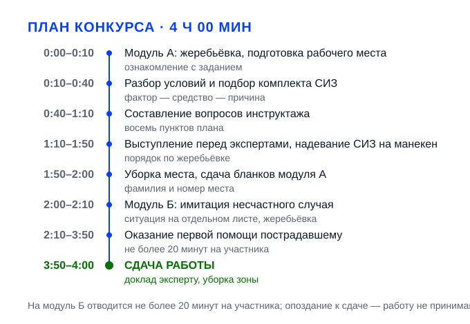
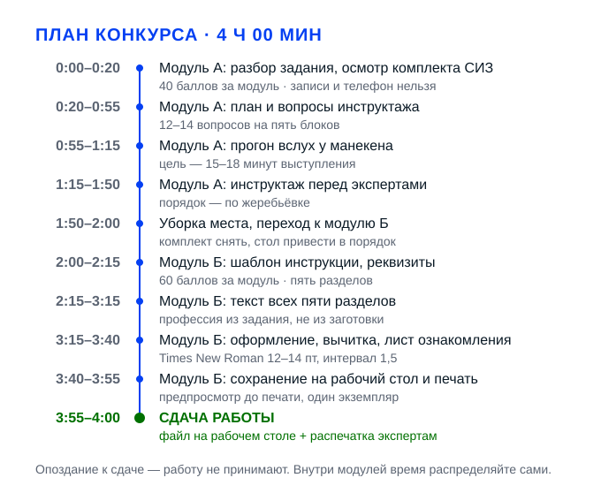
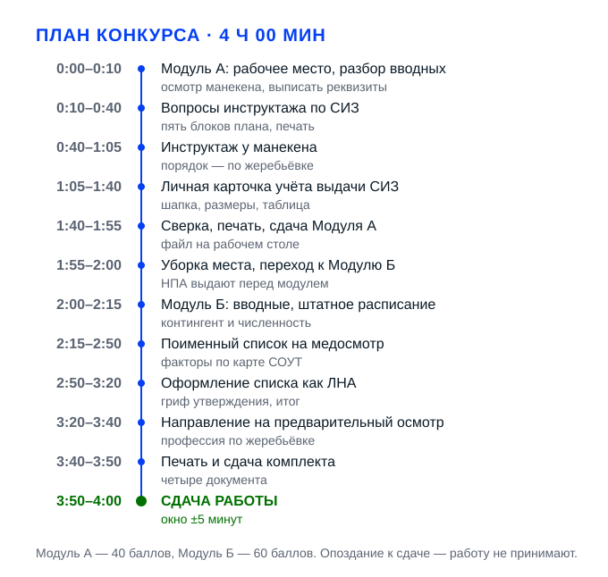

Специалист по охране труда (Р)
Задания ниже — официальные файлы «Абилимпикс» (источник: abilympics-russia.ru), разложенные по категориям. Решения написаны по тексту задания, регламенту и критериям оценки; в них указано, что именно проверяет эксперт.
Школьник
14–16 лет, базовый уровень заданияВ официальном файле категории не разделены отдельными разделами — приводим задание целиком; различия по категориям смотрите в таблице модулей.
Пошаговое решение
Задание для школьников по компетенции «Специалист по охране труда» состоит из двух модулей по 50 баллов каждый, всего 100 баллов и 4 часа чистой работы: два часа на модуль А и два часа на модуль Б. В модуле А вы подбираете средства индивидуальной защиты для работника с учётом повышенной эпидемиологической обстановки на фоне распространения острой респираторно-вирусной инфекции, составляете вопросы инструктажа по применению этих средств и проводите инструктаж перед экспертами, надевая средства защиты на манекен. В модуле Б вам выдают ситуацию несчастного случая на отдельном листе, и вы оказываете первую помощь пострадавшему — на это отводится не более 20 минут. Порядок выступления в обоих модулях определяется жеребьёвкой, поэтому нельзя рассчитывать, что вы пойдёте первым или последним. Главное, что оценивают: понимаете ли вы, от какого фактора защищает каждая вещь, умеете ли объяснить это работнику простыми словами и не теряете ли последовательность действий в первые минуты после происшествия. Баллы теряются не на сложных вещах, а на мелочах: маска, снятая за наружную поверхность, жгут без записки со временем, пропущенный вызов скорой.

Задача 1. Подготовить рабочее место и разобрать задание модуля АМодуль А · 50 баллов · 2 часа
Модуль А начинается не с инструктажа, а с подготовки: нужно осмотреть место, разложить средства защиты и бланки так, чтобы в нужный момент не искать их по столу, и вычитать задание до конца, выписав условия на лист. Эти пятнадцать минут не оплачиваются отдельным критерием, но именно от них зависит, успеете ли вы пройти все три части модуля — подбор, вопросы и выступление — в отведённые два часа. Рабочее место на площадке имеет размеры 3000 на 1900 миллиметров и проход между рабочими местами не менее 1,5 метра, освещённость не ниже 300 люкс, так что места хватает, если не заваливать стол всем сразу.
Действие 1.1. Осмотреть и организовать рабочее место
Шаг 1.1.1
Обходим рабочее место по периметру и трогаем руками всё, что стоит на столе: манекен, лоток со средствами защиты, папку с бланками, ручку. Манекен ставим по центру дальней части стола, лицом к себе, но так, чтобы к нему можно было подойти с обеих сторон — при надевании халата придётся обходить его кругом. Лоток с защитой ставим справа, бланки и ручку слева, ближе к краю: писать придётся, не вставая. Между манекеном и лотком оставляем свободную полосу шириной в ладонь, чтобы не переставлять предметы во время выступления.
Эксперт оценивает организацию рабочего места в первые минуты модуля, и это входит в общую оценку модуля А на 50 баллов. Практическая сторона важнее формальной: при инструктаже вы стоите лицом к экспертам и спиной к столу, поэтому всё нужное должно лежать в одной зоне, до которой можно дотянуться, не разворачиваясь и не прерывая объяснение. Если средства защиты свалены в кучу, вы будете искать нужное вслепую и терять нить рассказа.
Проверьте три вещи. Первое: стоя на месте выступающего, вы дотягиваетесь до лотка и до бланка, не делая шага. Второе: манекен не загораживает проход шириной 1,5 метра и к нему можно подойти с двух сторон. Третье: на столе нет ничего лишнего — сумок, посторонних бумаг, телефона.
Самая частая ошибка — поставить манекен вплотную к стене или к краю стола: при надевании халата вы не сможете обойти его сзади и будете натягивать ткань через голову, порвав её. Вторая — оставить лоток за спиной: каждое движение за предметом превращается в разворот корпусом, и эксперты видят суету вместо спокойной работы.
Эксперт подходит в первые две-три минуты и смотрит именно на это: свободен ли стол, доступен ли манекен, лежат ли средства защиты в зоне руки. Он же фиксирует, начал ли участник работать сразу или потратил время на перекладывание вещей.
Шаг 1.1.2
Проверяем освещение и своё место: садимся за стол, кладём перед собой лист задания и смотрим, нет ли тени от руки на тексте. Если тень есть, двигаем лист или включаем настольную лампу — на площадке должно быть не менее 300 люкс, но лампа часто стоит сбоку, и при письме рука закрывает половину строки. Стул подгоняем по высоте так, чтобы предплечье лежало на столе горизонтально, а ноги стояли на полу всей стопой.
Бланки и вопросы инструктажа вы заполняете от руки, и разборчивость почерка напрямую влияет на то, сможет ли эксперт прочитать написанное при оценке. Половина ошибок в таких работах — не смысловые, а «эксперт не разобрал слово». Посадка влияет на другое: при зажатых плечах и низком столе рука быстро устаёт, и к концу второго часа записи становятся небрежными.
Положите лист и напишите на черновике одну строку. Если строка идёт ровно, без наклона вниз или вверх, посадка нормальная. Если тень от руки падает на текст — переставьте лампу или сдвиньте лист на ладонь в сторону.
Типичная ошибка — писать, положив лист на колено или на край стола, свесив руку: буквы плывут, а через сорок минут кисть начинает дрожать. Вторая — работать при боковом свете, который даёт блик на глянцевой бумаге бланка: строки читаются с трудом, и вы пропускаете графы.
Отдельно освещение не оценивают, но эксперт видит, как оформлен бланк, и при спорной оценке неряшливая запись трактуется не в пользу участника. Ещё он смотрит на посадку: за низким столом участник быстро устаёт и к концу модуля пишет неразборчиво.
Шаг 1.1.3
Проверяем, что разрешено брать с собой: средства реабилитации по нозологии — кресло-коляску, программу экранного доступа, клавиатуру с кодом Брайля, слуховой аппарат. Всё остальное остаётся за пределами площадки: мобильные устройства с доступом в интернет, нормативные документы и любые записи, флэш-карты и внешние диски, канцелярские принадлежности, портфели и сумки. Если вы принесли свои ручки или блокнот, сдаём их до старта, а не прячем в кармане.
Запрет прописан в конкурсном задании отдельным пунктом, и он не формальность: записи и нормативные документы дают преимущество перед теми, кто работает по памяти. Обнаружение телефона или шпаргалки во время модуля приводит к обнулению результата, а не к снижению баллов, поэтому риск здесь несопоставим с выгодой. Тулбоксы на этой компетенции не предусмотрены, инструмент участнику не нужен.
Пройдитесь по карманам и по столу: телефон, наушники, бумаги, ручки. Разрешённое — только средства реабилитации, которые вы используете постоянно. Если сомневаетесь насчёт конкретного предмета, спросите у эксперта до старта, а не после замечания.
Частая ошибка — оставить телефон в кармане «на беззвучном»: вибрация во время выступления слышна, и это фиксируется как нарушение. Вторая — принести свои записи по охране труда, считая, что это разрешённый справочный материал: по заданию любые записи запрещены.
Эксперт проверяет стол и карманы до старта модуля, а также следит, не появились ли записи по ходу работы. Это его обязанность, а не пожелание. Если запрещённый предмет найден, он приглашает главного эксперта, и решение принимается уже не на уровне площадки.
Действие 1.2. Вычитать задание и выписать условия
Шаг 1.2.1
Читаем задание целиком, до последней строки, и при первом чтении ничего не записываем — только доходим до конца, чтобы понять объём. Затем читаем второй раз с ручкой и выписываем на лист три вещи: что именно требуется сделать, в каком порядке и что будет считаться результатом. В задании для школьников это подбор средств индивидуальной защиты, составление вопросов инструктажа, проведение инструктажа с использованием манекена и оказание первой помощи.
Оценка идёт по модулям, и внутри модуля А три части оцениваются отдельно: подбор, вопросы и выступление. Если вы начнёте с выступления, у вас не будет ни подобранного комплекта, ни плана, и инструктаж развалится. Двойное чтение нужно потому, что при первом проходе глаз цепляется за знакомые слова и пропускает условия, которые меняют всё задание, — например, упоминание повышенной эпидемиологической обстановки.
На листе должно быть не больше пяти строк, и по ним вы можете пересказать задание вслух за минуту. Если для пересказа нужно снова лезть в текст, значит вы выписали детали, а не структуру. Отдельно убедитесь, что выписан результат каждого этапа, иначе будет непонятно, что именно сдавать.
Ошибка новичка — начать выполнять с первой прочитанной фразы: подобрать первое, что попалось под руку, и только потом узнать, что комплект оценивают по перечню факторов. Вторая — читать задание по диагонали и не заметить, что выступление идёт по жеребьёвке.
Эксперт не оценивает ваш конспект, но по первым действиям видно, разобрался ли участник в структуре модуля. Хаотичный старт обычно приводит к потере времени в середине.
Шаг 1.2.2
Отдельно выписываем условия, которые меняют состав средств защиты: в задании для школьников прямо сказано про повышенную эпидемиологическую обстановку на фоне распространения острой респираторно-вирусной инфекции. Это значит, что к обычному комплекту от производственных факторов добавляются средства биологической защиты — маска или респиратор, перчатки, одноразовый халат, защита глаз, — и что в инструктаже нужно проговорить правила их ношения и замены.
Именно этот пункт отличает полный ответ от шаблонного. Участник, который подобрал только каску и спецобувь, теряет баллы за несоответствие условиям задания, потому что биологический фактор не учтён. По критериям модуля А оценивают подбор средств защиты и проведение инструктажа по их применению — и то и другое привязано к конкретным условиям, а не к абстрактному рабочему месту.
В вашем списке должна быть отдельная строка про биологическую опасность и хотя бы три средства, которые защищают именно от неё. Если таких средств меньше трёх, вы читали задание невнимательно. Проверьте также, что биологический фактор записан отдельной строкой, а не спрятан в общий перечень опасностей.
Классическая ошибка — подобрать универсальный комплект «от всего» и не связать его с текстом задания. Эксперт в этом случае задаёт вопрос, от какого фактора защищает конкретная вещь, и ответ «на всякий случай» стоит нескольких баллов.
Эксперт сверяет ваш комплект с условиями, выданными в задании, и отмечает, учтён ли эпидемиологический фактор отдельной позицией. Если фактор не назван, он задаёт наводящий вопрос про эпидемиологическую обстановку и по ответу видит, читал ли участник задание.
Шаг 1.2.3
Раскладываем два часа модуля А на три части и записываем план с временем: примерно 30 минут на разбор условий и подбор комплекта, 30 минут на составление вопросов инструктажа, 40 минут на репетицию и само выступление, 20 минут оставляем как запас на ожидание жеребьёвки и на уборку. Время выступления зависит от очереди, поэтому запас не роскошь, а необходимость.
Два часа кажутся большим сроком, но ожидание своей очереди съедает от двадцати минут до получаса, и участники, которые планировали «успеть всё в конце», выходят к экспертам с недописанным планом. Распределение времени входит в организационные навыки, которые эксперт отмечает по ходу модуля.
План записан с часами, а не с словами «сначала», «потом». Проверьте по нему текущее время: если вы отстаёте больше чем на десять минут, сокращайте не выступление, а оформление. Отметьте в плане контрольную точку на середине модуля: к ней комплект уже должен быть собран.
Ошибка — оставить выступление на последние полчаса: жеребьёвка может поставить вас последним, и времени на репетицию не останется вовсе. Вторая — потратить час на красивое оформление плана и не успеть проверить комплект.
Эксперт видит, работает участник по плану или бросается между частями. Спокойный темп при полном результате оценивается выше, чем спешка. Отдельно он отмечает, сколько времени участник потратил на оформление и осталось ли у него время на репетицию.
Задача 2. Подобрать комплект средств индивидуальной защитыМодуль А · часть оценки 50 баллов
Подбор — первая содержательная часть модуля А. Нужно не просто назвать знакомые предметы, а собрать комплект под конкретные условия: производственные опасности рабочего места плюс повышенная эпидемиологическая обстановка. Каждая вещь в комплекте должна иметь объяснение — от какого фактора защищает и почему без неё нельзя. Эксперт оценивает и сам набор, и обоснование: комплект из десяти предметов без объяснения проигрывает пяти предметам, про каждый из которых участник может сказать, что он держит и на какое время рассчитан.
Действие 2.1. Разобрать опасные факторы рабочего места
Шаг 2.1.1
Берём чистый лист и делим его вертикальной чертой на две колонки: слева пишем факторы, справа — то, что от них защищает. В левую колонку выписываем всё, что даёт задание и что вы видите на площадке: механические опасности — падение предметов, острые кромки, движущиеся части; физические — шум, вибрация, повышенная температура, электрический ток; химические — пары, пыль, аэрозоли; биологические — вирусы и бактерии, о которых сказано в условии.
Логика подбора всегда идёт от фактора к средству, а не наоборот. Если начать со средств, получится случайный набор, в котором легко пропустить целую группу опасностей — чаще всего биологическую, потому что о ней не думают по привычке. Колонки нужны ещё и для выступления: по этой таблице вы потом строите первый вопрос инструктажа.
В левой колонке должно быть не меньше четырёх групп факторов. Если у вас только механические и физические, вернитесь к тексту задания и найдите упоминание эпидемиологической обстановки. Четвёртая группа в вашем списке должна быть биологической — если её нет, задание прочитано не до конца.
Типичная ошибка — писать общими словами: «вредные факторы», «опасности производства». Такая запись не даёт ни одного конкретного средства. Вторая — забыть про биологический фактор и потерять сразу несколько позиций комплекта.
Эксперт слушает, как участник объясняет связь фактора и средства. Если связь названа точно, это засчитывается даже при неполном наборе. Если участник называет фактор без примера операции, эксперт просит привести пример и слушает ответ.
Шаг 2.1.2
Уточняем факторы по условиям конкретного рабочего места: смотрим, что за профессия указана в задании или выдана в вводных данных, и какие операции работник выполняет. Работа с компьютером добавляет фактор длительного статического напряжения и нагрузку на зрение; работа на улице — переохлаждение или перегрев; работа с инструментом — шум и локальную вибрацию. Дописываем эти факторы в левую колонку, помечая их другой ручкой, чтобы видеть, что они появились из условий, а не из общего перечня.
Задание на региональном чемпионате может быть изменено на 30 процентов, и одним из разрешённых изменений как раз является перечень средств индивидуальной защиты. Это значит, что заученный комплект может не подойти, а умение вывести его из условий — подойдёт всегда. Эксперт в такой ситуации смотрит, работает участник по фактам или по памяти.
Прочитайте свою левую колонку и для каждого фактора назовите операцию, при которой он возникает. Если операция не называется, фактор, скорее всего, лишний и только запутает выступление. Если хотя бы один фактор остался без операции, вычеркните его — он только удлинит выступление.
Ошибка — переносить в ответ весь перечень вредных факторов из учебника: выступление растягивается, а комплект остаётся несобранным. Вторая — не заметить, что профессия в задании изменена, и рассказывать о другом рабочем месте.
Эксперт сверяет названные факторы с условиями задания. Лишние факторы не штрафуются, но отнимают время, которого потом не хватит на главное. Изменение перечня средств защиты входит в разрешённые 30 процентов изменений задания, поэтому проверка идёт по фактам, а не по памяти.
Шаг 2.1.3
Отдельно проговариваем биологический фактор: в условиях задания он назван прямо — повышенная эпидемиологическая обстановка на фоне распространения острой респираторно-вирусной инфекции. Значит, путь передачи — воздушно-капельный и контактный, а защита строится по двум направлениям: дыхательные пути и руки плюс поверхности. Записываем это двумя строками, чтобы в комплекте появились и маска (или респиратор), и перчатки, и средства для обработки рук.
Одна маска без перчаток закрывает только один путь передачи, и этого недостаточно: вирус переносится и через руки, которыми человек касается лица и поручней. Полный ответ по биологическому фактору включает защиту дыхания, защиту кожи рук, защиту тела и глаз, а также обработку рук и утилизацию использованных средств — именно эту цепочку эксперт ищет в вашем подборе.
В правой колонке напротив биологического фактора должно стоять не менее четырёх позиций. Если там только маска, вернитесь к этому шагу и допишите перчатки, халат и защиту глаз. Проверьте, что в правой колонке напротив биологического фактора стоят и защита дыхания, и защита рук.
Самая частая ошибка — ограничиться медицинской маской. Вторая — назвать респиратор, но не сказать, чем он отличается от маски и когда нужен именно он. Третья ошибка — назвать респиратор «маской с клапаном» и не суметь объяснить, от чего этот клапан защищает.
Эксперт задаёт вопрос «от чего защищает эта вещь» и по ответу видит, понимает ли участник разницу между фильтрацией воздуха и защитой от брызг. Ответ «чтобы не заразиться» он не засчитывает: нужен путь передачи и конкретное средство на этом пути.
Действие 2.2. Собрать комплект по группам защиты
Шаг 2.2.1
Начинаем с защиты дыхания: выбираем медицинскую маску или респиратор и кладём её первой, отдельно от остального, потому что надевается она на лицо и требует чистых рук. Если в лотке есть и маска, и респиратор, берём оба и объясняем разницу: маска задерживает капли и брызги и рассчитана на непрерывное ношение не более двух часов, респиратор класса FFP2 или FFP3 фильтрует аэрозоль и носится до загрязнения или до появления затруднённого дыхания.
Защита дыхания — первое звено в комплекте против воздушно-капельной инфекции, и именно её отсутствие замечают быстрее всего. Умение объяснить разницу между маской и респираторм показывает, что участник не просто перечисляет предметы, а понимает назначение. В инструктаже это будет отдельный вопрос про выбор средства под задачу.
Возьмите маску в руки: носовая перемычка на месте и гнётся, резинки целые, упаковка не вскрыта. У респиратора проверьте маркировку класса и клапан — клапан должен быть закрыт крышкой, а не заклеен. Срок годности смотрите на упаковке, а не на память: просроченная маска теряет эластичность резинок.
Ошибка — взять маску с порванной резинкой: она не держится на лице, и вся защита сводится к нулю, а на выступлении видно, что участник не проверил средство перед применением. Вторая — назвать респиратор «маской посерьёзнее», не зная класса.
Эксперт смотрит, выбирает участник средство осознанно или берёт первое из лотка, и слушает объяснение разницы. Он также слушает, назван ли срок непрерывного ношения: для маски это два часа, для респиратора — до загрязнения.
Шаг 2.2.2
Добавляем защиту рук: перчатки по материалу и размеру. Для контакта с биологическими жидкостями и для медицинских задач берём нитриловые или латексные неопудренные, размер подбираем по обхвату ладони — перчатка должна сидеть плотно, без провисания на пальцах, но не сдавливать запястье. Если в лотке есть хозяйственные и защитные перчатки с более толстым слоем, называем их отдельно: они нужны от механических повреждений и химии, а не от вируса.
Перчатки закрывают контактный путь передачи и защищают кожу рук, через микротрещины которой инфекция тоже попадает в организм. Ошибка с размером не косметическая: слишком свободная перчатка сползает и рвётся при надевании, слишком тесная рвётся по шву при работе. Разделение перчаток по назначению — признак того, что участник понимает разницу между биологической и механической защитой.
Наденьте перчатку на руку: она должна натягиваться без хлопка, пальцы заполнены, манжета доходит до запястья. Проверьте надуванием — зажмите манжету и слегка надавите: перчатка не должна пропускать воздух через швы.
Классика — взять перчатки на два размера больше «чтобы легко надевались»: на манекене они сползают, а при снятии участник тянет за пальцы и рвёт материал. Вторая ошибка — надеть перчатки до маски, испачкав руки о наружную поверхность.
Эксперт проверяет, названо ли назначение перчаток и объяснён ли порядок их снятия — это самая частая точка потери баллов. Если участник не говорит о снятии, эксперт задаёт вопрос прямо: «как вы снимете эту перчатку?»
Шаг 2.2.3
Добавляем защиту тела и глаз: одноразовый халат или комбинезон, защитные очки либо щиток. Халат берём по размеру так, чтобы он застёгивался полностью и закрывал корпус до бёдер, манжеты ложились поверх перчаток, а не под них. Очки выбираем закрытого типа, с плотным прилеганием по бокам, потому что обычные открытые очки защищают только от фронтальных брызг.
Халат и очки закрывают слизистые и кожу от попадания капель, которые летят при кашле, чихании и разговоре на близком расстоянии. Манжета халата поверх перчатки — не формальность: при обратном порядке жидкость стекает по рукаву прямо на кожу. Оценка подбора идёт по комплекту целиком, и отсутствие любой из четырёх групп защиты читается как неполное решение задачи.
Наденьте халат на манекен: застёжка закрыта, манжеты целые, длина доходит до середины бедра. Очки примерьте на себя: дужки не жмут, обзор не искажается, зазор по бокам не больше пальца. Если халат не застёгивается, меняйте размер, а не закалывайте полы булавкой.
Ошибка — взять халат меньшего размера: он не застёгивается на спине, и при надевании на манекен ткань трещит по шву. Вторая — надеть перчатки поверх манжет халата, что нарушает порядок и делает защиту бессмысленной.
Эксперт смотрит на комплект целиком и отмечает, названы ли все четыре группы: дыхание, руки, тело, глаза. Отдельно он смотрит, названа ли защита глаз: участники часто считают очки необязательными.
Шаг 2.2.4
Дополняем комплект средствами обработки и утилизации: кожный антисептик или мыло, салфетки, пакет для использованных средств, при необходимости бахилы или шапочка. Кладём их в отдельную зону лотка и в выступлении называем последними — они не защищают напрямую, но без них цепочка не замыкается: грязную перчатку надо снять и выбросить, а руки обработать.
Без обработки рук и утилизации защита работает только наполовину: снятая перчатка остаётся источником, если её положить на стол или в карман. В инструктаже это отдельный вопрос, и он показывает понимание полного цикла применения средства защиты — от надевания до уничтожения. Эксперт оценивает именно полноту цикла.
В лотке должна быть отдельная ёмкость или пакет для использованных средств, и вы можете объяснить, куда они идут после снятия. Антисептик — с действующим веществом и не истёкшим сроком. Убедитесь, что пакет для использованных средств открыт и стоит рядом, а не лежит в глубине лотка.
Частая ошибка — снять перчатки и положить их на край стола: это грубое нарушение, которое видно сразу. Вторая — назвать антисептик, но не сказать, что руки обрабатывают до надевания и после снятия. Третья ошибка — назвать антисептик, не сказав, сколько времени руки должны оставаться влажными.
Эксперт фиксирует, прозвучало ли в ответе слово «утилизация» и показан ли пакет для использованных средств. Он также отмечает, названо ли время обработки рук антисептиком: тридцать секунд, до полного высыхания.
Действие 2.3. Проверить каждое средство перед применением
Шаг 2.3.1
Проверяем целостность и комплектность каждой позиции: у маски — резинки и носовая перемычка, у перчаток — швы и манжеты, у халата — застёжка и швы, у очков — стёкла и дужки. Проверку делаем на весу, не растягивая изделие в стороны: растянутая перчатка рвётся именно там, где вы её тянули. Всё сомнительное откладываем в сторону и не возвращаем в комплект.
Средство с дефектом не защищает и создаёт ложное чувство безопасности — это хуже, чем отсутствие средства, потому что работник уверен, что защищён. На конкурсе проверка входит в оценку подбора: эксперт смотрит, осматривает участник изделия или берёт их не глядя. Практический смысл тот же: порванная перчатка на руке рвётся в самый неподходящий момент.
Каждая позиция осмотрена и названа вслух: «маска целая, резинки эластичные», «перчатки без проколов». Если изделие вызывает сомнение, его место — в стороне, а не в комплекте. Отложенные изделия не возвращайте в лоток: их место — в стороне, чтобы не перепутать с проверенными.
Ошибка — проверять перчатки, надувая их до предела: они лопаются и вы остаётесь без средства. Вторая — не смотреть на срок годности и маркировку, хотя просроченный антисептик или старая резинка маски уже не работают.
Эксперт смотрит на руки участника в момент проверки: ощупывает ли он изделие, разворачивает ли его, читает ли маркировку. Отдельно фиксируется, читает ли участник маркировку или проверяет изделие только на ощупь.
Шаг 2.3.2
Читаем маркировку и срок годности на упаковке: наименование, защитные свойства, дата изготовления и срок хранения, для респиратора — класс защиты, для перчаток — материал и размер, для антисептика — действующее вещество и концентрация. Читаем именно на упаковке, а не на память: на площадке могут лежать аналоги с другими характеристиками. Если маркировка стёрта, изделие откладываем и берём другое: без неё нельзя сказать, от чего оно защищает.
Маркировка — единственный документ средства защиты на площадке, и по ней определяют, от чего изделие защищает. Перчатки из полиэтилена внешне похожи на нитриловые, но не держат биологические жидкости; маска без маркировки может быть не медицинской. Эксперт часто просит показать маркировку — это простой способ проверить, разбирается ли участник в предмете.
Вы можете назвать по каждому изделию три вещи: что это, от чего защищает, до какой даты годно. Если хотя бы по одному пункту ответа нет, изделие заменяем. Если маркировка на упаковке стёрта или не читается, изделие не годится, даже если выглядит новым.
Ошибка — взять первое похожее изделие и назвать его «перчатками», не посмотрев материал: на вопрос эксперта о свойствах ответа не будет. Вторая — не заметить, что упаковка вскрыта и изделие уже использовали.
Эксперт может попросить показать маркировку и спросить, что означает указанный класс или материал. Вопрос «что написано на упаковке» задают почти всегда — это быстрый способ проверить понимание.
Шаг 2.3.3
Сверяем собранный комплект со своим списком факторов: проходим по правой колонке сверху вниз и показываем пальцем на изделие, которое закрывает этот фактор. Если напротив фактора пусто, добираем средство из лотка; если изделие осталось без фактора, убираем его из комплекта или находим ему объяснение. Сверку делаем молча, водя пальцем по строкам: так видно, что вы работаете по списку, а не по памяти.
Сверка закрывает главную ошибку подбора — пропуск целой группы опасностей. Она же готова к выступлению: таблица «фактор — средство» и есть скелет первого вопроса инструктажа. Эксперт оценивает соответствие комплекта условиям, и такая проверка делает соответствие очевидным.
На листе не осталось фактора без средства и средства без фактора. Если что-то не сходится, решайте в пользу фактора: лучше добавить средство, чем оставить опасность без защиты. Если средство закрывает два фактора сразу, это нормально: перчатки, например, работают и против вируса, и против химии.
Ошибка — собрать красивый комплект из всего, что есть в лотке: лишние предметы без объяснения отнимают время выступления и дают эксперту повод задавать неудобные вопросы. Третья ошибка — оставить в комплекте средство, которое не подходит по размеру: оно не защищает и портит впечатление.
Эксперт сверяет комплект с условиями задания и отмечает не только наличие средств, но и отсутствие лишних. Он сравнивает число позиций в бланке и на столе: расхождение трактуется как небрежность.
Действие 2.4. Обосновать подбор и записать его
Шаг 2.4.1
Записываем комплект в бланк или на лист в виде коротких строк: наименование средства, защитный фактор, срок носки или замены. Пишем печатными буквами, по одной позиции в строке, чтобы запись читалась без ваших пояснений. Порядок строк — тот же, в котором вы будете надевать средства: дыхание, руки, тело, глаза, обработка. Дату и время заполнения ставим сразу, а не в конце: потом об этом забывают.
Запись нужна по двум причинам. Первая: эксперт оценивает подбор по документу, а не по памяти участника, и неразборчивая запись трактуется не в вашу пользу. Вторая: во время выступления лист служит планом, и порядок строк удерживает правильную последовательность надевания, которую легко перепутать под волнением.
Прочитайте запись вслух, не добавляя ничего от себя. Если смысл каждой строки понятен постороннему человеку — запись готова. Если приходится объяснять — переписывайте. Проверьте, что в каждой строке есть и наименование, и фактор: строка только с названием средства ничего не доказывает.
Ошибка — писать сокращениями, понятными только вам: «СИЗ дых.», «перч. нитр.». Эксперт потратит время на расшифровку и может не засчитать позицию. Вторая — записать средства в порядке, в котором они лежали в лотке.
Эксперт читает бланк после выступления и сверяет его с тем, что участник показывал и называл. Он сверяет бланк с комплектом на столе и отмечает, совпадают ли позиции по числу и наименованиям.
Шаг 2.4.2
Готовим короткое обоснование на каждую позицию — по одной фразе, в которой есть фактор и последствие: «респиратор нужен потому, что инфекция передаётся воздушно-капельным путём, а без фильтрации работник вдыхает аэрозоль в закрытом помещении». Обоснование проговариваем вслух, а не записываем дословно: дословная запись превращает выступление в чтение с листа.
Критерий оценки сформулирован как «провести инструктаж по применению средств индивидуальной защиты», то есть оценивают объяснение, а не перечисление. Фраза, в которой названы фактор и последствие, показывает понимание; фраза «это надо носить» не показывает ничего. Кроме того, именно такие фразы эксперт запоминает, когда выставляет баллы после выступления.
По каждой позиции вы можете сказать одну фразу с союзом «потому что». Если получается только «так положено», обоснования нет — перечитайте свою таблицу факторов. Проверьте, что в каждой фразе есть слово «потому что» или его смысловой аналог.
Ошибка — выучить обоснование наизусть и сбиться на середине: лучше говорить своими словами по таблице. Вторая — обосновывать все позиции одной фразой «для безопасности». Третья ошибка — обосновывать средство ссылкой на инструкцию, которой у вас нет: на площадке документы запрещены.
Эксперт слушает именно обоснования и по ним понимает, осознанный это подбор или случайный набор. По обоснованиям он видит, готовился участник к подбору или импровизирует на ходу.
Шаг 2.4.3
Откладываем готовый комплект в сторону, накрываем салфеткой или ставим в лоток так, чтобы он не мешал писать, и оставляем на столе до выступления. Перед выходом к экспертам проверяем по списку: все позиции на месте, ничего не упало на пол, бланк лежит сверху. Если рядом с лотком стоит штатив или подставка, пользуемся ими: на полу средства защиты пачкаются.
Подбор и выступление разделены по времени: между ними вы пишете вопросы инструктажа, и за это время комплект легко растерять. Упавшее на пол средство считается загрязнённым и не годится для надевания на манекен. Проверка перед выходом занимает полминуты и сохраняет весь результат предыдущего часа.
Сверьте количество позиций с записью в бланке. Всё, что поднято с пола, откладываем и заменяем, а не надеваем. Если позиция не сходится, ищите её в лотке: чаще всего не хватает перчаток, потому что их берут по две.
Ошибка — держать средства защиты в руках или на коленях, пока пишете: перчатки падают, маска мнётся. Вторая — выйти к экспертам и обнаружить, что половина комплекта осталась на дальнем краю стола. Третья ошибка — взять часть комплекта в руки, чтобы «не забыть»: руки заняты, и вы не сможете писать.
Эксперт видит комплект в момент выступления и сверяет его с бланком. Расхождение трактуется как небрежность. Перед выступлением он смотрит, полный ли комплект, и сверяет его с бланком.
Задача 3. Составить вопросы инструктажа и провести его на манекенеМодуль А · основная часть 50 баллов
Это ядро модуля А: вы составляете план вопросов инструктажа по применению средств индивидуальной защиты и затем проводите инструктаж перед экспертами, надевая средства на манекен. Оценивают три вещи одновременно — содержание плана, правильность последовательности надевания и качество объяснения. План можно держать в руках: в задании прямо сказано, что выступление разрешено проводить, используя план вопросов. Порядок выступления определяется жеребьёвкой, поэтому план должен быть готов к выходу в любой момент, а не «к концу модуля».
Действие 3.1. Составить план вопросов инструктажа
Шаг 3.1.1
Берём лист и пишем в столбик восемь пунктов, которые должны быть в любом инструктаже по средствам защиты: какие средства нужны и от чего защищают; когда их надевать; как проверить перед применением; в каком порядке надевать; как снимать; сколько можно носить и когда менять; как хранить и утилизировать; что делать при повреждении или загрязнении. Напротив каждого пункта оставляем место на две-три строки для короткого ответа.
Восемь пунктов закрывают весь цикл жизни средства защиты, и именно по этой полноте оценивают содержание инструктажа. Если пропустить снятие или утилизацию, инструктаж выглядит как рассказ о том, что надеть, и не отвечает на главный практический вопрос — как не запачкаться, когда защита уже поработала. Каркас из восьми пунктов удобен и в выступлении: по нему видно, где вы находитесь и сколько осталось.
В списке ровно восемь строк, и каждая начинается с вопросительного слова или глагола действия. Проверьте, что среди них есть пункт про снятие — его пропускают чаще всего. Если в списке меньше восьми строк, допишите недостающие до выступления, а не во время него.
Типичная ошибка — свести план к перечислению предметов: «маска, перчатки, халат, очки». Такой план не даёт инструктажа, и эксперт не слышит ни одного ответа на вопрос «зачем». Вторая — написать план на десяток пунктов и не успеть пройти его за отведённое время.
Эксперт смотрит план в руки участнику или слушает выступление и отмечает, какие пункты прозвучали. Полнота плана — отдельная строка в оценочном листе.
Шаг 3.1.2
Заполняем каждый пункт коротким ответом от двух до четырёх предложений, с конкретикой по вашим средствам. Например, по порядку надевания: сначала обработка рук, затем халат, затем маска с проверкой прилегания по краю лица, затем очки, и последними — перчатки, манжеты которых ложатся поверх манжет халата. По снятию: перчатки снимают первыми, выворачивая наизнанку, халат — скатывая от плеч к кистям, маску — только за резинки, очки — за дужки, руки обрабатывают после каждого этапа.
Конкретика отличает инструктаж от чтения оглавления. Порядок надевания и снятия — самая оцениваемая часть, потому что именно здесь происходит большинство заражений: человек снимает маску за наружную поверхность, на которой осели капли, и касается лица инфицированной рукой. Ответ, в котором назван порядок и объяснена причина, закрывает сразу два критерия — знание и понимание.
Прочитайте пункт про снятие: в нём должны быть названы все четыре средства и указано, что перчатки снимают первыми. Если порядок не назван, ответ неполный, даже если смысл передан верно. Отдельно проверьте, что в пункте про хранение названо место, а не просто слово «хранить».
Ошибка — написать «снять средства защиты и обработать руки», не раскрывая порядок: это самая частая потеря баллов во всём модуле. Вторая — перепутать порядок надевания и надеть перчатки до халата, а потом пытаться просунуть руки в рукава.
Эксперт слушает порядок и мысленно сверяет его с правильным. Ошибка в порядке снятия фиксируется отдельно от ошибки в рассказе. Он также слушает, названы ли сроки замены: маска меняется при намокании, перчатки — при повреждении.
Шаг 3.1.3
Прогоняем план вслух один раз, с часами в руке, стоя так, как будете стоять перед экспертами. Замеряем время: спокойный рассказ по восьми пунктам с показом на манекене занимает от семи до десяти минут. Если получилось больше двенадцати — сокращаем не пункты, а формулировки: убираем вводные фразы и повторы, оставляем факт и причину. Отмечаем на полях плана места, где сбились: именно там на выступлении нужна пауза.
Речь перед экспертами идёт медленнее, чем кажется: добавляются паузы на показ, на надевание средств, на поиск нужного предмета. Прогон вслух вскрывает места, где вы сбиваетесь, — обычно это переход от надевания к снятию. Репетиция не отнимает баллы, а сохраняет их: без неё половина участников теряет мысль на третьем пункте.
Вы прошли весь план без подглядывания в записи и уложились в двенадцать минут. Если пришлось останавливаться и искать место в плане — отметьте эти точки карандашом на полях. Если на прогон ушло больше двенадцати минут, сократите вводные фразы, а не пункты плана.
Ошибка — репетировать молча, «в голове»: на выступлении голос идёт быстрее мысли, и фразы рассыпаются. Вторая — учить текст наизусть дословно и потерять всё при первом же вопросе эксперта. Третья ошибка — репетировать сидя: на выступлении придётся стоять и показывать, и голос звучит иначе.
Эксперт оценивает связность речи и умение держать контакт, а не заученность формулировок. Он отмечает, держит ли участник темп и не теряет ли структуру к середине рассказа.
Действие 3.2. Надеть средства защиты на манекен
Шаг 3.2.1
Обрабатываем руки антисептиком и даём им высохнуть на воздухе, не вытирая о халат. Ставим манекен устойчиво, лицом к себе, и разворачиваем халат так, чтобы ворот был сверху, а застёжка смотрела от вас. Надеваем халат на манекен: сначала одну руку в рукав, затем другую, затем заводим полы за спину и застёгиваем сверху вниз, расправляя складки ладонью по ткани.
Халат надевают первым из средств, закрывающих тело, потому что он лежит под перчатками и очками и его манжеты должны оказаться под манжетами перчаток. Обработка рук до надевания — обязательный элемент: средство защиты надевают на чистые руки, иначе под перчаткой создаётся влажная среда, а вместе с ней и риск. Порядок и аккуратность надевания прямо входят в оценку модуля А.
Халат застёгнут на все кнопки или завязки, ворот лежит ровно, складок и перекосов нет, манжеты на месте и не подвёрнуты. Обойдите манекен и посмотрите со спины: там чаще всего остаётся незастёгнутая пола.
Ошибка — надевать халат, не развернув его: застёжка оказывается на спине, и вы начинаете крутить манекен. Вторая — дёргать рукав за манжету: шов расходится, и на оценке видно, что средство испорчено. Третья ошибка — надеть халат на манекен, стоящий слишком близко к стене: со спины его не застегнуть.
Эксперт смотрит на порядок: обработаны ли руки, правильно ли сориентирован халат, застёгнут ли он до конца. Он также отмечает, обойдёт ли участник манекен со спины перед застёгиванием: этого требуют сами условия работы.
Шаг 3.2.2
Берём маску за резинки, а не за середину полотна, прикладываем к лицу манекена цветной стороной наружу, прогибаем носовую перемычку по форме переносицы и заводим резинки за уши. Затем ладонями проверяем прилегание по краю: прижимаем маску и делаем короткий выдох — воздух не должен выходить по верхнему краю и уходить в глаза. Если в лотке респиратор, надеваем его так же и проверяем клапан.
Прилегание по краю лица — главное условие работы маски: если воздух идёт в обход фильтра, средство не защищает, хотя внешне всё выглядит правильно. Проверка выдохом занимает три секунды и показывает результат сразу. Носовая перемычка нужна потому, что именно через верхний край воздух уходит чаще всего, а очки при этом запотевают.
Маска закрывает нос, рот и подбородок, резинки за ушами, перемычка обжата. При выдохе воздух не идёт по верхнему краю, очки не запотевают. Если маска сползает — переделайте, а не поправляйте на ходу. Проверьте, что резинки не давят за ушами: если давят, маску снимут раньше времени.
Классика — взять маску за середину и приложить, не закрепив резинки: она держится только за счёт трения и сползает при первом же наклоне. Вторая ошибка — оставить нос открытым, сдвинув маску на подбородок: это грубое нарушение, которое видно эксперту сразу.
Эксперт наблюдает, проверяет ли участник прилегание, и смотрит, закрыты ли нос и подбородок. Он проверяет, закрыт ли подбородок: маска, сдвинутая на подбородок, не считается надетой.
Шаг 3.2.3
Надеваем защитные очки: берём за дужки, а не за стёкла, ставим на лицо манекена поверх маски, заводим дужки за уши и поправляем так, чтобы нижний край очков не поднимал маску. Если есть щиток, крепим его на голове по размеру и проверяем, что он закрывает лицо до подбородка и не касается маски. Если дужки очков мешают маске, сначала поправляем маску, потом снова надеваем очки.
Очки ставятся после маски и поверх неё, потому что иначе дужки сдвинут маску и нарушат прилегание. Защита глаз закрывает слизистую от капель, которые летят при кашле и разговоре, — а слизистая оболочка глаза один из входов для инфекции. На конкурсе оценивают и сам факт наличия защиты глаз, и то, надето ли средство правильно.
Очки сидят ровно, стёкла не запотели, нижний край не давит на маску, зазор по бокам не больше пальца. Обзор не искажён: посмотрите через очки на свой план — текст должен читаться. Если стёкла запотели, снимите очки, протрите и наденьте снова — запотевшие стёкла не защищают.
Ошибка — надеть очки до маски и потом проталкивать маску под ними: прилегание нарушается, и вся защита дыхания теряет смысл. Вторая — взять очки за стёкла, оставив на них отпечатки, через которые ничего не видно.
Эксперт проверяет последовательность: маска, затем очки, а не наоборот, и смотрит на посадку по бокам. Он смотрит на порядок и на то, не поправляет ли участник маску через очки.
Шаг 3.2.4
Надеваем перчатки последними: берём первую за манжету с внутренней стороны, натягиваем до конца, расправляя пальцы, затем вторую — уже оперированной рукой, не касаясь её наружной поверхности. Манжету перчатки натягиваем поверх манжеты халата, а не под неё. Проверяем, что на пальцах нет провисаний, а между пальцами не осталось воздушных пузырей. Большой палец при надевании подворачиваем внутрь, чтобы не зацепить манжету.
Перчатки надеваются последними, потому что всё остальное уже надето, и оперированными руками нельзя поправлять маску или очки — это загрязнение. Манжета перчатки поверх манжеты халата закрывает стык, через который жидкость иначе стекает на кожу предплечья. Именно этот порядок эксперт и проверяет: он показывает, понимает ли участник логику барьера, а не просто перечисляет предметы.
Перчатки сидят плотно, манжеты поверх халата, пальцы расправлены. Поднимите руки манекена вверх на несколько секунд: манжета не должна отходить от рукава. Проверьте, что манжета перчатки перекрывает манжету халата не меньше чем на два сантиметра.
Ошибка — надеть перчатки раньше халата и потом пытаться просунуть руки в рукава: манжеты выворачиваются, а перчатки рвутся. Вторая — оставить манжету халата поверх перчатки, что открывает путь жидкости к коже.
Эксперт смотрит на стык манжет и на то, поправляет ли участник маску оперированной рукой. Он фиксирует, надеты ли перчатки последними: это признак понимания порядка, а не случайность.
Действие 3.3. Провести инструктаж перед экспертами
Шаг 3.3.1
Встаём так, чтобы эксперты видели и вас, и манекен: в полутора метрах от стола, чуть сбоку, лицом к комиссии. Начинаем с трёх фраз: кто инструктируемый и по какому поводу, какие средства будут разобраны и сколько времени займёт инструктаж. План держим в руках на уровне пояса, чтобы можно было в него заглянуть, не закрывая лицо. Говорим громче, чем кажется нужным: помещение на площадке большое, а голос в волнении садится.
Первые тридцать секунд задают оценку всего выступления: эксперт должен понять, что происходит, без пояснений с вашей стороны. Позиция сбоку важна практически — при показе надевания вы закрываете манекен корпусом, и комиссия не видит ключевых движений, за которые ставит баллы. План на уровне пояса позволяет сверяться одним движением глаз.
Вы видите лица экспертов, а манекен — в поле зрения обоих. План не закрывает лицо и не мешает жестам. Если приходится поворачиваться к манекену спиной — переставьте манекен, а не выкручивайтесь. Если приходится повышать голос дважды, попросите разрешения подойти ближе к комиссии.
Ошибка — встать за столом так, что манекен закрыт вашей спиной: эксперт видит только затылок и не может оценить надевание. Вторая — начать сразу с дела, без представления: комиссия тратит первые минуты на догадки.
Эксперт оценивает и подачу: слышно ли, видно ли, держит ли участник контакт. Это входит в общую оценку инструктажа. Он оценивает и то, не читает ли участник с листа: чтение вслух снижает оценку за инструктаж.
Шаг 3.3.2
Проходим по пунктам плана в том порядке, в котором они записаны, и на каждом называем фактор и средство: «от воздушно-капельной инфекции — маска или респиратор, от контакта с поверхностями — перчатки, от капель на одежде и слизистых — халат и очки». Не перескакиваем: один пункт — один факт и одна причина. Если сбились, возвращаемся к плану и продолжаем с того места, где остановились, без извинений.
Инструктаж оценивают по содержанию: эксперт должен услышать по каждому средству ответ на вопрос «от чего защищает» и «когда применяется». Связка «фактор — средство — причина» делает ответ проверяемым: её нельзя дать наугад. Возврат к плану без извинений выглядит как рабочая ситуация, а не как провал, и не сбивает оценку.
По каждому средству из комплекта прозвучало название, фактор и условие применения. Если какое-то средство осталось без объяснения — вернитесь к нему в конце, коротко. Считайте вслух по своему комплекту: шесть позиций — шесть объяснений, ни одного пропущенного.
Ошибка — рассказывать о средствах защиты вообще, без привязки к своему комплекту: эксперт не может засчитать позицию, которой не было в подборе. Вторая — извиняться за каждую заминку и терять нить. Третья ошибка — рассказывать про средства, которых нет в комплекте: такие позиции не засчитываются.
Эксперт отмечает в листе, по каким позициям прозвучало обоснование, и сверяет их с подбором. Он подходит ближе, когда участник переходит к показу: в этот момент слышно, знает ли тот порядок наизусть.
Шаг 3.3.3
Показываем порядок надевания и снятия на манекене, проговаривая каждое движение: «обрабатываем руки — надеваем халат — маску с проверкой прилегания — очки — перчатки поверх манжет». Снятие показываем в обратном порядке и обязательно с пояснением про перчатки: их снимают первыми, выворачивая наизнанку, не касаясь наружной поверхности. Каждое действие делаем медленно, чтобы комиссия успевала следить.
Показ — самая весомая часть выступления, потому что проверяет не слова, а навык. Порядок снятия здесь важнее порядка надевания: именно при снятии человек касается загрязнённых поверхностей и переносит инфекцию на лицо. Формулировка «выворачивая наизнанку, не касаясь наружной поверхности» показывает, что участник понимает механизм, а не повторяет заученную фразу.
Вы проговорили вслух оба порядка и оба раза назвали перчатки первыми при снятии. Манекен после показа одет правильно: манжеты перчаток поверх халата, маска закрывает нос. Проговорите оба порядка ещё раз, если сбились: повтор не штрафуется, а пропуск — да.
Ошибка — показывать молча: эксперту приходится догадываться, что вы делаете, и баллы за объяснение не начисляются. Вторая — снимать перчатки, стягивая за пальцы: наружная поверхность оказывается снаружи, и весь смысл приёма теряется.
Эксперт смотрит на руки в момент снятия перчаток: это ключевая точка, по которой судят о навыке. Он может попросить повторить снятие перчаток ещё раз — на повторе видно, навык это или случайное движение.
Шаг 3.3.4
Заканчиваем инструктаж проверкой понимания: задаём комиссии или воображаемому работнику два коротких вопроса — «что вы сделаете, если маска намокла» и «в каком порядке будете снимать средства после работы». Ответы проговариваем сами, коротко: намокшую маску меняют сразу, потому что влажная ткань не фильтрует; снимают в порядке перчатки, халат, очки, маска, с обработкой рук после каждого этапа.
Проверка понимания — обязательный элемент любого инструктажа, и её наличие отличает полный ответ от монолога. Вопросы про намокшую маску и порядок снятия выбраны не случайно: это две ситуации, в которых чаще всего ошибаются на практике, и эксперт по ответу видит, готов ли участник к работе, а не только к выступлению.
В выступлении прозвучали оба вопроса и оба ответа. Если время подходит к концу, задайте хотя бы один — про порядок снятия. Проверьте, что ответ на вопрос прозвучал целиком, а не оборвался на полуслове из-за спешки.
Ошибка — закончить на полуслове и ждать вопросов от комиссии: инструктаж без проверки понимания считается незавершённым. Вторая — задать вопрос и не дать ответа, оставив его открытым. Третья ошибка — задать вопрос и тут же ответить за работника, не дав паузы: обратной связи не получается.
Эксперт фиксирует наличие обратной связи в конце и оценивает точность ответов. Если обратной связи нет, он задаёт свой вопрос по ситуации — чаще всего про намокшую маску.
Действие 3.4. Снять средства защиты и сдать работу по модулю А
Шаг 3.4.1
Снимаем средства с манекена в правильном порядке: перчатки — первыми, захватывая манжету снаружи и стягивая перчатку наизнанку, вторую снимаем уже голой рукой за внутреннюю сторону; затем халат, скатывая его от плеч к кистям так, чтобы наружная поверхность оказалась внутри; затем очки за дужки; маску — последней, только за резинки. Каждое средство снимаем над пакетом, а не над столом: так ничего не падает на поверхность.
Порядок снятия обратен порядку надевания, и это не формальность: каждое следующее средство снимается чистыми или менее загрязнёнными руками. Если снять маску первой, руки, которыми вы держали загрязнённые перчатки, коснутся лица. Эксперт смотрит на этот этап особенно внимательно — ошибка здесь стоит баллов сразу по двум критериям: знание порядка и соблюдение безопасности.
После снятия все четыре средства лежат в пакете для использованных, наружные поверхности внутри, манекен чистый. Руки обработаны антисептиком после каждого этапа. Проверьте, что перчатки вывернуты наизнанку: наружная поверхность должна оказаться внутри.
Ошибка — снять всё сразу, свалив в кучу: наружные поверхности соприкасаются, и пакет превращается в источник. Вторая — снять маску за полотно и положить её на стол. Третья ошибка — снять очки за стёкла: пальцы касаются загрязнённой поверхности прямо перед лицом.
Эксперт наблюдает за снятием до конца и отмечает, вывернуты ли перчатки и куда отправлены средства. Он также смотрит, снимает ли участник средства над пакетом, а не над открытым столом.
Шаг 3.4.2
Убираем использованные средства в пакет, завязываем его и относим в отведённое место, а не оставляем на столе. Протираем манекен и поверхность стола салфеткой с антисептиком, даём высохнуть. Одноразовые салфетки идут в тот же пакет, многоразовые — в отведённую ёмкость. Если на столе остались капли, протираем дважды: один проход только размазывает их.
Уборка после модуля — часть оценки организации рабочего места и соблюдения санитарных требований. Практический смысл тоже есть: следующий участник работает за этим же столом, и оставленные средства защиты создают риск для него. Кроме того, чистое место к моменту сдачи читается как доведённая до конца работа.
Стол пустой: пакет унесён, манекен протёрт, на поверхности нет салфеток и упаковок. Пройдите взглядом по столу с уровня эксперта. Проверьте, что пакет завязан и унесён, а не стоит под столом: под столом его не видно, но он там есть.
Ошибка — оставить пакет с использованными средствами на краю стола «чтобы видели, что работал»: это нарушение, а не доказательство работы. Третья ошибка — протереть манекен сухой салфеткой: без антисептика это переносит загрязнение по поверхности.
Эксперт проходит по площадке после выступления и оценивает состояние места. Он обращает внимание на пол и на край стола: там остаются упаковки, которых не видно с первого взгляда.
Шаг 3.4.3
Сдаём бланк с подбором и планом вопросов экспертам, называя своё имя и номер рабочего места. Коротко, в трёх фразах, говорим, что сделано: комплекс подобран под такие-то факторы, инструктаж проведён по восьми вопросам, порядок надевания и снятия показан. Дальше отвечаем на вопросы, если они есть, и не начинаем оправдываться заранее. Если эксперт занят, ждём и не кладём бланк на стол: документ передаётся из рук в руки.
Сдача — формальная, но оцениваемая часть: эксперт должен получить документ до того, как поставит баллы, иначе работа уходит в «не сдано». Три фразы итога помогают комиссии связать бланк с выступлением и засчитать позиции, которые могли остаться незамеченными. Извинения и самооценка в этот момент только мешают.
Бланк в руках эксперта, ваша фамилия и номер места написаны, все страницы на месте. Вы можете назвать три вещи, которые сделали в модуле. Убедитесь, что лист не смят и не залит: помятый бланк читается хуже и производит плохое впечатление.
Ошибка — оставить бланк на столе и уйти: работа не считается сданной. Вторая — начать перечислять, что не получилось, раньше, чем эксперт задал вопрос. Третья ошибка — уйти, не дождавшись, пока эксперт возьмёт бланк: работа остаётся неучтённой.
Эксперт принимает бланк и отмечает время сдачи; по нему потом сверяет записи. Если бланк подан позже времени сдачи модуля, это фиксируется отдельно, и часть баллов не начисляется.
Задача 4. Оказать первую помощь пострадавшемуМодуль Б · 50 баллов · не более 20 минут
Модуль Б — вторая половина конкурса, тоже на 50 баллов. Перед началом вам показывают имитацию несчастного случая: в ней могут участвовать волонтёры или использоваться манекен-тренажёр, а сама ситуация выдаётся на отдельном листе. На выполнение задания каждому участнику отводится не более 20 минут, порядок устанавливается жеребьёвкой непосредственно перед модулем. Оценивают последовательность: безопасность, вызов помощи, осмотр, приёмы по конкретной травме и контроль состояния до прибытия спасательных служб. Самая частая потеря баллов здесь не в технике, а в пропущенном первом шаге — участник бросается помогать, не убедившись, что ему самому ничего не угрожает.
Действие 4.1. Оценить обстановку и вызвать помощь
Шаг 4.1.1
Останавливаемся в двух-трёх шагах от пострадавшего и сначала смотрим по сторонам, а не на него: что стало причиной, действует ли причина до сих пор. Если рядом лежит провод под напряжением — не подходим, а ищем рубильник; если на проезжей части — выставляем знак или просим кого-то из очевидцев оградить место; если в помещении дым — не входим без защиты. Только убедившись, что опасности нет, подходим к пострадавшему.
Первая помощь начинается с оценки обстановки, и этот шаг стоит первым в перечне мероприятий по оказанию первой помощи. Логика жёсткая: второй пострадавший не помогает первому, а усложняет ситуацию — спасателям приходится работать с двумя. На конкурсе эксперт смотрит именно на эти первые секунды: подошёл участник сразу или сначала осмотрелся.
Вы можете назвать причину происшествия и сказать, устранена ли она. Если назвать не можете — вы не оценили обстановку, а просто начали действовать. Если причина не устранена, отходим и зовём на помощь, а не подходим ближе.
Самая частая и самая дорогая ошибка — сразу наклониться над пострадавшим. В ситуации с электричеством это заканчивается двумя пострадавшими, а на конкурсе снимает баллы за весь блок безопасности. Вторая — стоять и раздумывать, теряя первые минуты.
Эксперт фиксирует момент подхода к пострадавшему и то, осмотрелся ли участник перед этим. Это первая строка в оценочном листе модуля Б. Он также слушает, названа ли причина происшествия вслух: без этого оценка за безопасность снижается.
Шаг 4.1.2
Надеваем перчатки из аптечки, не касаясь их наружной поверхности голыми руками, и берём аптечку так, чтобы она была под рукой. Считаем пострадавших: если их несколько, сначала громко называем число и просим помощи у окружающих, потому что один человек не сможет эффективно помочь двоим. Если очевидцев нет, работаем один и сразу это учитываем в плане.
Перчатки — минимальная защита при контакте с кровью и другими биологическими жидкостями; без них помощь опасна для самого помогающего. Подсчёт пострадавших нужен до начала помощи, потому что порядок действий зависит от их числа: при двух пострадавших сначала останавливают кровотечение у того, кто может погибнуть быстрее.
Перчатки на руках, аптечка открыта и стоит рядом, число пострадавших названо вслух. Если перчаток нет — используем пакет или чистую ткань как прослойку и говорим об этом. Проверьте, что перчатки сидят по размеру: свободные сползают при первом же движении.
Ошибка — работать голыми руками «потому что быстро»: это нарушение и риск, и эксперт фиксирует его отдельно. Вторая — начать помощь, не посчитав пострадавших, и обнаружить второго через пять минут. Третья ошибка — надевать перчатки, держа их за пальцы: наружная поверхность остаётся загрязнённой.
Эксперт смотрит, надеты ли перчатки до контакта с пострадавшим, и прозвучало ли число пострадавших. Он может спросить, что участник сделает, если перчаток в аптечке не окажется.
Шаг 4.1.3
Звоним по номеру 103 или 112, включив громкую связь, чтобы руки оставались свободными. Говорим по схеме: точный адрес и ориентир, что случилось, сколько пострадавших, их пол и примерный возраст, в сознании ли они и есть ли дыхание, что вы уже делаете. Не кладём трубку первым: диспетчер может задать уточняющие вопросы и дать указания. Если связи нет, просим вызвать кого-то из очевидцев и просим его вернуться с подтверждением.
Вызов скорой — обязательный элемент первой помощи, и его отсутствие обнуляет всю дальнейшую работу: помощь без вызова не считается оказанной. Громкая связь нужна практически — при остановке сердца счёт идёт на минуты, и тратить их на разговор, стоя над пострадавшим, нельзя. Адрес и ориентир называют первыми, потому что при обрыве связи диспетчер успеет записать главное.
Вы можете повторить, что сказали диспетчеру: адрес, характер происшествия, число пострадавших, состояние. Трубка не сброшена до конца разговора. Если диспетчер переспросил адрес, значит, вы назвали его нечётко; повторите с ориентиром.
Ошибка — позвонить после всех манипуляций: время уходит, а бригада выезжает позже. Вторая — назвать адрес «примерно» или бросить трубку сразу после первого предложения. Третья ошибка — звонить в скорую после того, как начали реанимацию: компрессии не откладывают.
Эксперт слушает вызов и отмечает, названы ли адрес, характер происшествия и число пострадавших. Вызов входит в перечень обязательных мероприятий. Если участник говорит с диспетчером скороговоркой, он просит повторить: слышимость входит в оценку.
Действие 4.2. Осмотреть пострадавшего
Шаг 4.2.1
Опускаемся рядом на колени с той стороны, где удобнее работать, и проверяем сознание: громко спрашиваем «вы меня слышите?», называем себя, затем осторожно берём за плечи и слегка встряхиваем. Если реакции нет, повторяем громче и проверяем реакцию на боль — сжимаем мочку уха или основание ногтя. Голову при этом не запрокидываем и шею не крутим. Если человек в сознании, сразу спрашиваем, что случилось и где болит, но осмотр не отменяем.
Проверка сознания определяет весь дальнейший порядок: при сознании один алгоритм, без сознания — другой, а при отсутствии дыхания сразу начинается сердечно-лёгочная реанимация. Грубое встряхивание за плечи при травме шеи опасно, поэтому движение должно быть коротким и мягким. Голос и прикосновение — два разных раздражителя, и проверяют их по очереди.
Вы можете сказать односложно: в сознании или нет. Если человек стонет, но не отвечает — сознание угнетено, и это уже основание для вызова скорой и контроля дыхания. Если ответ невнятный, повторите вопрос через полминуты: реакция может измениться.
Ошибка — трясти пострадавшего за грудки и кричать ему в лицо: при травме головы и шеи это опасно, а ответа всё равно не даёт. Вторая — считать, что человек без сознания не дышит, и начинать реанимацию без проверки дыхания.
Эксперт смотрит на характер проверки: громкость голоса, осторожность движения, отсутствие грубых встряхиваний. Он смотрит на осторожность движения: при травме шеи грубое встряхивание опасно.
Шаг 4.2.2
Проверяем дыхание: укладываем пострадавшего на спину, одну руку кладём на лоб и осторожно запрокидываем голову, двумя пальцами приподнимаем подбородок, освобождая дыхательные пути. Наклоняемся щекой ко рту и носу и в течение 10 секунд слушаем, смотрим и ощущаем: движения грудной клетки, шум выдоха, тепло на щеке. Считаем вдохи, не торопясь. Если слышны хрипы или бульканье, поворачиваем голову набок и очищаем рот пальцем в перчатке.
Проверка дыхания — центральный пункт осмотра, и на неё отводят именно 10 секунд: меньше — можно не заметить редкое дыхание, больше — теряется время, если дыхания нет. Запрокидывание головы освобождает дыхательные пути, потому что у человека в бессознательном состоянии язык западает и перекрывает вход в гортань. Без этого приёма можно решить, что дыхания нет, и начать реанимацию при живом человеке.
Вы насчитали вдохи или убедились, что их нет. Одновременно видно, есть ли движения грудной клетки и слышен ли выдох. Результат формулируем словами: «дыхание есть, частота примерно такая-то» или «дыхания нет».
Ошибка — проверять дыхание, не запрокинув голову: при запавшем языке дыхание отсутствует, хотя человек жив. Вторая — смотреть на грудь три секунды и делать вывод: редкое дыхание так не выявляется. Третья ошибка — проверять дыхание, положив руку на грудь: движения рукой не ощущаются, нужен наклон.
Эксперт засекает время проверки дыхания и смотрит, освобождены ли дыхательные пути. Он также отмечает, наклоняется ли участник щекой ко рту: со стороны это видно сразу.
Шаг 4.2.3
Осматриваем пострадавшего с головы до ног, не переворачивая его без необходимости: ощупываем голову, проверяем лицо, шею, грудную клетку, живот, таз, руки и ноги. Ищем кровь на одежде и под телом — лужу под пострадавшим видно раньше, чем саму рану. Обувь и плотную одежду не снимаем, а разрезаем или приподнимаем край, если нужно увидеть повреждение.
Полный осмотр нужен потому, что пострадавший часто не чувствует боли из-за шока и называет не ту травму, которая опаснее. Кровотечение под одеждой находят именно так: по мокрому пятну и по бледности кожи. Переворачивать человека без необходимости опасно при травме позвоночника, поэтому осмотр ведут по передней поверхности и бокам.
Вы можете перечислить найденные повреждения по областям тела и назвать, какое из них угрожает жизни в первую очередь. Если названо только одно повреждение — осмотр неполный. Отдельно проверьте спину и ягодицы, если можете осмотреть без переворачивания: там бывает скрытая кровь.
Ошибка — увидеть кровь на руке и заниматься только рукой, не заметив, что человек бледнеет от внутреннего кровотечения. Вторая — начать снимать куртку через голову при подозрении на травму шеи. Третья ошибка — снимать обувь, чтобы осмотреть ноги: при переломе это смещает отломки.
Эксперт смотрит на последовательность осмотра и на то, выявлено ли скрытое повреждение, заложенное в ситуации. Он смотрит на последовательность осмотра: сверху вниз, без пропуска областей тела.
Действие 4.3. Выполнить приёмы помощи по ситуации
Шаг 4.3.1
Если сознания и дыхания нет, сразу начинаем сердечно-лёгочную реанимацию: основание одной ладони ставим на середину грудной клетки, вторую сверху, пальцы сцепляем, руки выпрямляем в локтях и давим весом тела на глубину 5–6 сантиметров с частотой 100–120 нажатий в минуту. После 30 нажатий делаем 2 вдоха искусственного дыхания и повторяем цикл, не останавливаясь на разговоры.
При остановке сердца каждая минута без компрессий снижает вероятность выживания примерно на 10 процентов, поэтому глубина, частота и непрерывность здесь важнее всего остального. Глубина 5–6 сантиметров и частота 100–120 в минуту — не рекомендация, а условие эффективности: слабое нажатие не проталкивает кровь, слишком частое не даёт сердцу наполниться.
Манекен-тренажёр даёт обратную связь по глубине и частоте — следите за индикатором. Руки не сгибаются в локтях, плечи над грудной клеткой, между циклами пауза не больше 10 секунд. Если индикатор показывает недостаточную глубину, давите сильнее, а не чаще.
Ошибка — давить руками, согнутыми в локтях: через две минуты силы кончаются, глубина падает. Вторая — останавливаться каждые полминуты, чтобы проверить, не очнулся ли: проверка идёт не чаще раза в две минуты.
Эксперт смотрит на точку постановки рук, глубину, частоту и на то, не прерывает ли участник компрессии без нужды. Он смотрит на точку постановки рук: смещение к мечевидному отростку опасно для печени.
Шаг 4.3.2
Если дыхание есть, а сознания нет, переводим пострадавшего в устойчивое боковое положение: ближнюю к себе руку отводим вверх, дальнюю руку кладём на грудь, дальнюю ногу сгибаем в колене и, придерживая голову, поворачиваем человека на бок одним движением. Голову слегка запрокидываем, чтобы дыхательные пути оставались свободными, рот приоткрываем. Если рядом есть помощник, он придерживает голову, пока вы поворачиваете тело.
В боковом положении язык не западает и рвотные массы не попадают в дыхательные пути — это главная причина смерти людей без сознания, которые дышат. Положение на спине в такой ситуации опасно: человек может задохнуться, хотя сердце работает. Приём входит в обязательный перечень мероприятий первой помощи.
Пострадавший лежит на боку, голова запрокинута, рот не закрыт, дыхание слышно и не затруднено, тело не заваливается на живот. Ноги и руки служат опорой, а не подворачиваются под тело. Проверьте, что рука под головой не согнута: иначе через несколько минут голова запрокинется обратно.
Ошибка — просто повернуть голову набок, оставив тело на спине: язык всё равно западает. Вторая — уложить на бок при подозрении на травму позвоночника без необходимости, хотя при сохранённом дыхании и отсутствии сознания положение на боку всё равно нужно.
Эксперт смотрит на технику поворота: одним движением, с придержанием головы, без рывка за руку. Он проверяет, остался ли рот приоткрытым: закрытый рот при боковом положении сводит приём к нулю.
Шаг 4.3.3
При сильном кровотечении из раны надавливаем на неё стерильной салфеткой или свёрнутой тканью всей ладонью, при необходимости — двумя руками, и держим без перерыва не менее пяти минут, не проверяя «остановилось ли». Если кровь идёт струёй и давит сквозь повязку, накладываем жгут выше раны на 5–7 сантиметров, затягиваем до остановки кровотечения и обязательно пишем на видном месте время наложения.
Прямое давление останавливает большинство кровотечений и является первым приёмом; жгут — крайняя мера, потому что при ношении дольше определённого времени он приводит к повреждению тканей. Записка со временем критична: без неё жгут не снимут вовремя, и конечность можно потерять. На конкурсе отсутствие записки фиксируется как отдельная ошибка.
Кровь не пропитывает повязку, пострадавший не бледнеет, пульс на периферии конечности прощупывается. На жгуте или рядом с ним есть запись с точным временем, например «14:25». Если повязка пропиталась, кладём сверху вторую и давим сильнее, а не снимаем первую.
Ошибка — накладывать жгут на голое тело без прокладки и без записки: это двойное нарушение. Вторая — ослаблять давление каждые полминуты, чтобы посмотреть: кровотечение возобновляется, а тромб не образуется.
Эксперт проверяет наличие записки со временем, правильность места наложения и то, не ослабляет ли участник давление. Он подходит в момент наложения жгута и смотрит на прокладку: жгут на голое тело фиксируется как ошибка.
Шаг 4.3.4
Действуем по характеру травмы из выданной ситуации. При ожоге охлаждаем место прохладной водой не менее 20 минут, не вскрывая пузырей и не накладывая масло или крем, затем накрываем чистой сухой салфеткой. При переломе обездвиживаем конечность в том положении, в котором она находится, накладывая шину с двух сторон и фиксируя два сустава — выше и ниже места перелома. При обмороке укладываем, приподнимаем ноги на 20–30 сантиметров и обеспечиваем доступ воздуха.
Разные травмы требуют разных приёмов, и универсального действия здесь нет: охлаждение останавливает распространение тепла в тканях при ожоге, иммобилизация не даёт отломкам смещаться и повреждать сосуды, приподнятые ноги возвращают кровь к голове при обмороке. Ситуацию выдают на отдельном листе, и именно соответствие приёмов описанной травме оценивается в модуле Б.
Ваши действия соответствуют травме, названной в листе, и вы можете объяснить, почему выбран этот приём. Повязка не давит, шина не смещается, охлаждение длится полные 20 минут. При ожоге проверьте, что вода льётся, а не стоит в ёмкости: проточная вода уносит тепло.
Ошибка — лечить ожог по привычке маслом или сметаной: это закрывает поверхность и усиливает повреждение. Вторая — вправлять конечность при переломе и пытаться придать ей «правильное» положение. Третья ошибка — накладывать шину, выпрямляя конечность: это смещает отломки и усиливает боль.
Эксперт сверяет приёмы с ситуацией на листе: применён нужный приём или универсальный, который здесь не работает. Он слушает, объясняет ли участник выбор приёма: без объяснения балл начисляется только за технику.
Действие 4.4. Контролировать состояние и передать пострадавшего
Шаг 4.4.1
После каждого приёма заново проверяем главное: дышит ли пострадавший и в сознании ли он. При реанимации проверка — раз в две минуты, при сохранённом дыхании — каждые полминуты смотрим на грудную клетку и цвет лица. Если состояние ухудшилось, возвращаемся к тому приёму, который соответствует новому состоянию. Если появились признаки жизни, компрессии прекращаем и переходим к боковому положению.
Состояние меняется, и приём, верный пять минут назад, может стать вредным: человек с сохранённым дыханием перестаёт дышать, и тогда нужна реанимация, а не боковое положение. Контроль состояния входит в перечень мероприятий первой помощи до прибытия спасательных служб, и эксперт отмечает, проверяет участник дыхание повторно или считает работу законченной.
Вы можете назвать текущее состояние: дышит или нет, в сознании или нет, как изменилось за последние минуты. Руки заняты помощью, но взгляд возвращается к грудной клетке. Если пострадавший задышал, но остаётся без сознания, переводим его на бок и продолжаем контроль.
Ошибка — наложить повязку и сесть рядом, не проверяя дыхание до приезда бригады. Вторая — прекратить компрессии, потому что «уже долго»: остановка допустима только при появлении признаков жизни или при передаче бригаде.
Эксперт фиксирует число проверок состояния за отведённые 20 минут и реакцию на изменения. Он смотрит, остаётся ли участник рядом с пострадавшим: отойти «позвать кого-нибудь» нельзя.
Шаг 4.4.2
При передаче бригаде скорой говорим по порядку: что произошло и когда, что нашли при осмотре, что сделали и в какое время, как состояние менялось. Отдельно называем время наложения жгута и время начала реанимации, если они были. Говорим коротко, не перебивая и не повторяя одно и то же дважды. Если бригада задерживается, повторяем вызов и сообщаем, что состояние ухудшилось.
Передача — такая же часть помощи, как и приёмы: бригада строит работу на том, что вы расскажете, и время жгута определяет, когда его снимут. Формулировка «сделали всё возможное» бесполезна, а «жгут наложен в 14:25, кровотечение остановлено, дыхание сохранено» — это информация, по которой принимают решение.
В рассказе прозвучали четыре пункта: что случилось, что нашли, что сделали, время ключевых действий. Вас поняли с первого раза, без уточняющих вопросов. Если вас переспросили о времени жгута, значит, вы назвали его неточно: повторите цифру.
Ошибка — рассказывать свои переживания вместо фактов: бригада теряет время. Вторая — забыть назвать время жгута, хотя он наложен. Третья ошибка — передавать пострадавшего молча и уходить: бригада не знает, что уже сделано.
На конкурсе роль бригады играет эксперт: он слушает доклад и оценивает его полноту и точность. Он задаёт один уточняющий вопрос — обычно про время жгута, чтобы проверить, помнит ли участник цифру.
Шаг 4.4.3
После передачи убираем за собой: перчатки снимаем выворачивая наизнанку и кладём в пакет для отходов, использованные салфетки и упаковки — туда же, аптечку закрываем и ставим на место. Руки обрабатываем антисептиком. Если помощь оказывалась на полу, протираем место, если есть чем. Аптечку закрываем и проверяем, что в ней осталось: о нехватке сообщаем эксперту.
Использованные материалы с кровью — источник инфекции, и оставлять их на площадке нельзя ни по санитарным требованиям, ни по логике конкурса: следующий участник работает в этой же зоне. Уборка после модуля входит в оценку организации рабочего места и завершает работу целиком.
Пакет с отходами закрыт и унесён, аптечка на месте и закрыта, руки обработаны, на полу и на столе нет следов. Проверьте, что пакет с отходами завязан: открытый пакет с кровью оставлять нельзя даже на минуту.
Ошибка — оставить перчатки и салфетки рядом с пострадавшим «пусть уберут»: это нарушение, которое видно и фиксируется. Третья ошибка — выбросить использованные салфетки в обычную урну, а не в пакет для отходов.
Эксперт проходит по зоне после участника и оценивает чистоту и порядок. Он проверяет и аптечку: закрыта ли, на месте ли, не осталось ли внутри использованных материалов.
Задача 5. Убрать рабочее место и сдать результатОба модуля · организационная часть 100 баллов
Финальная часть конкурса короткая, но именно на ней теряются баллы, которые были уже набраны: неубранное место, оставленный бланк, брошенные на столе средства защиты читаются как незавершённая работа. Сдавать нужно оба модуля: подбор и план вопросов по модулю А, а по модулю Б — короткий доклад о том, что было сделано. На уборку уходит не больше десяти минут, и это время стоит закладывать заранее.
Действие 5.1. Убрать место и утилизировать расходники
Шаг 5.1.1
Проходим по рабочему месту по часовой стрелке и убираем всё по категориям: использованные средства защиты и салфетки — в пакет для отходов, неиспользованные — обратно в лоток, бланки и ручку — в папку, мусор — в контейнер. Манекен протираем салфеткой с антисептиком и ставим на место, в том положении, в котором его выдали. Пол под рабочим местом тоже проверяем: упавшая перчатка остаётся лежать до конца конкурса.
Порядок обхода по часовой стрелке не даёт пропустить дальний угол стола, где обычно и остаются мелочи. Разделение на категории нужно потому, что использованные средства защиты нельзя возвращать в лоток вместе с чистыми: это прямое нарушение санитарных требований, которое эксперт заметит при осмотре зоны.
Стол пустой, манекен на месте и протёрт, лоток закрыт, пакет с отходами унесён. Пройдите вдоль стола и посмотрите на него с уровня эксперта: ничего не должно бросаться в глаза. Если что-то осталось на полу, поднимите и выбросьте: эксперт смотрит и вниз, не только на стол.
Ошибка — свалить всё в лоток «чтобы не мешало»: чистые и грязные средства смешиваются, и это фиксируется. Вторая — оставить на столе недописанный бланк, который потом не найдётся при оценке. Третья ошибка — оставить на столе пустые упаковки: они выглядят как мусор и снимают балл за организацию.
Эксперт осматривает зону после участника. Чистота и порядок входят в организационную часть оценки. Он может попросить открыть лоток: смешанные чистые и грязные средства видны только внутри.
Шаг 5.1.2
Проверяем по своему плану, всё ли сдано: бланк подбора, план вопросов инструктажа, а по модулю Б — записи, если их требовалось вести. Сверяем, что на каждом листе стоят фамилия и номер рабочего места. Если что-то осталось недописанным, дописываем сейчас, коротко и разборчиво, а не пытаемся объяснить на словах. Если бланк нужно распечатать, делаем это до уборки, пока принтер свободен.
Оценка идёт по документам и по выступлению, и лист без фамилии может потеряться среди чужих работ. Недописанный пункт, дописанный в конце одной фразой, всё равно засчитывается, а тот же пункт, рассказанный устно после сдачи, — уже нет. Кроме того, при жеребьёвке работы могут перемешиваться, и подпись — единственный способ вернуть лист автору.
На каждом листе есть фамилия и номер места, все графы заполнены или осознанно оставлены пустыми. Количество листов совпадает с тем, что вы писали. Пересчитайте листы: их должно быть столько же, сколько вы писали, без черновиков.
Ошибка — сдать лист без фамилии: работа обезличена, и при спорной оценке доказать авторство нельзя. Третья ошибка — дописывать бланк после того, как эксперт его забрал: такие правки уже не учитываются.
Эксперт принимает документы и проверяет подписи и номера мест. Если лист без фамилии, он возвращает его участнику до окончания модуля, а не после: без подписи работа не оценивается.
Действие 5.2. Доложить о результате
Шаг 5.2.1
Говорим короткий доклад на три фразы: что было в задании, что вы сделали, чем закончилось. Например: по ситуации с артериальным кровотечением из предплечья наложен жгут в 14:25, кровотечение остановлено, пострадавший в сознании, дыхание сохранено, бригада вызвана в 14:19. Говорим спокойно, глядя на эксперта, без оценочных слов про себя. Время называем точное, по часам на стене, а не «примерно десять минут назад».
Доклад показывает, умеет ли участник формулировать результат — а это профессиональный навык специалиста по охране труда, который потом пишет отчёты о несчастных случаях. Три фразы укладываются в полминуты и дают эксперту всё, что нужно для оценочного листа. Оценочные слова про себя в доклад не входят и только размывают картину.
В докладе есть задание, действие и результат с временем. Если вы назвали только действия, без результата, — доклад неполный. Если в докладе нет ни одного времени, он звучит как пересказ, а не как отчёт о работе.
Ошибка — рассказывать весь ход работы по минутам: эксперт не успевает выделить главное. Вторая — говорить «вроде всё получилось», не называя конкретных действий. Третья ошибка — заканчивать доклад самооценкой «мне кажется, я справился»: она ничего не добавляет.
Эксперт слушает доклад и по нему сверяет свои записи по модулю Б. Он может попросить назвать время ещё раз: точность цифры проверяют переспросом, а не по памяти.
Шаг 5.2.2
После доклада уточняем, есть ли вопросы, и отвечаем на них коротко, по одному предложению. Затем уходим из зоны выполнения задания, не оставаясь смотреть на других участников: во время выполнения задания другим участником находиться в зоне запрещено. Свои средства реабилитации, если вы их использовали, забираем с собой. Если эксперт просит подождать, ждём у обозначенной линии, а не у стола.
Запрет на присутствие в зоне во время работы другого участника прописан в задании отдельным пунктом: присутствие мешает и создаёт возможность подсказки. Нарушение этого правила может стоить результата обоим участникам. Спокойный уход без суеты оставляет у экспертов впечатление завершённой работы.
Вопросов у эксперта не осталось, вы вышли из зоны, личные вещи и средства реабилитации при вас, на площадке после вас ничего не осталось. Убедитесь, что за вами не осталось ни бумаг, ни средств защиты, ни личных вещей.
Ошибка — задержаться у стола, чтобы посмотреть, как работает следующий: это прямое нарушение и повод для замечания. Вторая — уйти, забыв свои средства реабилитации. Третья ошибка — обсуждать задание с другими участниками в зоне ожидания: это тоже нарушение.
Эксперт отмечает, покинул ли участник зону и не вмешивался ли в работу других. Он также смотрит, забрал ли участник свои средства реабилитации: забытые вещи возвращают после конкурса.
Студент
учащиеся колледжей и техникумовВ официальном файле категории не разделены отдельными разделами — приводим задание целиком; различия по категориям смотрите в таблице модулей.
Пошаговое решение
Задание категории «Студенты» состоит из двух модулей по два часа каждый: в модуле А вы проводите инструктаж по применению средств индивидуальной защиты для своей будущей профессии, в модуле Б составляете инструкцию по охране труда по той же профессии. Соотношение баллов непривычное: за инструктаж дают 40 баллов из 100, за инструкцию — 60, поэтому именно документ решает исход. Времени хватает, но только если работать по плану: сначала разобрать задание и комплект СИЗ, потом написать план вопросов, отрепетировать выступление, затем сесть за шаблон инструкции и закончить оформлением, печатью и сдачей. Учтите ограничения площадки: телефоны, записи, нормативные документы и канцелярские принадлежности проносить нельзя, а средства реабилитации по нозологии — можно. Ниже задание разложено на шесть задач и 43 шага: конкретные действия, признаки проверки и типичные ошибки, которые стоят баллов.

Задача 1. Организовать рабочее место и войти в заданиеМодуль А · 40 баллов
До первого произнесённого слова у вас должно быть готово место, техника и разложенный комплект средств защиты. Это не формальность: по модулю А дают 40 баллов из 100, и часть из них снимается за то, что участник ищет перчатки в лотке, не может запустить принтер или держит на столе телефон. Спокойные первые пятнадцать минут экономят потом полчаса и задают тот темп, в котором вы успеваете и составить вопросы инструктажа, и провести его без запинок.
Действие 1.1. Осмотреть рабочее место и технику
Шаг 1.1.1
Обходим рабочее место, начиная от входа: стол размером 3000×1900 мм должен стоять так, чтобы к нему можно было подъехать на кресле-коляске и развернуться, а проход между рабочими местами оставался не меньше 1,5 метра. На столе проверяем компьютер с открытым текстовым редактором, принтер с загруженной бумагой, манекен в комплекте средств индивидуальной защиты и лоток с остальными СИЗ. Всё, что проносить запрещено, а именно телефон, любые записи и нормативные документы, флешки и внешние диски, канцелярские принадлежности, сумку, убираем сразу: в соревновательной зоне их быть не должно.
Модуль А стоит 40 баллов, и готовность рабочего места входит в измеримые критерии: эксперт фиксирует состояние места до того, как вы произнесёте первую фразу инструктажа. Запрет на записи и телефоны придуман не для строгости: смысл компетенции в том, что специалист держит нормы в голове, а не читает их с экрана. Если запрещённый предмет найдут на столе, разговор пойдёт уже не о качестве инструктажа, а о нарушении процедуры.
Проведите взглядом по столу слева направо: компьютер включён и редактор открыт, принтер горит зелёным, манекен лежит на виду, лоток с СИЗ собран, посторонних предметов нет. Проход к столу свободен на ширину не меньше 1,5 метра, стул регулируется по высоте, розетка доступна без того, чтобы лезть под стол.
Самая частая ошибка — оставить на краю стола телефон или блокнот «чтобы записать»: эксперт видит это при первом подходе, и дальше любая ваша ссылка на норму выглядит как списывание. Вторая — не проверить принтер заранее: нехватка бумаги или замятие обнаруживается в конце модуля Б, когда до сдачи остаются минуты, и распечатать инструкцию уже нечем.
Эксперт подходит к рабочему месту в первые минуты модуля и отмечает в оценочном листе свободные проходы, отсутствие запрещённых предметов и исправность техники. Отдельно он смотрит, не пытается ли участник спрятать записи под клавиатуру или в лоток с СИЗ: это фиксируется как нарушение условий.
Шаг 1.1.2
Включаем компьютер и сразу выставляем в редакторе параметры, которые понадобятся в обоих модулях: шрифт Times New Roman 12–14 пт, межстрочный интервал 1,5, поля 2 см слева и по 1–1,5 см справа, сверху и снизу, выравнивание по ширине, автоматический перенос слов. Проверяем раскладку и то, что документ сохраняется именно на рабочий стол, а не в сетевую папку и не в облако, потому что по заданию файл должен лежать на рабочем столе компьютера. Сразу печатаем пробную страницу с одной строкой текста: так вы убеждаетесь, что принтер видит документ, в лотке есть бумага и драйвер не требует обновления.
Формат — это часть критериев модуля Б, где 60 баллов дают за инструкцию по охране труда. Документ, набранный «как получилось», с разными шрифтами и без полей, читается как черновик, и эксперту труднее увидеть структуру разделов, за которую тоже начисляются баллы. Пробная печать снимает главный риск конца модуля: обнаружить, что принтер не работает, за три минуты до сдачи, когда исправить уже ничего нельзя.
Смотрите на линейку в редакторе: текст начинается на 2 см от левого края и заканчивается на 1–1,5 см от правого, абзацы с отступом первой строки 1,25 см. Пробная страница вышла целиком, без сдвига полей и серых полос. Имя файла видно в заголовке окна, а путь в диалоге сохранения ведёт на рабочий стол, а не в «Документы» или на сетевой диск.
Типичная ошибка — настроить формат только в модуле Б, а в модуле А набирать вопросы инструктажа в случайном шрифте, а потом переносить копированием вместе с чужими стилями. Вторая — сохранить файл в формате, который на площадке не открывается. Третья — печатать весь документ без пробной страницы и получить листы с обрезанным полем.
Эксперт может попросить показать настройки страницы или просто взять в руки распечатку и посмотреть на поля и шрифт. Отдельно проверяется, что документ сохранён на рабочем столе под понятным именем: это прописано в последовательности выполнения задания.
Шаг 1.1.3
Кладём манекен на стол головой к экспертам, на уровне своих глаз, и раскладываем средства защиты в том порядке, в котором их будем надевать: сначала спецобувь и спецодежда, затем каска или подшлемник, очки или щиток, респиратор, перчатки. Каждую единицу берём в руки и про себя называем её тип, размер и класс защиты, проверяем бирку с маркировкой — надпись должна читаться, а срок годности фильтров и целостность стекла не должны вызывать сомнений. Если единица не по размеру манекена, откладываем её в сторону и проговариваем вслух: подбор по размеру — часть инструктажа.
Комплект на манекене — это ваша наглядность, и от того, как он разложен, зависит, сумеете ли вы за отведённое время показать порядок надевания, не роясь в лотке. Баллы модуля А ставят за полноту и правильность инструктажа, а не за скорость перебирания перчаток. Проверка маркировки и сроков — тот самый профессиональный рефлекс, который отличает специалиста по охране труда от человека, впервые увидевшего эти предметы.
На столе лежат все единицы, перечисленные в задании, и ни одной лишней. У каждой читается бирка, размер совпадает с размером манекена, стекло очков без царапин, ремень каски целый, перчатки без проколов. Порядок слева направо совпадает с порядком надевания, так что рука сама находит нужное.
Ошибка — вывалить весь комплект кучей и потом искать второй перчатка в конце модуля, когда время на выступление уже пошло. Вторая — взять первую попавшуюся каску, не сверив размер, и на манекене она сидит на макушке: эксперт видит, что подбор не выполнен. Третья — показывать защиту с потёртым стеклом, которая уже не защищает.
Эксперт смотрит на стол в момент вашего выхода к манекену: разложен ли комплект, названы ли единицы по типам. Если вы молча надеваете каску, не сказав, от какого фактора она защищает, соответствующий пункт критериев остаётся незакрытым.
Действие 1.2. Разобрать задание и разложить время
Шаг 1.2.1
Читаем лист задания дважды. Первый раз целиком, чтобы понять объём: два модуля по два часа, модуль А — инструктаж по применению СИЗ, модуль Б — инструкция по охране труда. Второй раз читаем медленно, останавливаясь на цифрах и названиях: какую именно профессию или специальность указали в задании, какие СИЗ надеты на манекене, в каком формате требуется файл, куда его сохранить и что сделать с распечаткой. Отдельно проговариваем пункт про 30 процентов изменения: перечень СИЗ и профессию могут поменять, поэтому читаем то, что напечатано в листе, а не то, что готовили дома.
Тридцать процентов изменения — официальная часть задания, и они касаются как раз перечня СИЗ и выбора профессии. Участник, который пришёл с заученным текстом про сварщика, а получил задание по маляру, теряет и баллы за содержание, и время на перестройку. Внимательное чтение на старте — самая дешёвая страховка: две минуты чтения экономят двадцать минут переделки в середине модуля.
Вы можете своими словами пересказать, что требуется в каждом модуле, и назвать не меньше пяти цифр из задания: 40 баллов за модуль А, 60 за модуль Б, два часа на каждый модуль, формат файла, требование сохранить его на рабочем столе и распечатать. Профессия и перечень СИЗ совпадают с тем, что написано в листе, а не с тем, что вы помните.
Ошибка — прочитать задание один раз и сразу начать писать, а на середине обнаружить, что инструктаж нужен не по вашей профессии, а по указанной в задании. Вторая — пропустить требование распечатать документ и сдать только файл: печать стоит отдельных баллов, и без неё работа считается сданной не полностью.
Эксперт может задать уточняющий вопрос перед началом: по какой профессии выполняется задание и какие СИЗ входят в комплект. Ответ «сейчас посмотрю» в первый же момент снижает доверие ко всей дальнейшей работе.
Шаг 1.2.2
Делим два часа модуля А на четыре отрезка: 20 минут на разбор задания и осмотр комплекта, 35 минут на составление вопросов инструктажа, 20 минут на репетицию вслух с манекеном и 25 минут на само выступление перед экспертами, остаток — на уборку места. Для модуля Б планируем 15 минут на разбор шаблона, 60 минут на текст инструкции, 20 минут на оформление и вычитку, 15 минут на сохранение, печать и передачу документа. Контрольные точки ставим с запасом в 5–7 минут, потому что часы на площадке идут по факту, а не по вашему плану.
Два часа на модуль кажутся большим запасом ровно до того момента, когда вы садитесь писать инструкцию: пять разделов с подпунктами съедают время незаметно. План по отрезкам даёт главное — вы замечаете отставание не в конце, когда его уже не исправить, а на контрольной точке. Баллы за содержание при этом не снимаются, но недописанный раздел стоит дороже любой спешки.
К середине модуля А у вас на экране готовый план вопросов, а не половина. К концу первого часа модуля Б написаны общая часть и требования перед началом работы. Если на любом контрольном отрезке вы отстаёте больше чем на десять минут, сокращайте не разделы инструкции, а украшения в тексте.
Частая ошибка — писать инструкцию «с чистого листа» сорок минут, а потом обнаружить, что до печати осталось десять минут и принтер занят. Вторая — оставить выступление на конец модуля А и столкнуться с тем, что эксперты уже переходят к следующему участнику: порядок выступления определяется жеребьёвкой, и подстроить его под себя нельзя.
Эксперт видит темп работы косвенно: успели ли вы убрать место, сдали ли документ в отведённое окно. Участник, который в конце модуля бегает с флешкой и просит допечатать лист, теряет баллы за организацию даже при хорошем тексте.
Задача 2. Разобрать профессию и комплект СИЗМодуль А · 40 баллов
Инструктаж оценивают не за красивую речь, а за то, что в нём названы реальные опасности вашей профессии и соответствующие им средства защиты. Поэтому до текста вопросов нужно сделать черновую работу: понять, какие операции выполняет работник, какие вредные и опасные факторы при этом возникают и какие единицы СИЗ закрывают каждый фактор. Эта связка «операция — фактор — средство защиты» и есть содержание модуля А, за которое дают 40 баллов.
Действие 2.1. Определить факторы и сопоставить их со средствами защиты
Шаг 2.1.1
Берём название профессии или специальности из листа задания и расписываем её рабочий день по операциям: что работник делает в начале смены, с каким оборудованием и инструментом работает, какие материалы и вещества держит в руках, где находится его рабочее место — в цеху, на площадке, в лаборатории или у компьютера. На каждую операцию записываем одну строку: «операция — оборудование — среда». Например, для слесаря-ремонтника это подготовка инструмента, работа у станка, переноска деталей и уборка стружки; для оператора у компьютера — работа с монитором, кабелями и офисной техникой.
Специалист по охране труда начинает не с перечня СИЗ, а с технологического процесса: средство защиты выбирают под конкретную опасность, а не «на всякий случай». Именно эта логика отличает содержательный инструктаж от зачитывания списка. На разборе операций эксперт сразу слышит, понимаете ли вы профессию, по которой учитесь, и это влияет на оценку по всем пунктам модуля А.
У вас есть короткий перечень из трёх-пяти операций, и для каждой названо оборудование и место выполнения. Проверьте себя простым вопросом: сможет ли посторонний человек по вашему списку понять, чем занят работник в течение смены. Если из записи следует только «работает по специальности», разбор не сделан.
Ошибка — писать общими словами: «выполняет работы согласно должностной инструкции». Эксперт не слышит ни одной конкретной операции и не может зачесть пункт про знание производственного процесса. Вторая ошибка — описывать профессию вообще, не привязываясь к тому оборудованию, которое перечислено в задании.
Эксперт слушает начало инструктажа именно на этом месте: названо ли, какие работы выполняются, на каком оборудовании, в каких условиях. Если участник переходит сразу к перчаткам, первый содержательный блок остаётся пустым.
Шаг 2.1.2
К каждой операции подбираем вредные и опасные производственные факторы по четырём группам: физические (шум, вибрация, микроклимат, недостаточная освещённость, электромагнитные поля, движущиеся части оборудования), химические (пары растворителей, аэрозоли, пыль, кислоты и щёлочи), биологические (микроорганизмы, растительные и животные материалы) и факторы трудового процесса (тяжесть — масса груза и число наклонов, напряжённость — работа с оптикой). Рядом записываем, от чего фактор зависит: от расстояния до источника, времени воздействия, наличия ограждения или вентиляции.
Идентификация факторов — обязательная часть работы специалиста по охране труда, и перечень таких факторов утверждён нормативно, поэтому называть их нужно в принятых формулировках, а не бытовыми словами вроде «грязно» или «шумно». Баллы дают за то, что участник связывает фактор с условиями труда на конкретном месте, а не перечисляет весь справочник. Кроме того, от фактора напрямую зависит, какое СИЗ вы назовёте следующим пунктом.
На листе у вас не меньше четырёх-пяти факторов, и каждый привязан к операции и к группе. Проверьте, что среди них есть хотя бы один фактор трудового процесса: участники чаще всего забывают именно тяжесть и напряжённость, а они есть почти в любой профессии. Если фактор назван, но не сказано, от чего он зависит, формулировка неполная.
Ошибка — перечислить всё подряд, включая ионизирующее излучение на рабочем месте бухгалтера: эксперт видит формальный подход, и содержательная часть теряет вес. Вторая ошибка — назвать фактор без связи с операцией, тогда непонятно, зачем работнику именно это средство защиты. Третья — путать опасный фактор с вредным.
Эксперт сверяет ваш перечень с описанием профессии в задании: нет ли фактора, которого на этом месте быть не может, и не пропущен ли очевидный. Пропущенный шум у станка или отсутствие упоминания пыли при работе с сыпучими материалами замечаются сразу.
Шаг 2.1.3
Сопоставляем каждый фактор со средством защиты и называем вид по классификации: средства защиты головы, лица и глаз, органов дыхания, рук, ног, тела, средства защиты от падения с высоты. Для каждого указываем, от чего оно защищает и по какому признаку выбирается: каска — от механических повреждений и с подбородочным ремнём, очки закрытого типа — от пыли и стружки, респиратор с фильтром — от аэрозолей, перчатки по материалу — от порезов, истирания или химии, спецобувь с защитным подноском — от падения предметов. Проверяем, что ни один фактор из списка не остался без средства защиты.
Оценка модуля А построена вокруг умения провести инструктаж по применению СИЗ, а не перечислить их. Связка «фактор — средство — признак выбора» показывает, что вы понимаете назначение каждой единицы, и именно на ней держится ответ на вопрос эксперта «почему именно эта перчатка». Ссылка на классификацию средств защиты делает ответ профессиональным и не требует заучивания длинных перечней.
Каждый фактор из вашего списка закрыт хотя бы одной единицей СИЗ, и для каждой единицы назван признак выбора. Пройдите по списку фактов и мысленно отметьте: если напротив шума стоит только каска, связка неверная. В комплекте на манекене не должно остаться единиц, назначение которых вы не можете объяснить.
Ошибка — привязать к шуму наушники «потому что они в комплекте», не сказав, что это противошумные вкладыши или наушники с определённым классом защиты. Вторая — назвать респиратор от «всего сразу», без указания, от пыли он или от паров. Третья — забыть про средства защиты от падения с высоты там, где работы ведутся на высоте.
Эксперт задаёт один-два вопроса на стыке: «от какого фактора эта единица и как вы это поняли». Ответ, в котором средство названо, но фактор не связан, оценивается ниже.
Действие 2.2. Изучить комплект на манекене
Шаг 2.2.1
Пересчитываем единицы комплекта и составляем их опись: наименование, тип или модель, размер, класс защиты, срок носки. Читаем бирки и маркировку на самом изделии — у каски это дата изготовления и срок эксплуатации, у респиратора — класс фильтра, у перчаток — материал и размер, у спецодежды — защитные свойства и символы ухода. Опись держим в голове или на экране в виде короткого списка, потому что именно по ней вы будете вести инструктаж и отвечать на вопросы.
Опись — это ваш рабочий инструмент на всё выступление: без неё вы будете называть предметы «эта штука» и путаться в порядке. Баллы модуля А ставят за правильность называния средств защиты и их характеристик, а маркировка — единственный законный источник этих характеристик на площадке, ведь нормативные документы проносить нельзя. Срок носки и дата изготовления показывают, что вы умеете оценивать пригодность СИЗ.
В описи столько строк, сколько единиц в задании, и в каждой заполнены все пять графов. Маркировка читается без лупы, размер на бирке совпадает с размером на самом изделии, дата изготовления каски не старше срока эксплуатации. Если единица без бирки, вы можете сказать об этом вслух — это тоже правильное профессиональное поведение.
Ошибка — назвать предмет по внешнему виду, не посмотрев бирку: каска от щитка отличается не формой, а классом защиты, и на вопросе это выясняется. Вторая — не заметить, что перчатки в комплекте хозяйственные, а не защитные от порезов: тогда весь блок про защиту рук рассыпается.
Эксперт подходит к манекену вместе с вами и слушает, как вы называете единицы. Если опись проговаривается уверенно, с размерами и классами, дальше он задаёт меньше уточняющих вопросов и оценивает демонстрацию мягче.
Шаг 2.2.2
Проверяем каждую единицу на исправность до того, как надевать её на манекен: у каски осматриваем корпус на трещины и ремень с креплениями, у очков — стекло на царапины и оправу на перекос, у респиратора — клапаны, оголовье и целостность фильтра, у перчаток — швы и отсутствие проколов, у спецодежды — застёжки, швы и светоотражающие полосы, у спецобуви — подошву и подноски. Найденный дефект не прячем, а называем: неисправное средство защиты не выдаётся и подлежит замене.
Проверка перед применением — обязательный элемент инструктажа, и он же самая частая дырка в ответах участников: все показывают, как надеть, и почти никто не показывает, как убедиться, что надевать можно. Баллы дают за полноту инструктажа, а пункт про осмотр перед применением прямо следует из правил обеспечения СИЗ. Кроме того, дефект, показанный и названный вслух, демонстрирует профессиональное мышление, которое эксперт запоминает.
Каждая единица осмотрена по своему чек-листу, и вы можете назвать, что именно смотрели. Если нашли дефект, он отложен в сторону и назван, а не надет на манекен. Проверьте последовательность: сначала осмотр, потом надевание, а не наоборот.
Ошибка — надеть мятую каску с надорванным ремнём, потому что другой в лотке нет: вы показываете нарушение, а не выход из ситуации. Правильный ход — сказать, что средство непригодно, и запросить замену. Вторая ошибка — осматривать только то, что на виду, и не проверять внутреннюю часть респиратора и швы перчаток.
Эксперт следит за руками: осматриваете ли вы изделие перед надеванием или берёте его сразу. Отдельно фиксируется, названо ли обнаруженное повреждение и что участник предложил делать.
Шаг 2.2.3
Определяем порядок надевания и снятия и запоминаем его как последовательность, а не как список: сначала спецобувь и спецодежда, потом средства защиты головы, затем лица и глаз, органов дыхания, и последними — перчатки, чтобы не испачкать уже надетое. Снятие идёт в обратном порядке, причём перчатки снимаются вывернутыми внутрь, чтобы не касаться загрязнённой поверхности, а одноразовый респиратор после снятия не кладут в карман. Проговариваем, почему обувь надевается до комбинезона: штанина должна закрывать голенище.
Порядок надевания — самая наглядная часть инструктажа и самая простая для оценки: эксперт видит, есть ли у вас система. Если вы надеваете перчатки первыми, дальше уже невозможно застегнуть спецодежду, не испачкав руки, и весь показ идёт насмарку. Правильная последовательность экономит время и показывает понимание, что средства защиты работают только в комплекте.
Вы можете проговорить порядок без запинки, от обуви до перчаток, и в обратном порядке для снятия. На манекене все застёжки застёгнуты, ремни отрегулированы, перчатки сидят по размеру. Проверьте себя вопросом: если сейчас придётся снять только респиратор, вы сделаете это, не тронув лицо руками в перчатках.
Ошибка — начинать с перчаток, потому что они лежат ближе. Вторая — снимать каску вместе с респиратором одним движением, путая порядок. Третья — оставить одноразовый респиратор на шее «на потом»: по правилам он либо на лице, либо утилизирован.
Эксперт смотрит именно на последовательность и на комментарии: названо ли, почему обувь раньше комбинезона и почему перчатки последними. Молчаливое надевание в правильном порядке оценивается ниже, чем такой же порядок с объяснением.
Задача 3. Составить план и вопросы инструктажаМодуль А · 40 баллов
План вопросов — это то, что остаётся у эксперта в руках после вашего выступления и по чему он сверяет полноту инструктажа. Его оценивают отдельно: есть ли структура, названы ли средства защиты по профессии, есть ли порядок надевания, правила эксплуатации и ответственность. Поэтому план пишется не «для себя», а как рабочий документ, по которому можно провести занятие с работником, никогда не видевшим эти СИЗ.
Действие 3.1. Собрать каркас плана из пяти блоков
Шаг 3.1.1
Открываем новый документ и пишем заголовок полностью: «План (вопросы) инструктажа по применению средств индивидуальной защиты для профессии» и дальше название из листа задания. Ниже одной строкой указываем профессию, свою фамилию и дату, а затем ставим нумерацию пяти блоков: значение и перечень СИЗ, порядок надевания и снятия, правила эксплуатации и ухода, запреты и типичные ошибки, ответственность работника. Пять блоков пишем сразу, до наполнения текстом, чтобы структура не поплыла, когда вы начнёте дописывать формулировки.
Структура плана — первое, что видит эксперт, взяв документ в руки, и по ней он понимает, умеете ли вы строить инструктаж по логике, а не по памяти. Пять блоков закрывают весь объём требований к применению СИЗ, и ни один из них нельзя пропустить: если нет блока про уход, инструктаж выглядит так, будто средства защиты выдаются один раз и навсегда. Баллы за содержание начисляются по пунктам, и пустой блок — это минус баллы.
В документе есть заголовок с названием профессии, строка с фамилией и датой и пять пронумерованных блоков. Проверьте, что название профессии совпадает с листом задания буквально: расхождение в специальности сбивает эксперта и создаёт лишний вопрос.
Ошибка — начать сразу с текста и потерять структуру: тогда в плане остаются только перечень СИЗ и порядок надевания, а про уход и ответственность забыто. Вторая — оставить заголовок без профессии, и потом невозможно доказать, что план составлен именно по заданию, а не по домашней заготовке.
Эксперт смотрит на план в первые секунды выступления: есть ли заголовок, читается ли структура. Документ без блоков воспринимается как черновик, даже если формулировки внутри хорошие.
Шаг 3.1.2
Наполняем первые два блока. В блоке про значение и перечень СИЗ перечисляем единицы комплекта с указанием, от какого фактора каждая защищает, и одной фразой объясняем, почему без них работать нельзя: спецодежда и спецобувь защищают от механических повреждений и загрязнений, каска — от падающих предметов, очки — от стружки и пыли, респиратор — от аэрозолей, перчатки — от порезов и контакта с химией. В блоке про порядок надевания и снятия записываем последовательность от обуви до перчаток и обратно, с указанием, что проверяется перед надеванием.
Первые два блока — ядро инструктажа: если работник не знает, что ему выдали и зачем, остальные правила он не выполнит. Перечень с привязкой к факторам показывает, что вы выбираете защиту осознанно, а порядок надевания — что понимаете, как средства работают в комплекте. Именно эти два блока эксперт чаще всего просит прокомментировать, и по ним видно, готовились ли вы или импровизируете.
В каждом из двух блоков есть не меньше пяти конкретных единиц и хотя бы одна фраза о последствиях. Проверьте, что в перечне названы все единицы с манекена, ни одна не потерялась при переносе из описи. Последовательность надевания записана так, что её можно прочитать вслух без пояснений.
Ошибка — перечислить СИЗ без указания факторов, тогда перечень превращается в список покупок. Вторая — описать порядок надевания словами «в соответствии с инструкцией»: это не инструктаж, а отсылка к документу, которого у работника нет.
Эксперт сверяет перечень в плане с комплектом на манекене. Пропущенная единица или лишняя, которой в комплекте нет, одинаково заметны и одинаково снижают оценку.
Шаг 3.1.3
Дописываем три оставшихся блока. В блоке эксплуатации и ухода указываем сроки носки, условия хранения, порядок стирки и обеспыливания, правила замены фильтров и стекол, запрет самостоятельно ремонтировать повреждённые средства. В блоке запретов и типичных ошибок называем то, что работники делают чаще всего: снимают респиратор в запылённой зоне «на минуту», носят каску на затылке, сушат перчатки на радиаторе, хранят спецодежду вместе с домашней. В блоке ответственности пишем обязанность сообщать о неисправности и нести ответственность за нарушение требований.
Эти три блока отличают инструктаж специалиста от пересказа плаката: уход и сроки носки показывают, что вы думаете о защите как о процессе, а не как о выдаче. Запреты и типичные ошибки дают эксперту понять, что вы знаете реальную практику, а не только нормативный текст. Блок ответственности замыкает инструктаж: работник должен понимать, что несоблюдение требований — это не пожелание, а нарушение.
В плане есть сроки носки хотя бы для двух единиц, названы не меньше трёх типичных ошибок и есть фраза про обязанность сообщать о неисправности. Проверьте, что блоки не дублируют друг друга: уход — это не то же самое, что запреты.
Ошибка — написать в блоке ответственности «несёт ответственность согласно законодательству» и на этом остановиться: формулировка ничего не говорит. Вторая — перепутать уход с хранением и оставить без внимания стирку и замену фильтров, а именно это чаще всего спрашивают.
Эксперт листает план до конца и проверяет, не оборвался ли он на третьем блоке. Пустой пятый блок читается как нехватка времени и снижает общую оценку за полноту.
Действие 3.2. Превратить пункты в вопросы и уложиться во время
Шаг 3.2.1
Переписываем каждый пункт плана в форму вопроса, который вы задаёте работнику: не «перечень СИЗ», а «какие средства защиты вам выданы и от каких факторов они защищают»; не «порядок надевания», а «в какой последовательности вы надеваете комплект и почему перчатки последними». Вопросов оставляем 12–14: этого хватает, чтобы закрыть пять блоков и уложиться в 15–20 минут выступления. Каждый вопрос формулируем так, чтобы на него нельзя было ответить «да» или «нет».
Инструктаж по определению предполагает диалог, и план в виде вопросов сразу показывает эксперту, что вы собираетесь не читать лекцию, а проверять понимание. Вопросы с открытым ответом заставляют работника проговорить порядок действий, а значит, выявляют пробелы. Ограничение в 12–14 вопросов — не формальность: при двадцати вопросах вы не успеваете пройти их все и обрываете инструктаж на середине.
Каждый пункт плана начинается с вопросительного слова, и на каждый есть развёрнутый ответ в вашей голове. Проверьте хронометраж грубо: 12 вопросов по полторы минуты — это 18 минут, то есть ровно ваш регламент. Если вопросов больше пятнадцати, сокращайте, а не говорите быстрее.
Ошибка — оставить план в виде назывных предложений и потом читать его вслух: эксперты слышат монолог по бумажке, а не инструктаж. Вторая — сделать вопросы слишком общими, вроде «знаете ли вы требования охраны труда», на которые невозможно ответить содержательно.
Эксперт слушает, как вы держите паузу после вопроса. Если вы задаёте вопрос и сразу сами отвечаете, это оценивается как чтение плана, а не как проведение инструктажа.
Шаг 3.2.2
К каждому вопросу привязываем конкретную единицу на манекене: вопрос про каску — показываем рукой на подбородочный ремень, вопрос про очки — на плотность прилегания оправы, вопрос про респиратор — на клапан выдоха и оголовье, вопрос про перчатки — на манжету и материал. В плане рядом с вопросом ставим короткую пометку, какую единицу берём в руки, чтобы во время выступления не искать её взглядом по столу. Так каждый вопрос получает свой предмет, и инструктаж идёт как показ, а не как пересказ.
Привязка вопроса к предмету — это и есть демонстрация применения СИЗ, за которую дают основные баллы модуля А. Эксперт оценивает, умеете ли вы показать, а не только рассказать: слова «проверьте герметичность» без движения рук остаются словами. Пометки в плане экономят вам секунды, а секунды в выступлении перед экспертами дороже, чем кажется.
У каждого вопроса в плане есть пометка, какую единицу вы берёте. Проверьте, что ни одна единица комплекта не осталась без своего вопроса: если каска упоминается только в перечне, вы её не покажете. Пройдите по столу и мысленно отметьте, в каком вопросе появится каждый предмет.
Ошибка — рассказывать про СИЗ, не беря их в руки: манекен стоит в стороне, и половина критериев про демонстрацию не закрывается. Вторая — брать предметы в случайном порядке и возвращаться к уже показанному, из-за чего выступление рассыпается на куски.
Эксперт фиксирует, сколько единиц вы показали в действии. Если из шести предметов в руках побывали два, оценка за демонстрацию будет соответствующей, как бы хорошо ни был написан план.
Шаг 3.2.3
Убираем из формулировок всё, что нельзя проверить: «аккуратно обращаться», «своевременно заменять», «соблюдать требования». Вместо этого пишем измеримое: ремень каски затянут так, что при наклоне головы каска не смещается; очки прилегают без зазора у переносицы; перчатка не оставляет зазора между манжетой и рукавом; фильтр меняется при первом признаке затруднённого дыхания или по сроку, указанному на бирке; спецодежда стирается отдельно от домашней при температуре, указанной на ярлыке. Каждая такая формулировка должна проверяться действием.
Измеримые формулировки — признак профессиональной речи: специалист по охране труда формулирует требования так, чтобы их можно было проконтролировать. Эксперт оценивает именно это, и общие слова в плане читаются как отсутствие подготовки. Кроме того, конкретика помогает вам самим: на вопрос «как проверить» всегда есть готовый ответ.
В плане не осталось формулировок без признака проверки. Проверьте каждый пункт вопросом «как я узнаю, что это выполнено»: если ответа нет, формулировка ещё не доделана. Измеримых пунктов должно быть большинство, а не один-два для вида.
Ошибка — оставить общие фразы, потому что они звучат солидно: на уточняющий вопрос эксперта «а как именно» отвечать нечем. Вторая — уйти в противоположную крайность и записать технические параметры, которых вы не помните точно, чтобы потом путаться в цифрах.
Эксперт задаёт один уточняющий вопрос по случайному пункту плана. Если формулировка измеримая, ответ находится сразу, и это заметно повышает доверие к остальному тексту.
Шаг 3.2.4
Читаем план вслух с секундомером, стоя у манекена и держа предметы в руках. Первый прогон почти всегда длиннее регламента на треть: часть вопросов выговаривается медленнее, чем читается, а на переходы между предметами уходит время. Сокращаем не вопросы, а вступления к ним: убираем «как вы знаете», «хотелось бы отметить», «в соответствии с требованиями». После второго прогона добиваемся, чтобы инструктаж занимал 15–18 минут, оставляя запас на вопросы экспертов.
Регламент модуля — два часа на всё, включая составление плана и уборку, поэтому выступление не может длиться сколько угодно. Прогон вслух вскрывает то, чего не видно на экране: запинающиеся связки, потерянный порядок, слишком длинные пояснения. Эксперт оценивает и уверенность речи, а она появляется только после двух-трёх прогонов с предметами в руках.
Второй прогон укладывается в 18 минут, и вы не подсматриваете в план на каждом вопросе. Проверьте, что переходы между блоками проговариваются связкой, а не паузой: «теперь о том, как за этим ухаживать». Если после прогона вы вспотели и сбились — это нормально, но нужен третий.
Ошибка — репетировать молча, глазами: на выступлении выясняется, что язык не слушается, а руки не помнят, что брать следующим. Вторая — репетировать без манекена, тогда на площадке добавляется незнакомая моторика и время уходит вдвое быстрее.
Эксперт видит результат прогонов, а не сам прогон: ровный темп, паузы после вопросов, отсутствие чтения с экрана. Участник, который ведёт инструктаж как разговор, получает более высокие оценки за коммуникацию.
Шаг 3.2.5
Решаем, на чём держать план во время выступления. Если печатать разрешено и принтер свободен, печатаем один экземпляр и держим в руке, но не читаем с него; если печать занимает время или лоток занят, оставляем план открытым на экране в крупном масштабе и поглядываем только в паузах. Второй экземпляр держим на столе у манекена, чтобы эксперт мог взять его и сверить полноту. Форзац не делаем: план на две страницы удобнее, чем на пять.
План нужен как страховка от провалов в памяти, а не как шпаргалка: чтение с листа снижает оценку за коммуникацию, а полное отсутствие плана рискует пропуском блока. Эксперту важно видеть документ, по которому вы работаете, потому что по нему он сверяет полноту инструктажа. Два экземпляра решают обе задачи одновременно.
План помещается на две страницы, шрифт читается без наклона, вопросы пронумерованы так же, как блоки. Проверьте, что при взгляде мельком вы находите нужный вопрос за секунду: если приходится водить пальцем по строкам, план перегружен.
Ошибка — держать план в телефоне: телефоны на площадке запрещены, и это сразу нарушение. Вторая — читать вопросы дословно с листа, опустив глаза: теряется контакт с экспертами, и инструктаж превращается в доклад.
Эксперт может попросить план после выступления. Опрятный документ на две страницы с понятной нумерацией оставляет хорошее впечатление и облегчает выставление баллов.
Шаг 3.2.6
Перед выходом к экспертам делаем последнюю сверку: название профессии в заголовке совпадает с заданием, в перечне есть все единицы с манекена, порядок надевания и снятия не противоречат друг другу, сроки носки и ухода названы, блок ответственности закрыт. Отдельно проверяем, что ни в плане, ни на столе нет ссылок на документы, которых у вас нет с собой, и нет названий предприятий, взятых из домашней заготовки. После сверки убираем лишние окна на экране, чтобы при переключении не открылось что-то постороннее.
Последняя сверка занимает три минуты и отсекает самые обидные потери: забытую единицу, чужое название, противоречие между блоками. Эксперт замечает именно несоответствия, потому что читает план целиком, а вы смотрите на него фрагментами. Кроме того, чистое рабочее пространство на экране — часть культуры работы с документом.
Все пункты сверки закрыты, и вы можете назвать по памяти, что в каком блоке лежит. Проверьте заголовок и первое предложение: они задают тон всему документу. Если на экране остались вкладки с чужими файлами, закройте их сейчас.
Ошибка — оставить в плане название предприятия из тренировочного варианта: эксперт понимает, что текст не адаптирован под задание. Вторая — не заметить противоречие, когда в одном блоке перчатки надеваются последними, а в другом снимаются первыми без пояснения.
Эксперт сверяет план с заданием построчно, особенно заголовок и перечень СИЗ. Любое расхождение трактуется как невнимательность и снимает баллы за содержание.
Задача 4. Провести инструктаж на манекенеМодуль А · 40 баллов
Выступление перед экспертами — это и есть результат модуля А: проведённый инструктаж по применению СИЗ. Оценивают не текст, а то, как вы говорите и показываете: названы ли средства защиты, показан ли порядок надевания, проверена ли исправность, проговорены ли запреты. Порядок выступления определяется жеребьёвкой, поэтому готовым нужно быть с первой минуты модуля.
Действие 4.1. Выйти к манекену и открыть инструктаж
Шаг 4.1.1
Ставим манекен так, чтобы он был виден экспертам целиком, а вы стояли сбоку от него, не закрывая руками лицо и грудь. Комплект раскладываем на столе перед собой в порядке надевания, план держим в левой руке, если работаем правой. Проверяем, что до розетки и принтера не нужно перешагивать, а проход к вашему месту остаётся свободным: эксперты подходят к манекену вплотную и должны стоять, не задевая стол.
Расположение манекена напрямую влияет на оценку за демонстрацию: если эксперты видят только вашу спину, они не могут зачесть порядок надевания и проверку исправности. Правильная стойка сбоку — это ещё и техника безопасности: вы не тянетесь через стол и не роняете предметы. Мелкая организационная деталь экономит баллы, которые теряются из-за плохого обзора.
Манекен стоит головой к экспертам, ваши руки видны до кистей, ни один предмет не закрывает другой. Проверьте, что при надевании каски вы не наклоняетесь спиной к экспертам. Если манекен скользит по столу, подложите под него сложенное полотенце.
Ошибка — встать между экспертами и манекеном, чтобы «было удобнее»: половина показов остаётся невидимой. Вторая — разложить комплект за манекеном и тянуться за каждой единицей, теряя нить рассказа. Оба промаха видны сразу и стоят баллов за организацию.
Эксперт занимает место с той стороны, откуда ему видно руки. Если обзор перекрыт, он попросит переставить манекен, но время уже пойдёт, а впечатление об организации сложится.
Шаг 4.1.2
Начинаем с представления: называем свою фамилию, профессию или специальность из задания, тему инструктажа и его цель — научить работника правильно применять выданные средства защиты. Одной фразой обозначаем структуру: сначала разберём, что и от чего защищает, потом порядок надевания и проверку, затем уход и запреты, в конце ответственность. Говорим в нормальном темпе, не торопясь и не растягивая: первые тридцать секунд задают тон всему выступлению.
Вступление — единственная часть, где эксперт ещё не оценивает содержание, а составляет впечатление. Названная тема и структура показывают, что инструктаж подготовлен, а не импровизирован. Формулировка цели через действие работника, а не через документ, соответствует смыслу инструктажа и сразу отличает ваш ответ от заученного пересказа.
Вы назвали профессию, тему и цель, и эксперт может записать это в лист без уточнений. Проверьте, что название профессии прозвучало именно так, как в задании: это первая точка сверки. Структура из четырёх шагов произнесена до того, как вы взяли первый предмет.
Ошибка — начать сразу с «итак, каска»: эксперт не понимает, по какой профессии идёт инструктаж, и первый пункт критериев остаётся неотмеченным. Вторая — потратить две минуты на представление и общие слова про важность охраны труда, съев время у показа.
Эксперт отмечает в листе название профессии и тему в первые полминуты. Если они не прозвучали, соответствующие баллы не начисляются, даже когда дальше всё сделано верно.
Шаг 4.1.3
Устанавливаем контакт с «работником»: обращаемся к манекену или к экспертам так, как обращались бы к человеку, которого инструктируете, и задаём первый вопрос — знаком ли он с комплектом и работал ли раньше в этих условиях. Ответа мы не ждём, но пауза нужна: она переводит выступление в режим разговора. Дальше держим этот режим весь инструктаж, задавая по вопросу на каждый блок и оставляя секунду на ответ.
Инструктаж отличается от лекции именно наличием обратной связи, и эксперты это учитывают при оценке коммуникации. Пауза после вопроса — простейший приём, который показывает, что вы проверяете понимание, а не вещаете. Кроме того, короткие паузы дают вам время вспомнить следующий пункт без запинки.
В выступлении есть не меньше трёх пауз после вопросов, и вы не отвечаете на них сами сразу. Проверьте, что вопросы адресованы человеку, а не в пространство: взгляд в сторону собеседника, а не в план. Считайте паузы: их должно быть не меньше трёх.
Ошибка — вести монолог, глядя в лист: контакт не устанавливается, и оценка за коммуникацию падает. Вторая — задавать вопрос и через полсекунды продолжать, не давая собеседнику вставить слово, что выглядит как формальность.
Эксперт смотрит, есть ли в выступлении обращение и паузы. Формально проведённый инструктаж без обратной связи оценивается как чтение плана. Отдельно он отмечает, обращается ли участник к собеседнику или говорит в пустоту.
Действие 4.2. Показать применение средств защиты
Шаг 4.2.1
Начинаем с головы: берём каску, показываем корпус и внутреннюю оснастку, называем, от каких факторов она защищает и по какому признаку подбирается размер. Надеваем на манекен, затягиваем подбородочный ремень так, чтобы каска не смещалась при наклоне, и проговариваем вслух, что ремень обязателен, а подшлемник нужен при отрицательных температурах. Затем показываем очки или щиток: проверяем стекло на царапины, надеваем, поправляем оправу по переносице и говорим, что зазор между оправой и лицом недопустим.
Средства защиты головы и лица — первое, что видит эксперт, и по этому показу он судит о всей демонстрации. Названный фактор и признак подбора закрывают содержательную часть, а отрегулированный ремень — практическую. Баллы теряются чаще всего именно на ремне: каску надевают и не застёгивают, а без ремня она не выполняет функцию.
Каска сидит ровно, без наклона на затылок, ремень застёгнут и не провисает, очки прилегают без зазора у переносицы. Проверьте, что вы назвали хотя бы один признак подбора размера. Если каска болтается, значит, размер подобран неверно, и это нужно проговорить.
Ошибка — надеть каску, не застегнув подбородочный ремень: при падении она слетает первой, и весь смысл теряется. Вторая — надеть очки поверх каски так, что дужки не держатся, и не заметить этого. Оба случая эксперт видит сразу.
Эксперт проверяет ремень рукой после того, как вы закончили: если он не застёгнут, пункт не зачитывается. Отдельно отмечается, назван ли фактор, от которого защищает каска.
Шаг 4.2.2
Переходим к защите органов дыхания: показываем респиратор, называем класс фильтра и от каких аэрозолей он защищает, проверяем клапаны и оголовье. Надеваем на манекен, подгоняем оголовье так, чтобы маска прилегала по контуру без складок, и обязательно показываем проверку герметичности: закрываем клапан выдоха ладонью и делаем короткий выдох, при утечке воздух выходит по краям маски. Проговариваем, что при утечке респиратор не защищает и подлежит замене или подгонке.
Проверка герметичности — самый профессиональный элемент всего инструктажа: её знают не все, а без неё респиратор превращается в кусок ткани на лице. Именно этот приём отличает участника, который изучал правила обеспечения СИЗ, от того, кто запомнил внешний вид предметов. Баллы за правильность применения начисляются за конкретные действия, и проверка прилегания входит в их число.
Маска прилегает по контуру, оголовье отрегулировано, проверка герметичности показана и названа. Проверьте, что вы говорите, что делать при обнаружении утечки. Если респиратор съехал на подбородок, показ не засчитывается.
Ошибка — надеть респиратор и сразу перейти к перчаткам, пропустив проверку герметичности. Вторая — держать маску за фильтр, сминая его, вместо того чтобы брать за края. Третья — не сказать про замену фильтра по сроку.
Эксперт может попросить повторить проверку герметичности. Если движение воспроизводится уверенно и с пояснением, этот пункт закрывается полностью. Часто именно он решает, зачтена демонстрация целиком или частично.
Шаг 4.2.3
Заканчиваем комплект: спецодежда, спецобувь и перчатки. Показываем, что обувь надевается до комбинезона, чтобы штанина закрывала голенище, застёгиваем спецодежду на все застёжки, проверяем светоотражающие полосы. Перчатки надеваем последними, называем материал и от чего он защищает, проверяем, что манжета закрывает запястье и не оставляет зазора с рукавом. В конце проходим по манекену взглядом и говорим, что комплект собран полностью, все застёжки закрыты, ничего не висит.
Полнота комплекта — прямой критерий оценки: инструктаж по применению СИЗ предполагает весь набор, а не отдельные предметы. Порядок «обувь, одежда, голова, лицо, дыхание, руки» показывает понимание логики, а проверка зазоров — внимание к деталям, которое эксперт отмечает отдельно. Именно на последнем шаге видно, доводите ли вы работу до конца или бросаете на середине.
На манекене надеты все единицы из задания, застёжки закрыты, манжеты перчаток на месте. Проверьте, что вы назвали назначение каждой единицы, а не просто перечислили их. Комплект выглядит собранным, а не накинутым.
Ошибка — надеть перчатки раньше спецодежды и потом застёгивать комбинезон грязными руками: последовательность нарушена, и это видно. Вторая — забыть про спецобувь, потому что она стоит под столом. Третья — оставить незастёгнутой куртку и не заметить этого.
Эксперт пересчитывает надетые единицы и сверяет с заданием. Пропущенная единица стоит баллов, а неправильная последовательность — ещё и отдельного замечания.
Действие 4.3. Закрыть инструктаж и проверить понимание
Шаг 4.3.1
Задаём два-три контрольных вопроса по пройденному: в каком порядке снимается комплект, что делать при обнаружении повреждённой перчатки, через сколько меняется фильтр. Ждём ответа, при необходимости поправляем и хвалим за точность. Затем коротко резюмируем: комплект собран по порядку, исправность проверена перед надеванием, уход и сроки носки названы, о неисправности работник сообщает руководителю и не применяет средство самостоятельно.
Контрольные вопросы — обязательный элемент инструктажа и одновременно способ показать эксперту, что вы умеете проверять результат обучения. Резюме закрывает все пять блоков одной фразой, и эксперту легче отметить пункты критериев. Кроме того, на контрольных вопросах часто выясняется, что часть материала вы не проговорили, и есть возможность исправиться до конца выступления.
Заданы не меньше двух вопросов, и после них прозвучало резюме из трёх-четырёх утверждений. Проверьте, что в резюме есть фраза про порядок снятия и про действия при неисправности: это два пункта, которые чаще всего остаются незакрытыми.
Ошибка — закончить на надевании последней единицы и сказать «вот, всё»: инструктаж обрывается, и часть критериев остаётся без ответа. Вторая — задать контрольный вопрос и не дождаться ответа, тогда проверка понимания выглядит фиктивной.
Эксперт отмечает, прозвучало ли резюме и были ли вопросы. Завершённый инструктаж с проверкой понимания оценивается выше, чем такой же по содержанию, но оборванный.
Шаг 4.3.2
Прощаемся по-деловому: благодарим за внимание, уточняем, что план остаётся у экспертов, и спрашиваем, есть ли вопросы. После этого сразу убираем рабочее место: снимаем с манекена комплекс в обратном порядке, раскладываем единицы в лоток, вытираем стол, закрываем лишние окна на компьютере. Уборка входит в последовательность выполнения задания, и её тоже видят эксперты.
Уборка после выступления — часть оценки организации рабочего места, и она занимает полторы минуты, если делать её сразу. Беспорядок на столе после ухода участника остаётся в памяти эксперта дольше, чем хорошее выступление. Кроме того, аккуратно снятый комплект показывает, что вы умеете обращаться со средствами защиты, а не только надевать их.
Манекен без СИЗ, лоток собран, стол чистый, план передан экспертам. Проверьте, что одноразовые предметы утилизированы, а многоразовые сложены, а не брошены. Компьютер оставлен в том состоянии, в котором его передадут следующему участнику.
Ошибка — уйти, оставив разбросанный комплект: это фиксируется как невыполнение требования убрать рабочее место. Вторая — снять каску, не расстегнув ремень, и порвать крепление, испортив имущество площадки.
Эксперт смотрит на стол после вашего ухода: чисто ли, собран ли комплект. Этот пункт небольшой по баллам, но он входит в общую сумму модуля А. Разбросанный комплект отмечается в оценочном листе.
Задача 5. Составить инструкцию по охране трудаМодуль Б · 60 баллов
Модуль Б весит больше модуля А: 60 баллов против 40. Инструкция по охране труда для вашей будущей профессии — это локальный нормативный акт, а не эссе, поэтому оценивают и содержание, и оформление, и структуру. Шаблон в приложении 1 задаёт пять разделов, и ваша работа — наполнить их требованиями по конкретной профессии так, чтобы документ можно было утвердить и выдать работнику под подпись.
Действие 5.1. Разобрать шаблон и заполнить реквизиты
Шаг 5.1.1
Открываем шаблон из приложения 1 и читаем его целиком, не начиная править. Отмечаем пять разделов: общие требования охраны труда, требования перед началом работы, требования во время работы, требования в аварийных ситуациях, требования по окончании работы. Сразу сохраняем копию под своим именем на рабочем столе, чтобы случайное сохранение не затёрло исходный файл, и дальше работаем только в копии. Структуру шаблона сохраняем: по заданию в него можно добавлять пункты и строки в таблицах, но переставлять разделы местами не нужно.
Пять разделов — это не рекомендация, а сложившаяся структура инструкции по охране труда, по которой эксперт сверяет полноту документа. Если раздел пропущен или переименован, соответствующие баллы не начисляются, даже когда текст внутри хороший. Работа в копии защищает от потери шаблона: на площадке файл один, и затереть его случайным сохранением означает остаться без основы для работы.
В копии на рабочем столе видны все пять разделов с заголовками из шаблона, и ни один не удалён. Проверьте имя файла: оно должно быть понятным и содержать название профессии, чтобы эксперт сразу понял, чей документ перед ним. Исходный шаблон остался нетронутым.
Ошибка — начать печатать поверх шаблона и затереть образец: восстановить его на площадке нечем. Вторая — переставить разделы «по логике» и потерять нумерацию, из-за чего ссылки внутри текста перестают работать.
Эксперт первым делом смотрит, сохранена ли структура шаблона. Переименованные или объединённые разделы он отмечает как отклонение от задания и как невыполненный пункт.
Шаг 5.1.2
Заполняем реквизиты: наименование организации, номер инструкции, наименование профессии или специальности, год, сведения о разработчике. На титульном листе или в грифе указываем, кем утверждена инструкция, — руководителем организации, и оставляем место для подписи и даты. Если в шаблоне есть лист согласования, вписываем в него представителя профсоюзной организации или иного выборного органа: инструкция согласуется с мнением работников. Название организации берём из условных данных задания, а не придумываем.
Инструкция по охране труда становится локальным нормативным актом только после утверждения, и без реквизитов документ остаётся текстом. Эксперт оценивает оформление как отдельный блок: номер, дата, наименование профессии, подпись утверждающего. Согласование с представительным органом — процедурное требование, которое в реальной работе проверяет инспектор труда.
В документе заполнены все графы реквизитов, нет пустых полей с прочерками. Проверьте, что название профессии в грифе и в заголовке совпадает буквально, а номер и дата не противоречат друг другу. Место для подписи оставлено на своём месте, а не в конце текста.
Ошибка — оставить название организации из шаблона: это первое, что бросается в глаза и показывает, что документ не адаптирован. Вторая — поставить вымышленную дату и номер, не сверив их с условными данными задания.
Эксперт смотрит на гриф утверждения и на совпадение названия профессии с заданием. Расхождение фиксируется как ошибка оформления, отдельно сверяется профессия в грифе и в заголовке.
Шаг 5.1.3
Наполняем первый раздел. Пишем условия допуска к самостоятельной работе: возраст не моложе восемнадцати лет для работ с вредными условиями, обязательный предварительный медосмотр, обучение по охране труда с проверкой знаний, вводный и первичный инструктаж, стажировка и допуск руководителем. Дальше перечисляем вредные и опасные факторы, характерные для профессии, и средства защиты, которые работник обязан применять, — те самые, что разобраны в модуле А. Заканчиваем раздел обязанностью работника проходить повторные инструктажи и периодические медосмотры в установленные сроки.
Первый раздел отвечает на вопрос, кто и на каких условиях вообще допускается к работе, и именно с него начинается любая проверка инструкции. Перечень факторов связывает документ с реальными условиями труда, а перечень СИЗ — с модулем А, что показывает целостность вашей работы. Баллы за содержание начисляются по разделам, и самый весомый из них — первый, потому что в нём сосредоточены требования допуска.
В разделе есть все пять элементов допуска: возраст, медосмотр, обучение, инструктаж, стажировка. Перечислены не меньше четырёх факторов и все СИЗ из задания. Проверьте, что формулировки идут в виде требований, а не описаний: «работник обязан», «к работе не допускаются лица».
Ошибка — переписать общие слова про важность охраны труда вместо конкретных условий допуска. Вторая — забыть про стажировку и допуск руководителем, ограничившись инструктажем. Третья — указать СИЗ, которых в комплекте нет, или пропустить половину.
Эксперт вычитывает первый раздел построчно и сверяет перечень факторов и СИЗ с заданием. Пропущенный элемент допуска — это минус балл за раздел. Список СИЗ он сверяет с комплектом на манекене.
Действие 5.2. Описать требования перед началом работы
Шаг 5.2.1
Во втором разделе описываем подготовку к смене по шагам: приём смены и осмотр рабочего места, проверка освещённости и вентиляции, проверка исправности оборудования, ограждений, блокировок, заземления и инструмента. Для каждой проверки пишем, что именно осматривается и что делать при обнаружении неисправности: не приступать к работе и сообщить руководителю. Отдельным пунктом — подготовка материалов и приспособлений, чтобы ничего не пришлось искать в процессе и не загромождать проходы.
Требования перед началом работы — самая практичная часть инструкции: именно эти действия работник выполняет каждый день, и именно их чаще всего пропускают, начиная сразу с работы. Эксперт оценивает конкретность: названо ли, что проверяется и по какому признаку. Формулировка «проверить оборудование» без указания, что смотреть, считается общей и баллов не приносит.
В разделе не меньше пяти конкретных проверок, у каждой назван объект и признак исправности. Есть фраза о запрете приступать к работе при неисправности и о сообщении руководителю. Проверьте, что все проверки относятся к вашей профессии, а не к абстрактному цеху.
Ошибка — ограничиться фразой «осмотреть рабочее место и приступить к работе». Вторая — перечислить проверки, не сказав, что делать при обнаружении дефекта: инструкция без запрета приступать к работе теряет смысл.
Эксперт ищет во втором разделе связку «что проверить — по какому признаку — что делать при неисправности». Если третьего элемента нет, раздел оценивается как неполный.
Шаг 5.2.2
Дописываем во втором разделе требования к средствам защиты: перед началом работы работник осматривает выданные СИЗ, проверяет целостность, исправность креплений, читаемость маркировки и срок годности фильтров, надевает комплект в установленной последовательности и проверяет посадку. Отдельным пунктом — проверка средств коллективной защиты: ограждения на месте, вентиляция работает, знаки безопасности видны, аптечка укомплектована. Пишем, что неисправные средства защиты заменяются, а самостоятельный ремонт запрещён.
Проверка СИЗ перед применением — то, что связывает модуль Б с модулем А: в инструкции должно быть ровно то же требование, которое вы проговаривали на инструктаже. Согласованность двух модулей эксперт замечает и оценивает как понимание, а не как заученные фрагменты. Средства коллективной защиты в инструкциях участники почти всегда забывают, хотя ограждения и вентиляция защищают не меньше, чем каска.
В разделе есть осмотр СИЗ с четырьмя признаками проверки и хотя бы два средства коллективной защиты. Проверьте, что последовательность надевания совпадает с той, что вы показывали на манекене. Есть запрет на самостоятельный ремонт повреждённых средств.
Ошибка — написать только про СИЗ и забыть коллективные средства: раздел выглядит односторонним. Вторая — не указать, что делать с неисправной единицей, и оставить работника один на один с проблемой. Третья — перепутать средства индивидуальной защиты со средствами коллективной.
Эксперт сверяет перечень СИЗ во втором разделе с комплектом на манекене. Если списки расходятся, это заметно и трактуется как небрежность. Разночтения между модулями он воспринимает как отсутствие системы.
Действие 5.3. Описать требования во время работы
Шаг 5.3.1
Третий раздел — самый объёмный: описываем операции вашей профессии и требования безопасности при каждой. Идём по тому же перечню операций, что составляли для инструктажа: что делает работник, какое оборудование использует, что при этом запрещено. Пишем запреты прямо: не работать без ограждений и блокировок, не снимать СИЗ в рабочей зоне, не оставлять инструмент на краю стола, не переносить груз выше установленной нормы, не касаться движущихся частей при работе оборудования. Каждый запрет формулируем через «не допускается», чтобы он читался как требование.
Требования во время работы — ядро инструкции, и по их объёму видно, знаете ли вы профессию. Эксперт оценивает, описаны ли конкретные операции, а не только общие обязанности. Запреты в форме «не допускается» — принятый в нормативных документах способ изложения, и его соблюдение говорит о том, что вы понимаете жанр локального акта.
Раздел занимает не меньше страницы и содержит требования к каждой операции из вашего перечня. Проверьте, что запреты не повторяют друг друга и относятся к реальным рискам профессии. Все СИЗ, названные в первом разделе, упоминаются и здесь — в контексте применения.
Ошибка — написать три общих пункта и считать раздел готовым: объём и конкретность здесь оцениваются напрямую. Вторая — переписать требования из правил по охране труда целиком, потеряв привязку к своей профессии.
Эксперт читает третий раздел внимательнее остальных, потому что в нём видно содержание. Общие фразы без операций он отмечает как отсутствие проработки.
Шаг 5.3.2
Дописываем в третьем разделе требования к организации рабочего места и режиму труда: проходы не загромождать и держать шириной не меньше 1,5 метра, инструмент хранить в отведённых местах, рабочую зону освещать так, чтобы не создавать слепящих бликов, использовать перерывы, предусмотренные режимом, и не работать больше установленного времени без отдыха. Отдельно — требования к позе и нагрузке: что поднимать с приседанием, а не наклоном, какой вес переносить в одиночку допустимо, как часто делать разминку при работе с оптикой или у монитора.
Факторы трудового процесса — тяжесть и напряжённость — в инструкциях забывают чаще всего, хотя именно они дают профессиональные заболевания без всяких травм. Эксперт оценивает, видит ли участник разницу между безопасностью и гигиеной труда. Требования к проходам и освещённости напрямую связаны с размерами рабочего места, указанными в задании, поэтому цифра 1,5 метра звучит обоснованно, а не случайно.
В разделе есть требования к проходам с числом, к хранению инструмента, к освещённости и к режиму перерывов. Проверьте, что хотя бы один пункт касается массы груза или положения тела. Требования не противоречат тому, что написано в первом разделе.
Ошибка — ограничиться «соблюдать режим труда и отдыха», не сказав, что именно делать. Вторая — указать проходы без размера, из-за чего требование невозможно проверить. Третья — не упомянуть перерывы, хотя режим труда входит в требования.
Эксперт отмечает наличие требований к организации места отдельным пунктом критериев. Если раздел состоит только из запретов, этот пункт остаётся незакрытым.
Действие 5.4. Описать аварийные ситуации и окончание работы
Шаг 5.4.1
В четвёртом разделе перечисляем возможные аварийные ситуации для вашей профессии: травма, пожар или задымление, разлив химического вещества, поражение электрическим током, отключение вентиляции, падение предмета. Для каждой ситуации пишем порядок действий: прекратить работу, отключить оборудование, сообщить руководителю и по телефону 112, при необходимости вызвать скорую по номеру 103, оказать первую помощь до приезда бригады, сохранить обстановку на месте, если это не угрожает другим. Отдельно пишем, что место аптечки должно быть известно заранее.
Аварийные ситуации — раздел, по которому видно, готов ли работник к худшему сценарию, и эксперт оценивает его отдельно. Просто перечислить «пожар, травма» мало: баллы дают за последовательность действий и за номера вызова. Требование сохранять обстановку соотносится с расследованием несчастного случая, и его упоминание показывает профессиональное понимание процедуры.
В разделе не меньше четырёх ситуаций, у каждой есть порядок действий и хотя бы один телефон. Проверьте, что номера 112 и 103 указаны правильно и что порядок начинается с прекращения работы, а не с сообщения. Есть фраза про сохранение обстановки.
Ошибка — написать «действовать согласно инструкции по оказанию первой помощи», не описав действий: это отсылка к документу, которого у работника может не быть. Вторая — перепутать номера и указать только 103, забыв единый номер 112.
Эксперт проверяет, названы ли конкретные действия при травме и при пожаре. Раздел из общих фраз оценивается низко, даже если остальные разделы хороши.
Шаг 5.4.2
Дописываем порядок окончания работы: отключить оборудование и освещение, убрать инструмент и материалы в отведённые места, снять спецодежду и другие СИЗ в обратном порядке, осмотреть их и при необходимости сдать в стирку или на замену, вымыть руки и лицо, при загрязнении — принять душ. Отдельным пунктом — сообщить руководителю о замеченных неисправностях и случаях травмирования, даже если помощь не потребовалась. Заканчиваем фразой о запрете хранить спецодежду вместе с личными вещами.
Окончание работы — самый пропускаемый раздел: участники доводят инструкцию до аварийных ситуаций и останавливаются, а пятый раздел остаётся шаблонным. Между тем именно здесь находятся требования, которые предотвращают часть происшествий: незакрытый инструмент, загрязнённая спецодежда, несообщённая неисправность. Эксперт отмечает наличие раздела отдельным пунктом, и он же чаще всего оказывается недописанным.
В разделе есть последовательность из пяти-шести действий, снятие СИЗ в обратном порядке и требование сообщать о неисправностях. Проверьте, что раздел не дублирует первый: там допуск к работе, здесь — завершение смены. Ни один пункт не оставлен формулировкой из шаблона без изменений.
Ошибка — оставить шаблонный текст с многоточиями: эксперт видит незаполненный раздел сразу. Вторая — закончить на «убрать рабочее место», не сказав про осмотр и сдачу СИЗ. Третья — оставить общую фразу «привести рабочее место в порядок».
Эксперт доходит до последней страницы и смотрит, дописан ли пятый раздел под вашу профессию. Шаблонные фразы без изменений не зачитываются. Он также смотрит, нет ли дословных повторов первого раздела.
Задача 6. Оформить, сохранить, распечатать и сдатьМодуль Б · 60 баллов
Документ оценивают в том виде, в котором его передали: файл на рабочем столе и распечатка в руках эксперта. Поэтому последние двадцать минут модуля Б — не формальность, а часть работы: привести текст к единому виду, вычитать, сохранить в нужном формате, распечатать без обрезанных полей и передать. Ошибка на этом этапе обнуляет впечатление от хорошо написанных разделов.
Действие 6.1. Привести документ к виду локального акта
Шаг 6.1.1
Выделяем весь текст и применяем единый стиль: Times New Roman 12–14 пт, интервал 1,5, выравнивание по ширине, отступ первой строки 1,25 см, автоматический перенос. Проверяем поля: 2 см слева, по 1–1,5 см справа, сверху и снизу. Нумерацию пунктов приводим к единому виду: разделы — цифрой с точкой, пункты — двумя цифрами, подпункты — тремя, без ручных пробелов и табуляций. Заголовки разделов выделяем полужирным и ставим с новой страницы, если раздел начинается близко к низу листа.
Оформление — отдельный блок критериев модуля Б, и он же первое, что видит эксперт. Рваные отступы, разные шрифты и нумерация, сделанная пробелами, читаются как черновик и мешают найти разделы. Единый стиль ещё и экономит время: когда документ отформатирован автоматически, любая правка не разъезжается по всей странице.
Весь текст одного шрифта и одного кегля, интервал одинаковый, отступы ровные по всей длине. Проверьте, что нумерация идёт без пропусков и не сбивается после вставки нового пункта. Ни один заголовок не остался висеть в конце страницы.
Ошибка — форматировать вручную каждый абзац и на середине бросить: ниже второй страницы шрифт и отступы отличаются. Вторая — набирать нумерацию пробелами, из-за чего при правке текста пункты съезжают.
Эксперт листает документ и смотрит на однородность. Даже не читая текст, он видит, работал ли участник со стилями или набирал как получилось. Отдельно отмечается, выдержана ли нумерация пунктов по всему документу.
Шаг 6.1.2
Вычитываем текст целиком, начиная с заголовков: проверяем, что название профессии одинаково во всех упоминаниях, термины не меняются от раздела к разделу (например, «средства индивидуальной защиты» не превращаются в «индивидуальные средства охраны»), нет обрывков шаблонного текста и многоточий. Прогоняем проверку орфографии и отдельно просматриваем места, где редактор подчёркивает слова: часть подчёркиваний — это профессиональные термины, но часть — реальные опечатки. Читаем вслух первые абзацы каждого раздела: на слух ошибки слышны лучше.
Вычитка — то, что отличает сданный документ от написанного: опечатка в названии профессии или незакрытая шаблонная фраза сводит на нет впечатление от содержания. Единообразие терминов важно и юридически: локальный акт должен использовать те же формулировки, что и нормативные документы, на которые он ссылается. Эксперт читает выборочно, и как раз случайные абзацы чаще всего содержат ошибки.
В тексте нет многоточий, квадратных скобок и слов «укажите», «вставьте» из шаблона. Название профессии встречается минимум трижды и везде одинаково. Проверьте последнюю страницу: там чаще всего остаётся недописанный пункт.
Ошибка — вычитывать только начало, где текст писался внимательно, и не дойти до аварийного раздела. Вторая — принять все подчёркивания редактора за ошибки и испортить термины, заменив их на бытовые слова.
Эксперт выборочно читает два-три абзаца, чаще всего из середины. Опечатки и обрывки шаблона он отмечает как небрежность оформления. Многоточия из шаблона видны сразу и снижают оценку.
Шаг 6.1.3
Добавляем обязательные элементы локального акта, которых нет в шаблоне: лист ознакомления работников с инструкцией под подпись, колонтитул с номером инструкции и номером страницы, а в конце — запись о сроке действия и периодичности пересмотра. Если в шаблоне предусмотрена таблица, добавляем в неё строки под свою профессию, не удаляя заголовок. Проверяем, что все ссылки внутри документа указывают на существующие пункты, а не на номера, которые вы удалили при правке.
Лист ознакомления и колонтитулы — признаки того, что документ готов к применению, а не только к оценке. Эксперт оценивает оформление как ЛНА, и наличие этих элементов показывает понимание, зачем инструкция существует. Ссылки на несуществующие пункты — типичная ошибка после правок, и она делает документ внутренне противоречивым.
В конце документа есть таблица ознакомления с графами для фамилии, должности, даты и подписи. Колонтитул содержит номер инструкции и страницы. Проверьте, что все внутренние ссылки ведут на реальные пункты: пройдите по номерам, на которые ссылаетесь.
Ошибка — скопировать лист ознакомления из другого документа с чужими фамилиями. Вторая — сослаться в аварийном разделе на пункт 3.4, которого после правки уже нет. Третья — оставить колонтитул с названием чужой организации.
Эксперт смотрит на последнюю страницу и колонтитулы. Отсутствие листа ознакомления отмечается как неполное оформление ЛНА. Лист ознакомления он проверяет отдельно: без него инструкция не введена в действие.
Действие 6.2. Сохранить, распечатать и передать работу
Шаг 6.2.1
Сохраняем документ на рабочем столе под именем, в котором есть фамилия и название профессии, в формате текстового документа, как требует задание. Перед сохранением проверяем, что в диалоге выбран именно рабочий стол, а не папка по умолчанию и не облачное хранилище: файл должен физически лежать на рабочем столе компьютера. После сохранения закрываем и снова открываем файл, чтобы убедиться, что он читается и содержимое на месте, — это занимает десять секунд и снимает риск потерять работу из-за сбоя.
Требование сохранить документ на рабочем столе прописано в последовательности выполнения задания, и его проверяют буквально: эксперт или технический эксперт открывает рабочий стол. Файл, лежащий в «Загрузках» или в сетевой папке, формально не сдан. Повторное открытие проверяет, что сохранение прошло полностью, а не только в памяти редактора.
Файл виден на рабочем столе, открывается двойным щелчком, содержит все пять разделов и лист ознакомления. Имя файла понятное, без символов, которые не поддерживаются при печати. Размер файла не нулевой.
Ошибка — сохранить в формате, который не открывается на другом компьютере, и обнаружить это при передаче. Вторая — сохранить в папку, которую потом не найти: на площадке время на поиски ограничено. Третья — дать файлу имя из одних цифр, по которому работу потом не опознать.
Эксперт проверяет наличие файла на рабочем столе и может открыть его при вас. Отсутствие файла в указанном месте означает, что работа не сдана в электронном виде.
Шаг 6.2.2
Печатаем документ: сначала открываем предпросмотр и проверяем, что ни один раздел не обрезан, таблицы не разъехались, а последняя страница не содержит одной строки. Печатаем один экземпляр, забираем листы из лотка и проверяем читаемость: шрифт не бледный, поля ровные, номера страниц на месте. Складываем листы по порядку, скрепляем, если есть скрепка, и только после этого передаём экспертам, называя профессию, по которой составлена инструкция, и количество листов.
Печать — отдельное требование задания, и распечатка оценивается наравне с файлом: по ней эксперт читает документ, ставит пометки и выставляет баллы. Обрезанное правое поле или разъехавшаяся таблица затрудняют чтение и создают впечатление небрежности. Проверка первого экземпляра перед передачей — привычка, которая спасает от сдачи пачки нечитаемых листов.
Все листы вышли целиком, текст читается без напряжения, таблица ознакомления не разорвана между страницами. Проверьте количество листов и их порядок: перевёрнутый лист в середине заметен сразу. Номера страниц совпадают с тем, что показывает предпросмотр.
Ошибка — печатать, не открыв предпросмотр, и получить обрезанный правый край, потому что поля выставлены слишком узко. Вторая — передать листы вперемешку, не проверив порядок. Третья — печатать два экземпляра, не посмотрев первый.
Эксперт берёт распечатку в руки и листает её. Мятые, перевёрнутые или обрезанные листы он отмечает как нарушение требований к оформлению. Если распечатка нечитаема, часть баллов теряется независимо от содержания.
Шаг 6.2.3
Передаём работу и убираем место: отдаём распечатку и показываем файл на рабочем столе, называем вслух, какие разделы инструкции заполнены и по какой профессии она составлена. Затем закрываем лишние окна, убираем черновики и заметки, выключаем принтер, если он больше не нужен, и приводим стол в исходное состояние. Если остаётся время, ещё раз проверяем, что на рабочем столе нет файлов с чужими названиями, а документ открывается.
Передача работы — финальная точка модуля Б, и она тоже оценивается: сдана ли распечатка, назван ли файл, убрано ли место. Спокойное, внятное объяснение того, что сделано, помогает эксперту быстрее найти разделы и зачесть пункты критериев. Уборка завершает модуль так же, как начинала: по заданию после работы место приводится в порядок.
Эксперт держит в руках распечатку, файл открыт на рабочем столе, стол чистый, посторонних файлов нет. Проверьте, что вы можете за десять секунд показать любой раздел документа по просьбе эксперта. Черновики и лишние копии удалены.
Ошибка — молча положить листы на стол и уйти: эксперт не понимает, что именно сдано, и тратит время на выяснение. Вторая — оставить на рабочем столе несколько версий файла с похожими именами, из-за чего непонятно, какая из них итоговая.
Эксперт фиксирует факт сдачи и состояние рабочего места. Аккуратно переданная работа с понятным именем файла снижает число уточняющих вопросов и спорных баллов.
Специалист
работающие профессионалыВ официальном файле категории не разделены отдельными разделами — приводим задание целиком; различия по категориям смотрите в таблице модулей.
Пошаговое решение
Конкурсное задание категории «Специалисты» — два модуля по 2 часа. В модуле А участник составляет вопросы инструктажа по применению СИЗ, проводит этот инструктаж у манекена и оформляет личную карточку учёта выдачи СИЗ; в модуле Б — составляет поименный список лиц на периодический медосмотр с указанием вредных и опасных производственных факторов и оформляет одно направление на предварительный осмотр. Модуль А даёт 40 баллов, модуль Б — 60: документы, по которым потом живёт предприятие, весят больше устной части. Профессия определяется жеребьёвкой, перечень средств задаётся манекеном, а 30 % изменения могут поменять и то, и другое, поэтому заготовленные дома тексты не работают. Ниже шесть задач — от организации места до сдачи комплекта, с указанием, что смотрит эксперт и где теряются баллы.

Задача 1. Организовать рабочее место и разобрать вводные Модуля АМодуль А · 40 баллов
Модуль А длится 2 часа и требует двух разных вещей: сначала письменной подготовки (вопросы инструктажа и личная карточка учёта выдачи СИЗ), потом устного выступления перед экспертами с манекеном в средствах защиты. Поэтому первые десять минут уходят не на текст, а на рабочее место и на разбор того, что именно выдано: условные данные предприятия, шаблон карточки и сам манекен определяют содержание всех документов.
Действие 1.1. Подготовить рабочее место и проверить комплектность
Шаг 1.1.1
Заходим на площадку и первым делом обходим своё рабочее место по периметру: стол, стул, компьютер, принтер, лоток для документов. Монитор ставим прямо напротив глаз на расстоянии вытянутой руки, то есть примерно шестьдесят-семьдесят сантиметров, клавиатуру кладём ровно, без наклона, а провод от системного блока убираем под стол, чтобы за него не цепляться ногой. Стул регулируем по высоте так, чтобы стопы полностью стояли на полу, а колени были согнуты примерно под прямым углом.
Модуль А стоит 40 баллов, и часть из них даётся за организацию рабочего места: эксперт фиксирует, сел ли участник за подготовленное место или начал печатать «как получилось». Эргономика — рабочий инструмент: при неверной высоте стула через 40 минут болит спина и падает скорость набора, а участнику с нарушением опорно-двигательного аппарата лишняя пересадка стоит минут из 2 часов модуля.
Сядьте и проверьте три точки: стопы на полу, предплечья лежат на столе параллельно полу, верхняя треть экрана на уровне глаз. Под столом пусто, на столе только то, что понадобится в модуле: компьютер, принтер, выданные листы и лоток для сдачи.
Самая частая ошибка — сразу открыть задание и начать печатать, оставив монитор сбоку и стул на чужой высоте. Через полчаса шея затекает, скорость падает, а эксперт уже отметил, что место не организовано, и эти баллы из сорока уже не вернуть.
Эксперт проходит по площадке в первые минуты модуля и смотрит именно на подготовку места: ровно ли стоит техника, свободен ли стол, сидит ли участник за ним, а не на краю. Позже он к этому не возвращается, поэтому первые пять минут решают больше, чем кажется.
Шаг 1.1.2
Раскладываем выданное: конкурсное задание, условные данные предприятия, шаблон личной карточки учёта выдачи СИЗ и чистые листы. Сверяем количество листов и наличие приложений: условные данные и шаблон карточки. Если чего-то нет, поднимаем руку и обращаемся к эксперту до старта, а не в середине работы, когда время уже расписано. Листы не смешиваем: приложения лежат под заданием.
Всё, что участник получает на площадке, — единственный разрешённый источник данных: приносить с собой нормативные документы, записи и даже канцелярские принадлежности запрещено особыми указаниями. Поэтому комплектность проверяется сразу: не хватающий лист потом никто не допечатает, а шаблон карточки нельзя заменить своим вариантом из памяти.
Проверьте по заданию, что на руках есть три вещи: текст задания с вводными, шаблон карточки и данные предприятия с профессиями и штатным расписанием. Листы лежат по порядку, ничего не перемешано, ничего не потеряно между клавиатурой и принтером.
Ошибка — начать работу, не проверив приложения, и обнаружить отсутствие штатного расписания уже в модуле Б, когда поименный список делать не из чего. Вторая ошибка — принести свои ручки и блокнот: за это снимают не баллы, а саму работу, потому что посторонние записи на площадке запрещены.
Эксперт вправе проверить, чем участник пользуется. Наличие посторонних записей фиксируется сразу и разбирается главным экспертом, поэтому лучше переспросить о нехватке листа, чем додумать содержание по памяти.
Шаг 1.1.3
Открываем на компьютере текстовый редактор и настраиваем страницу под печать: поля два сантиметра слева, полтора справа, полтора сверху и снизу, шрифт Times New Roman четырнадцатого кегля для таблиц и двенадцатого для подписей, ориентация книжная. Сразу проверяем, что принтер включён, в лотке есть бумага, а в очереди печати нет чужого задания. Файл сохраняем на рабочий стол с понятным именем: фамилия, категория, номер модуля.
Оба документа модуля сдаются распечатанными, а значит, настройка страницы — не формальность: таблица карточки при неверных полях уезжает на второй лист, и эксперт видит разорванный документ. Проверка принтера до старта экономит те пять минут, которые в конце модуля всегда в дефиците, потому что печать занимает очередь на общий сетевой принтер.
Пробная печать пустой страницы прошла, лист вышел ровно, без сдвига и без замятия. В очереди печати пусто, файл сохранён на рабочем столе и открывается двойным щелчком. Проверьте, что в редакторе включена нумерация страниц, если она есть в шаблоне, и что режим предпросмотра показывает таблицу целиком.
Настраивать поля и шрифт в момент печати, когда до сдачи десять минут. Или сохранить файл в папку «Документы» и потом искать его по всему диску — время уходит, а эксперт ждёт распечатку. Третья ошибка — печатать сразу весь документ, не посмотрев предпросмотр.
Эксперт смотрит на распечатку, а не на экран, поэтому всё, что не влезло в поля, для него просто отсутствует. Настройка заранее — это те баллы, которые не теряются, и их видно по аккуратности листа.
Действие 1.2. Разобрать условные данные и сам манекен
Шаг 1.2.1
Читаем условные данные предприятия и выписываем на чистый лист то, что понадобится в трёх документах: полное наименование организации, её организационно-правовую форму, ИНН и адрес, фамилию и должность руководителя, номер и дату приказа об утверждении списка. Отдельно выписываем профессии и должности из штатного расписания, а также численность по каждой строке — эти цифры потом определят, сколько строк будет в поименном списке.
Все три документа модуля должны быть согласованы между собой: наименование работодателя в карточке, в списке и в направлении обязано совпадать буква в букву, иначе эксперт считает документы несвязанными и снижает баллы за оформление как локальных нормативных актов. Выписывание реквизитов на отдельный лист — страховка от опечаток.
На листе семь-восемь строк: наименование, ИНН, адрес, руководитель, реквизиты приказа, перечень профессий с численностью. Сверьте написание с исходником посимвольно, особенно кавычки в названии и инициалы. Проверьте, что выписали и наименование медицинской организации.
Ошибка — брать реквизиты из памяти и «примерно». Расхождение в одну букву в наименовании или перепутанный ИНН эксперт замечает мгновенно, а исправлять приходится в трёх документах сразу, на что уходит 10 минут модуля. Вторая ошибка — выписывать реквизиты на нескольких листах.
Эксперт сверяет документы между собой, а не с образцом. Единые реквизиты — первый признак того, что участник понимает, для чего эти бумаги существуют, и это отмечается в критерии оформления.
Шаг 1.2.2
Подходим к манекену и осматриваем его сверху вниз, ничего не трогая: сначала головной убор, потом защита глаз и органов дыхания, потом одежда, руки, ноги. Диктуем себе перечень вслух и записываем в том же порядке: каска или защитная каска с подшлемником, очки или щиток, респиратор, наушники или беруши, костюм, перчатки, спецобувь, при наличии — сигнальный жилет и страховочная привязь. Заодно смотрим, ровно ли сидит каска.
Перечень средств, надетых на манекен, и есть содержание модуля: вопросы инструктажа составляются ровно по этим средствам, а не по абстрактному списку из учебника. Тридцать процентов изменения задания как раз касаются перечня СИЗ, поэтому заготовленный дома ответ не сработает — работать нужно с тем, что видно на манекене сейчас.
Перечень записан по порядку сверху вниз, в нём нет пропусков и нет средств, которых на манекене не видно. Сверьте количество позиций с числом видимых элементов: обычно их от пяти до восьми. Проговорите перечень ещё раз, глядя на манекен, и убедитесь, что ни один элемент не назван дважды под разными именами.
Типичная ошибка — начать с перчаток, потому что «про них все знают», и забыть защиту слуха или подшлемник. Пропущенное средство означает пропущенный вопрос инструктажа, а это прямой минус в критерии полноты. Вторая ошибка — записывать перечень по памяти, уже отойдя от манекена.
Эксперт стоит рядом и слушает, как участник называет элементы. Точное название средства — уже половина правильного ответа, а ошибочное название он фиксирует как неточность в терминологии.
Задача 2. Составить вопросы инструктажа по применению СИЗМодуль А · часть 40 баллов
Вопросы инструктажа — это письменный план выступления, по которому участник говорит перед экспертами. Оценивается не красота формулировок, а полнота и логика: назначение каждого средства, проверка перед применением, порядок надевания, порядок снятия, хранение и признаки износа. План пишется по манекену, который стоит перед вами, и по профессии из условных данных.
Действие 2.1. Разобрать каждый элемент защиты
Шаг 2.1.1
Берём перечень из предыдущего действия и напротив каждой позиции пишем, от чего это средство защищает. Каска — от падающих предметов и удара о конструкции, очки — от стружки и брызг, респиратор — от аэрозолей и пыли, наушники — от шума выше допустимого уровня, перчатки — от порезов и контакта с агрессивными средами, спецобувь — от скольжения и падения груза на стопу.
Без этой строки инструктаж превращается в перечисление предметов, а эксперт оценивает именно понимание: зачем средство нужно и от какого фактора защищает. Связка «фактор — средство» — база всей профессии, и она же проверяется в модуле Б, где вредные факторы нужно сопоставить с профессиями.
Напротив каждой позиции стоит фактор, а не общее слово «вредности». Проверьте себя вопросом: если убрать это средство, что именно случится с работником за смену — порез, потеря слуха, отравление, падение? Если ответа нет, значит, назначение не раскрыто и в плане осталась пустая строка.
Ошибка — писать «для защиты от вредных факторов» подряд у всех средств. Такая формулировка ничего не проверяет и не даёт баллов, потому что не показывает, понимает ли участник разницу между шумом и пылью. Вторая ошибка — привязать средство к операции, которой у этой профессии нет.
Эксперт слушает первые две-три фразы по каждому средству. Если назначение названо точно, дальше он оценивает уже порядок действий, а если нет — возвращается к этому пункту в конце и снижает балл за содержательность.
Шаг 2.1.2
Для каждого средства прописываем проверку перед применением: осмотр на целостность, наличие маркировки и срока годности, соответствие размеру, работа фильтров и клапанов. У каски проверяем корпус на трещины и подшлемник на крепление, у респиратора — плотность прилегания по линии обтюрации, у очков — отсутствие царапин на стекле, у перчаток — швы и отсутствие проколов, у спецобуви — подошву и защитный подносок. Каждую проверку записываем отдельной фразой.
Проверка перед применением — отдельный пункт любого инструктажа по охране труда, и эксперт ищет его в плане дословно. Практический смысл простой: повреждённое средство не защищает, а создаёт ложное чувство безопасности, и работник идёт в опасную зону, считая себя защищённым.
По каждому средству в плане есть одна фраза про осмотр и одна про признаки непригодности. Проверьте, что нигде не написано просто «осмотреть» без указания, что именно смотреть, и что признаки названы так, что их можно увидеть глазами, а не «почувствовать».
Ошибка — ограничиться словами «проверить исправность». Эксперт ждёт конкретики: трещина в корпусе каски, потёртое стекло, порванный шов, стёртая подошва. Без этого пункт не засчитывается, даже если остальные блоки плана написаны подробно.
Эксперт отмечает, названы ли признаки брака. Это один из немногих пунктов, который можно проверить только на слух, и он заметен сразу — по тому, говорит участник «осмотреть» или перечисляет, что именно ищет.
Шаг 2.1.3
Описываем порядок надевания: сначала одежда и обувь, затем защита головы, потом глаза и дыхание, потом руки, и в конце то, что надевается поверх всего — жилет или привязь. Для каждого элемента указываем регулировку: лямки респиратора подтягиваем так, чтобы маска держалась без давления, каску сажаем по размеру подшлемника, перчатки расправляем по пальцам, чтобы не было складок в ладони. Отдельно отмечаем: поправлять надетое нужно до перчаток.
Порядок не случаен: если надеть перчатки раньше каски, их придётся снимать, чтобы поправить подшлемник, а грязной перчаткой это делать нельзя. Эксперт оценивает последовательность как отдельный критерий, и нарушение порядка выглядит как незнание технологии, даже если все слова правильные.
В плане семь-восемь строк по порядку, от одежды до привязи. Проговорите последовательность вслух и проверьте, что ни один элемент не надевается дважды и ничего не осталось в конце. Убедитесь, что для каждого элемента названа хотя бы одна регулировка — иначе порядок выглядит как перечень, а не как инструкция.
Частая ошибка — начинать с респиратора и заканчивать обувью. Вторая — не упоминать регулировку: без подгонки по размеру средство не защищает, а мешает, и эксперт это подчёркивает. Третья — ставить жилет в середину списка, хотя он надевается последним.
Эксперт следит за руками участника у манекена: правильные слова при неверном порядке движений не спасают оценку, и наоборот — верные движения при сбивчивой речи он отмечает как плюс к практическому навыку.
Шаг 2.1.4
Отдельным блоком прописываем снятие, уход и хранение: снимать в обратном порядке, не касаясь наружной поверхности руками без перчаток, респиратор снимать за лямки, а не за корпус, очки — двумя руками. Дальше очистка и сушка по инструкции изготовителя, хранение в шкафу или в чехле, отдельно от спецодежды, и замена по истечении срока носки или при обнаружении дефекта. Указываем, кто ведёт учёт выдачи и где он фиксируется.
Пункт про снятие и хранение почти всегда выпадает из ответов, и именно он показывает профессиональный уровень: специалист по охране труда отвечает не только за то, как средство надели, но и за то, что оно останется исправным до следующей смены. Кроме того, срок носки напрямую связан с личной карточкой, которую вы заполняете в этом же модуле.
В плане есть фраза о порядке снятия, о чистке и о месте хранения, а также о том, кто и когда заменяет средство. Проверьте, что срок носки хотя бы по одному средству назван точно, а не словами «по норме», и что упомянута запись в карточке учёта.
Ошибка — считать, что инструктаж заканчивается на надевании. Тогда в карточке появляется срок носки, а в ответе нет ни слова о том, что делать по его окончании, и баллы за полноту снижаются. Вторая ошибка — сказать, что испорченное средство «выбрасывают».
Эксперт обычно задаёт один уточняющий вопрос именно про хранение. Ответ «в шкафу» без указания, где именно и с чем рядом, его не устраивает, а полный ответ он отмечает как признак практического опыта.
Действие 2.2. Выстроить логику и формулировки плана
Шаг 2.2.1
Собираем план в пять блоков: вступление с темой и целью, назначение средств, проверка перед применением, порядок надевания, снятие и хранение. Каждый блок получает свой абзац и свой заголовок, чтобы во время выступления можно было взглянуть и сразу найти нужное место. В конце добавляем короткий блок про запреты: чего в этих средствах делать нельзя, и отдельную строку про то, как проверяется усвоение.
Структура — это то, что эксперт видит первым, ещё до содержания. Пять блоков закрывают все критерии модуля А, и по ним легко проверить себя на полноту: если какой-то блок пустой, значит, часть баллов уже потеряна. Кроме того, по плану удобно говорить, не заглядывая в текст целиком, — а время выступления ограничено.
План умещается на одном-двух листах и читается сверху вниз без путаницы. Проверьте, что у каждого блока есть заголовок и что блоки идут именно в том порядке, в котором вы будете говорить. Пройдитесь по плану пальцем: если на переходе от блока к блоку приходится искать место, структура ещё не готова.
Ошибка — писать сплошным текстом без заголовков: на выступлении участник теряет место и начинает читать с листа, а это видно и по голосу, и по глазам. Вторая ошибка — поставить запреты в начало, до того как объяснено назначение, и третья — сделать блоков десять вместо пяти, раздробив материал на мелочи.
Эксперт слушает по своей форме, где критерии идут блоками. Если ваша структура совпадает с логикой оценки, ему проще ставить баллы, а вам — не пропустить пункт, и это взаимная выгода, которая видна в итоговой оценке.
Шаг 2.2.2
Формулируем каждый пункт коротким предложением в утвердительной форме: «Каску надеваем до начала работ, подшлемник подгоняем по размеру, лямки затягиваем так, чтобы каска не смещалась при наклоне головы». Убираем из плана слова «необходимо», «следует», «осуществляется» — они не несут смысла и съедают время выступления. Каждый пункт начинаем с глагола действия, чтобы на выступлении было понятно, что именно вы делаете.
Инструктаж — устная форма, и написанный текст должен легко произноситься. Канцелярские обороты в плане приводят к тому, что участник читает вслух, а эксперт оценивает не чтение, а владение материалом. Короткая фраза с глаголом действия показывает, что человек понимает, о чём говорит.
Прочитайте план вслух и отметьте места, где сбиваетесь. Если фраза не произносится с первого раза, её надо переписать, а не заучивать. Проверьте, что в плане нет предложений длиннее одной строки: длинные фразы на выступлении рассыпаются.
Ошибка — копировать формулировки из нормативного текста, которые участник не понимает. На вопрос эксперта «а почему так» ответа не будет, и баллы за осознанность снизятся. Вторая — писать в безличной форме, из-за чего инструктаж теряет адресата и превращается в справку.
Эксперт отмечает, говорит участник своими словами или читает. Разница слышна с первой минуты, и по ней он быстро понимает, готовился человек или надеялся на импровизацию.
Шаг 2.2.3
Привязываем каждый блок к профессии из условных данных: если это слесарь ремонтник, добавляем работу у станка и с ручным инструментом, если электрогазосварщик — искры, брызги металла и аэрозоль сварочного дыма, если стропальщик — работу на высоте и сигнальный жилет. Называем не только средства, но и технологические операции, при которых они обязательны, и вредные факторы, от которых эти средства защищают.
Задание прямо требует инструктаж по профессии, по которой участник осуществляет профессиональную деятельность, а 30 % изменения допускают смену профессии по жеребьёвке. Поэтому план должен быть привязан к конкретной профессии из данных, а не к абстрактному работнику: эксперт проверяет, совпадает ли содержание с выданной вводной.
В плане минимум три упоминания профессии и хотя бы две конкретные операции. Сверьте название профессии с условными данными — оно должно совпадать дословно, включая уточнения вроде «по ремонту оборудования». Проверьте также, что операции соответствуют этой профессии, а не соседней.
Ошибка — рассказывать общие правила для всех и ни слова о профессии. Тогда теряется связь с заданием, и часть баллов уходит, даже если сами средства описаны верно. Вторая ошибка — назвать профессию по памяти, а не по документу, и разойтись с вводной в одном слове.
Эксперт держит перед собой вводную и сверяет: та ли профессия, те ли операции. Это первое, что он проверяет в плане, и первое, что отмечает в оценочном листе.
Шаг 2.2.4
Дописываем блок запретов, привязанный к конкретным средствам: не работать в повреждённой каске, не снимать защиту слуха в шумной зоне даже на минуту, не использовать респиратор с истёкшим сроком, не выходить в спецодежде за пределы площадки, не хранить перчатки вместе с инструментом. Каждый запрет формулируем через последствие, а не через слово «запрещено»: сначала что нельзя, потом что произойдёт, если всё-таки сделать.
Запреты — самая практическая часть инструктажа, и эксперт ищет в ней признаки реального опыта. Формулировка через последствие показывает, что участник понимает риск: «в повреждённой каске нельзя, потому что при ударе трещина раскрывается и корпус не держит нагрузку».
В плане три-четыре запрета, каждый с причиной. Проверьте, что ни один запрет не противоречит предыдущим пунктам и не отменяет требование надевать средство. Если запрет звучит как «не работать», а работа без этого средства вообще невозможна, формулировку надо менять.
Ошибка — перечислить запреты списком без объяснения. Эксперт в этом случае видит заученный текст, а не понимание, и баллы за содержательность не даёт. Вторая ошибка — придумать запрет, которого нет в правилах, и защищать его перед экспертом.
Эксперт часто просит привести пример из практики. Готовый ответ на такой вопрос — сильный плюс в оценке, а ссылка на конкретный случай из задания показывает, что участник читал вводную, а не только шаблон.
Действие 2.3. Набрать, вычитать и отрепетировать план
Шаг 2.3.1
Переносим план в текстовый редактор: заголовок с темой инструктажа, профессия, фамилия участника и дата, затем пять блоков с нумерованными пунктами. Кегль четырнадцатый, междустрочный интервал полуторный, чтобы читать с листа на расстоянии вытянутой руки. Файл сохраняем на рабочий стол под именем, которое сразу говорит, что внутри, и печатаем один экземпляр для выступления и один для сдачи.
План сдаётся экспертам вместе с карточкой, поэтому он должен выглядеть как рабочий документ, а не как черновик. Полуторный интервал и крупный кегль — не эстетика, а необходимость: во время выступления участник смотрит на лист мельком, и мелкий текст заставляет вглядываться и терять нить.
Документ открывается, шрифт читается без напряжения, нумерация пунктов не сбивается. Проверьте, что на листе нет обрезанных строк и что заголовок не уехал на отдельную страницу. Пробегите глазами по правому краю: строки не должны вылезать за поля.
Ошибка — набирать текст в последние десять минут и печатать с помарками. Вторая — оформить план мелким шрифтом в две колонки: читать его на выступлении невозможно. Третья — сохранить файл под именем «Документ 1», так что при сдаче приходится искать нужный лист среди других.
Эксперт берёт распечатку в руки. Опрятный лист с понятной структурой настраивает на деловой тон, и это влияет на восприятие остального ответа — хотя формально оценивается содержание.
Шаг 2.3.2
Прогоняем план по времени: инструктаж должен укладываться в 5–7 минут спокойной речи. Отмечаем, где можно сократить: убираем повторы, объединяем похожие средства, оставляем по одному примеру на блок. Если текст длиннее, режем прилагательные и вводные слова, а не содержание. Отдельно замеряем вступление и заключение: они должны занимать не больше минуты на двоих.
На выступление перед экспертами отводится ограниченное время внутри двухчасового модуля, и порядок выступления определяется жеребьёвкой. Растянутый ответ обрывают на середине, и последние блоки — снятие, хранение, запреты — остаются неозвученными, а они тоже в критериях.
Засеките время и произнесите текст целиком. Если получилось больше семи минут, сократите до шести с половиной, чтобы был запас на вопросы эксперта. Проверьте, что после сокращения остались все пять блоков, а не только первые три: сокращать надо внутри блоков, а не за счёт блоков.
Ошибка — рассчитывать, что «на выступлении скажу короче». В стрессе речь замедляется, и семь минут превращаются в десять. Репетиция с часами — единственный способ это проверить, и она же показывает, какие места приходится повторять дважды.
Эксперт следит за временем и за тем, доходит ли участник до последнего блока. Оборванный на середине инструктаж оценивается ниже, даже если начало блестящее, потому что полнота — отдельный критерий.
Шаг 2.3.3
Репетируем вслух, стоя у манекена, с листом в руке: глаза на манекен, лист — только как подсказка. Проговариваем переходы между блоками отдельно, потому что именно на них сбиваются: «теперь о том, как проверить средство перед работой», «дальше — порядок надевания». После прогона помечаем в плане два-три места, где потеряли мысль, и переписываем именно их.
Выступление оценивается как профессиональная демонстрация, а не как чтение документа: эксперту важно видеть, что участник может провести инструктаж с работником. Репетиция у манекена сразу показывает, каких движений не хватает в плане — например, что не описано, как поправить лямки на уже надетом респираторе.
После двух прогонов вы говорите весь текст без остановок и без чтения, показывая рукой на элементы манекена. Если всё ещё читаете — сократите план, а не учите наизусть. Проверьте, что руки свободны: лист держите одной рукой, вторая показывает на средство.
Ошибка — учить текст наизусть и на выступлении забыть слово. Вторая — не репетировать вовсе и впервые произнести план перед экспертом. Третья — репетировать сидя, а выступать стоя: стоя дыхание и темп другие, и текст рассыпается.
Эксперт смотрит на руки и глаза участника. Свободные руки и взгляд на манекен читаются как уверенность, а палец, ползущий по строкам, — как неподготовленность, и это переносится в оценку демонстрации.
Задача 3. Провести инструктаж у манекена в средствах защитыМодуль А · часть 40 баллов
Проведение инструктажа — устная часть модуля А, её оценивают по тому, что участник делает и говорит у манекена. Порядок выступления определяется жеребьёвкой, время ограничено, и всё, что не сказано и не показано, для эксперта не существует. Здесь важно не рассказать о средствах, а показать, как вы обучили бы работника.
Действие 3.1. Открыть инструктаж и обозначить рамку
Шаг 3.1.1
Встаём рядом с манекеном так, чтобы экспертам было видно и его, и ваши руки, и начинаем с трёх фраз: кто вы, по какой профессии инструктаж и с какой целью. Например: «Провожу инструктаж по применению средств индивидуальной защиты для слесаря-ремонтника, цель — научить правильно надевать, проверять и снимать средства». Голос — так, чтобы слышали у стола экспертов.
Первые 20 секунд задают оценку всей устной части: эксперт должен понять, что происходит, иначе он не сможет сопоставить ответ с критериями. Названная профессия сразу связывает выступление с вводной задания, а названная цель показывает, что участник понимает разницу между инструктажом и лекцией.
Вы назвали профессию так же, как она записана в условных данных, и произнесли тему без запинки. Проверьте, что эксперт кивнул или начал писать — это значит, что он вас услышал и включил в оценку. Если он поднял глаза от листа, повторите название профессии ещё раз, но не начинайте заново всё вступление.
Ошибка — начать сразу с перчаток, пропустив вступление. Эксперт в этот момент ещё записывает данные участника и первые фразы теряет, а вместе с ними теряются и баллы за постановку задачи. Вторая ошибка — говорить в манекен, а не в сторону экспертов, так что половина слов не долетает.
Эксперт фиксирует вступление в оценочном листе. Момент короткий, но именно с него начинается отсчёт, и опоздание с началом он отмечает отдельно, если участник долго перекладывает листы.
Шаг 3.1.2
Объявляем порядок работы: сначала разберём, какие средства надеты и от чего защищают, затем проверим их перед применением, потом наденем по порядку, и в конце снимем и уберём на хранение. Проговариваем, что после каждого блока будет короткий вопрос на понимание, и предупреждаем, что в конце проверим усвоение. Порядок называем в двух-трёх фразах, без подробностей.
Объявленный план — это обещание структуры, и эксперт по нему ориентируется, где что искать. Кроме того, фраза про вопросы показывает, что участник проводит инструктаж, а не читает доклад: обучение предполагает обратную связь, и это отдельный критерий в оценке коммуникации.
Порядок назван за две-три фразы, без лишних подробностей. Проверьте, что объявленная последовательность совпадает с планом на листе — расхождение заметно и читается как путаница. Если вы объявили четыре блока, то и говорить должны четыре, а не пять.
Ошибка — объявить один порядок, а говорить в другом. Вторая — пообещать вопросы и не задать ни одного: эксперт это отмечает как формальный подход. Третья — объявлять порядок слишком долго, тратя на него минуту из семи.
Эксперт сверяет ход выступления с объявленным планом. Совпадение он отмечает как плюс к организации, а расхождение — как потерю структуры, даже если содержание верное.
Шаг 3.1.3
Задаём работнику первый вопрос, чтобы включить его в разговор: «С какими средствами вы уже работали и что вызывает затруднение?» Если ответа нет, отвечаем сами коротко и идём дальше, не застревая. Такой вопрос занимает десять секунд, но сразу переводит выступление из монолога в инструктаж, и дальше вы говорите уже с паузами, а не сплошным потоком. Паузу после вопроса держите две-три секунды, не заполняя её словами-паразитами.
Инструктаж по охране труда всегда предполагает проверку усвоения, и первый вопрос — самый естественный вход в неё. Кроме того, он даёт участнику паузу и возможность услышать собственный голос, что снимает стартовое напряжение и помогает говорить ровнее.
Вопрос прозвучал, пауза выдержана, вы не начали отвечать одновременно с «работником». Если эксперт молчит, всё равно держите паузу две-три секунды: она читается как уверенность. Проверьте, что после вопроса вы вернулись к объявленному порядку, а не ушли в постороннюю тему.
Ошибка — пропустить этот шаг и говорить без остановки двадцать минут. Вторая — задать вопрос и тут же на него ответить, не дав паузы. Третья — задать вопрос, который не имеет отношения к делу, например о самочувствии, и потерять на нём время.
Эксперт смотрит, умеет ли участник вести диалог. На категории «Специалисты» это ожидается по умолчанию, и отсутствие обратной связи он трактует как неумение проводить инструктаж, а не как волнение.
Действие 3.2. Показать порядок надевания по элементам
Шаг 3.2.1
Начинаем с одежды и обуви: показываем на манекене костюм, объясняем, что рукава застёгиваем на все пуговицы, а брюки выпускаем поверх голенища, чтобы стружка и искры не попадали внутрь. Про обувь говорим отдельно: застёгиваем все застёжки, проверяем подошву на скольжение, а защитный подносок проверяем нажатием пальцем — он не должен проминаться. Отдельно отмечаем, что рукава не подворачиваем, даже если жарко.
Одежда и обувь — база, с которой начинается любой комплект, и порядок «снизу вверх» физиологичен: поправить брюки в надетой каске и респираторе уже не получится. На категории «Специалисты» эксперт ждёт не перечисления, а объяснения, почему именно такой порядок, — это признак профессионального уровня.
Названы костюм и обувь, объяснено, как проверяется подошва и подносок. Проверьте, что вы показали рукой на конкретные элементы манекена, а не говорили в воздух, и что упомянули застёжки на обуви — их чаще всего оставляют незастёгнутыми.
Ошибка — назвать одежду одной фразой «костюм застёгнут» и перейти к каске. Тогда проверка обуви, где чаще всего и бывают нарушения, остаётся непроговорённой. Вторая ошибка — сказать, что рукава можно подворачивать в жару: это прямое нарушение.
Эксперт смотрит на жесты: показывает участник на манекен или говорит абстрактно. Второе снижает оценку демонстрации, а первое он отмечает как практический навык.
Шаг 3.2.2
Переходим к защите головы: каску берём двумя руками, проверяем корпус на трещины и подшлемник на целостность, надеваем так, чтобы козырёк смотрел вперёд, а не набок, и подтягиваем лямки подбородочного ремня. Каска должна сидеть плотно, но не давить: при наклоне головы вниз она не съезжает на глаза и не падает при резком кивке. Показываем это движением, а не словами.
Каска — единственное средство, которое защищает от самого опасного фактора на производстве, и неправильно надетый шлем не работает: при ударе он слетает или смещается и открывает затылок. Проверка на наклон и кивок — практический приём, который эксперт узнаёт как профессиональный.
Каска сидит ровно, ремень под подбородком затянут, при наклоне не смещается. Проверьте это движением, а не словами: наклоните голову манекена вперёд и посмотрите, держится ли каска. Заодно проверьте, что козырёк не закрывает обзор и что подшлемник не выглядывает наружу.
Ошибка — надеть каску, не проверив подшлемник, и не упомянуть подбородочный ремень. Вторая — говорить, что каска «защищает от всего»: эксперт ждёт конкретного фактора, падающих предметов и удара о конструкции. Третья — надеть каску поверх капюшона, из-за чего она сидит неплотно.
Эксперт просит показать посадку каски. Это тот шаг, где проверяется практический навык, а не память, и по нему он быстро понимает, работал ли участник с реальными средствами.
Шаг 3.2.3
Показываем защиту глаз и органов дыхания: очки или щиток надеваем поверх каски, проверяем, что дужки не давят и стекло не поцарапано; респиратор прижимаем к лицу, лямки заводим за голову и подтягиваем так, чтобы по линии обтюрации не было зазоров. Обязательно проверяем прилегание: закрываем клапан выдоха ладонью и делаем выдох — маска должна слегка приподняться и не пропускать воздух по краям.
Проверка прилегания — тот самый элемент, который отличает специалиста от новичка: без неё респиратор бесполезен, потому что воздух идёт по краям маски, а работник этого не чувствует. На категории «Специалисты» этот приём ожидается обязательно, и его отсутствие заметно сразу.
Маска держится без зазоров, при выдохе с закрытым клапаном не пропускает воздух по контуру. Очки сидят плотно, не сползают при наклоне, стекло чистое и без трещин. Проверьте, что очки не мешают респиратору: дужки не должны проходить под лямками.
Ошибка — надеть респиратор и сразу перейти к перчаткам, не проверив прилегание. Вторая — надеть очки под каску, из-за чего дужки давят и защита смещается. Третья — проверить прилегание, не закрыв клапан, и решить, что маска держится.
Эксперт наблюдает за проверкой прилегания отдельно: это измеримый приём, и он прямо входит в критерий правильности, а не в общее впечатление. Если участник проверил прилегание молча, эксперт всё равно это видит и засчитывает.
Шаг 3.2.4
Заканчиваем руки и то, что надевается поверх: перчатки расправляем по пальцам так, чтобы в ладони не оставалось складок, манжету заправляем под рукав; сигнальный жилет надеваем последним, застёгиваем на все кнопки; страховочную привязь, если она есть на манекене, надеваем через плечи, проверяем пряжки и карабин на защёлкивание. После каждого элемента проверяем, не мешает ли он предыдущему.
Порядок «перчатки в конце» связан с тем, что в перчатках невозможно поправить лямки и застёжки — они скользят и цепляются. Жилет поверх всего — требование видимости: он должен быть виден целиком, а не из-под куртки. Привязь проверяется отдельно, потому что ошибка в карабине стоит жизни.
Перчатки сидят по размеру, складок в ладони нет, манжета под рукавом. Жилет застёгнут, карабин закрыт и зафиксирован. Проверьте, что все элементы видны и ни один не спрятан под другим, а карабин привязан к точке крепления, а не просто висит.
Ошибка — надеть перчатки раньше остального и потом пытаться ими поправить лямки. Вторая — оставить карабин привязи открытым: на манекене это видно, и эксперт это фиксирует как грубую ошибку. Третья — надеть жилет под куртку, из-за чего его не видно.
Эксперт проверяет комплект целиком в конце показа: всё ли надето, ничего ли не перекошено. Это последний взгляд перед оценкой демонстрации, и он же показывает, довёл ли участник показ до конца.
Действие 3.3. Показать снятие, контроль и хранение
Шаг 3.3.1
Показываем снятие в обратном порядке: сначала перчатки, затем очки, респиратор, каска, и в конце одежда. Каждое средство снимаем за те части, которые не контактировали с загрязнением: респиратор за лямки, очки за дужки, перчатки стягиваем с манжеты, не касаясь наружной поверхности. Снятое складываем в отведённое место, а не на стол рядом с документами.
Порядок снятия — зеркало порядка надевания, и он нужен, чтобы не перенести загрязнение с наружных поверхностей на кожу и на чистую одежду. Перчатки снимаются первыми именно поэтому: они самые загрязнённые. Эксперт оценивает этот блок отдельно, потому что он чаще всего пропускается.
Все средства сняты в обратном порядке, ни одно не брошено на стол. Проверьте, что руки после снятия перчаток не касались наружных поверхностей и что снятая каска лежит козырьком вверх, а не на подшлемнике. Если снимаете очки, держите их за дужки двумя руками.
Ошибка — снять каску первой и держать её за козырёк, а потом той же рукой поправить волосы. Вторая — свалить снятые средства в кучу: это нарушение и порядка, и требований хранения. Третья — снять респиратор за корпус и вдохнуть скопившуюся внутри пыль.
Эксперт смотрит на последовательность снятия так же внимательно, как на надевание. Здесь видно, понимает ли участник логику, а не только текст, и этот блок часто решает исход модуля.
Шаг 3.3.2
После снятия осматриваем каждое средство и проговариваем признаки износа: трещины и сколы на корпусе каски, потёртости и царапины на стекле, деформацию обтюратора, порванные швы и потёртые ладони перчаток, стёртый протектор и продавленный подносок. Называем, что делаем при обнаружении: изымаем из применения, заменяем, делаем запись в карточке учёта.
Осмотр после работы — это то, что позволяет вовремя вывести средство из эксплуатации, и он напрямую связан с личной карточкой, которую вы заполняете в этом модуле: замена и возврат фиксируются именно там. Эксперт видит связку между двумя документами модуля и оценивает её как понимание системы, а не как набор отдельных действий.
По каждому средству назван хотя бы один признак износа и действие при его обнаружении. Проверьте, что вы не ограничились словом «непригодно», а сказали, что именно с ним делают дальше, и что запись в карточке упомянута не как формальность, а как обязательный шаг.
Ошибка — сказать «если испорчено, выбросить». Выбрасывать средство самостоятельно нельзя: оно изымается и списывается по учёту, и эксперт это знает. Вторая ошибка — назвать признаком износа «плохой вид», не уточняя, что именно повреждено.
Эксперт задаёт уточняющий вопрос: что делать со средством, у которого истёк срок носки, но вид хороший. Ответ «изъять и заменить» — верный, а «продолжать использовать» он фиксирует как ошибку.
Шаг 3.3.3
Заканчиваем блоком хранения и учёта: чистое средство сушим, укладываем в шкаф или чехол, храним отдельно от спецодежды и от инструмента, в месте, защищённом от влаги и прямого солнца. Проговариваем, что выдача и возврат фиксируются в личной карточке, а срок носки отсчитывается от даты выдачи. В конце — итог из двух фраз и вопрос на проверку усвоения.
Хранение — последний пункт, который обычно не успевают сказать, и именно он замыкает систему: средство, лежащее в мокром углу, к следующей смене приходит в негодность, и вся предыдущая работа теряет смысл. Итог и вопрос в конце показывают, что инструктаж проведён до конца, а не оборван.
Блок озвучен полностью, итог сформулирован, вопрос задан. Проверьте по часам: вы уложились в семь минут и не сократили последний блок ради предыдущих. Итог должен содержать две вещи: что работник теперь умеет и куда обращаться при обнаружении дефекта.
Ошибка — закончить на снятии и не сказать про хранение и учёт. Вторая — завершить без итога, так что эксперт не понимает, закончили вы или собираетесь продолжать. Третья — задать вопрос на усвоение и не дождаться ответа, тут же начав убирать место.
Эксперт отмечает, доведён ли инструктаж до конца. Оборванное выступление снижает оценку за полноту, даже если начало было сильным, а финальный вопрос он считает признаком настоящего инструктажа.
Задача 4. Оформить личную карточку учёта выдачи СИЗМодуль А · часть 40 баллов
Карточка — документ, который связывает работника, средство защиты и срок его носки. Оформляется по выданному шаблону, на компьютере, в формате текстового редактора, с последующей печатью и сдачей экспертам. Все данные берутся из условных данных предприятия и из того перечня средств, который надет на манекен.
Действие 4.1. Заполнить шапку и данные работника
Шаг 4.1.1
Открываем выданный шаблон и заполняем верхнюю часть: полное наименование работодателя так, как оно записано в условных данных, структурное подразделение, дату составления и номер карточки. Наименование пишем в именительном падеже, без сокращений, кавычки оставляем те же, что в исходнике. Номер карточки ставим по порядку, начиная с первого, и не оставляем поле пустым.
Шапка определяет, чей это документ: карточка без наименования организации или с сокращённым названием не считается оформленной как документ работодателя. Эксперт сверяет реквизиты с вводной, и любое расхождение снижает баллы за оформление, даже если таблица заполнена идеально.
Наименование, подразделение, дата и номер на месте, кавычки и регистр совпадают с исходником. Проверьте посимвольно, не полагаясь на память, и убедитесь, что дата составления не раньше даты приёма работника на работу.
Ошибка — написать «ООО» там, где в данных «Общество с ограниченной ответственностью», или переставить слова в названии. Вторая — оставить поле номера пустым, третья — поставить дату составления задним числом, не сверившись с вводной.
Эксперт начинает проверку карточки сверху. Шапка — первое, что он сопоставляет с вводной, и по ней делает первый вывод об аккуратности работы с документом.
Шаг 4.1.2
Заполняем блок работника: фамилию, имя и отчество полностью, табельный номер, профессию или должность по штатному расписанию, дату приёма на работу. Профессию пишем в том же падеже и той же формулировке, что в штатном расписании: если там «слесарь по ремонту оборудования», то именно так, а не «слесарь-ремонтник». Подразделение указываем то, в котором должность числится по расписанию.
Карточка ведётся на конкретного работника, и совпадение профессии с штатным расписанием — условие того, что нормы выдачи применены правильно: от формулировки зависит, по какому пункту норм выдаётся средство. Эксперт проверяет именно это соответствие, потому что оно показывает, умеет ли участник работать с документами предприятия, а не с абстрактным списком.
ФИО, табельный номер, профессия и дата приёма заполнены, профессия дословно совпадает со штатным расписанием. Проверьте, что дата приёма не позже даты выдачи средств и что табельный номер не повторяет номер из другого документа модуля.
Ошибка — указать профессию «по смыслу», а не по документу. Вторая — поставить дату приёма позже даты выдачи СИЗ, что делает карточку внутренне противоречивой. Третья — сократить имя и отчество до инициалов там, где шаблон требует полностью.
Эксперт сверяет профессию с штатным расписанием. Расхождение он отмечает как ошибку в применении норм, а не как описку, и балл за этот пункт снимается целиком.
Шаг 4.1.3
Заполняем размеры: рост, размер одежды, размер обуви, размер головного убора, размер перчаток. Размеры берём из условных данных, если они там есть, а если нет — ставим правдоподобные и одинаковые во всех документах модуля. Рост пишем в сантиметрах, размер одежды — по принятой шкале, перчатки — по обхвату ладони в сантиметрах, головной убор — в сантиметрах по обхвату.
Блок размеров существует не для формальности: средство не по размеру не защищает, а мешает, и именно на этом основании работник вправе требовать замену. Эксперт проверяет, заполнен ли блок целиком, потому что пустые размеры — самая частая недоработка в карточках, которые приносят участники.
Все пять размеров заполнены числами, а не прочерками. Проверьте, что размер обуви и одежды не перепутаны местами и что рост указан в сантиметрах, а не в метрах. Если размер взят из вводной, сверьте цифру ещё раз: именно здесь чаще всего встречается описка на одну цифру.
Ошибка — оставить прочерки «данные уточняются». Вторая — указать размер одежды в одной шкале, а обуви в другой, так что числа теряют смысл. Третья — поставить размер перчаток в сантиметрах обхвата, но перепутать с длиной кисти.
Эксперт просматривает блок размеров быстро, но пропуски замечает всегда: они видны как пустые клетки в середине документа, и по ним он делает вывод о полноте оформления.
Действие 4.2. Заполнить таблицу выдачи средств
Шаг 4.2.1
Переносим в таблицу наименования средств ровно в том виде, в каком они названы в нормах и на манекене: каска защитная, очки защитные открытые, респиратор фильтрующий, наушники противошумные, костюм, перчатки, спецобувь. Напротив каждого ставим пункт норм выдачи — номер и обозначение из единых типовых норм, которые есть в выданных материалах. Строки после заполнения не переставляем: порядок должен совпадать с перечнем на манекене.
Наименование и пункт норм — юридическая основа выдачи: без ссылки на пункт непонятно, почему работнику положено именно это средство и в каком количестве. Эксперт проверяет, что перечень в карточке совпадает с тем, что надето на манекене, и что каждое средство привязано к норме, а не вписано произвольно.
Количество строк таблицы равно числу средств на манекене, у каждой строки есть наименование и пункт норм. Проверьте, что нет ни лишних строк, ни пропущенных средств, и что наименования записаны в том же порядке, в котором вы перечисляли их на выступлении.
Ошибка — вписать средства «на всякий случай», которых на манекене нет. Вторая — оставить графу пункта норм пустой или написать «согласно нормам» без номера. Третья — назвать средство бытовым словом вроде «наушники», когда в нормах оно называется иначе.
Эксперт сопоставляет строки карточки с манекеном. Это ключевая сверка всего модуля А, и она показывает, работает участник с реальным комплектом или с заготовкой.
Шаг 4.2.2
Заполняем количественные графы: единицу измерения (штука, пара, комплект), количество на год и срок носки. Срок носки пишем так, как он указан в нормах: для каски и очков это обычно период в месяцах или годах, для перчаток — количество пар на определённый срок. Считаем количество аккуратно, чтобы число пар перчаток соответствовало сроку. Если норма даёт количество парами на год, срок носки одной пары считаем отдельно.
Срок носки — то, от чего зависит планирование закупки и своевременная замена, и ошибка в нём означает, что работник либо останется без средства, либо получит его с избытком. Эксперт проверяет, что единицы измерения и сроки не перепутаны: перчатки считаются парами, каска — штуками, а не наоборот.
В каждой строке заполнены единица измерения, количество и срок. Проверьте арифметику: если перчаток положено двенадцать пар на год, то срок носки не может быть указан как один год на одну пару. Убедитесь также, что количество целое и не записано словами.
Ошибка — указать срок носки «до износа». Вторая — поставить количество в штуках там, где норма считает пары, из-за чего расчёт теряет смысл. Третья — перепутать срок носки со сроком годности, который отсчитывается иначе.
Эксперт проверяет две-три строки выборочно, но именно по ним судит о понимании норм, поэтому первая и последняя строки должны быть безупречны. Он может попросить объяснить, откуда взялось число, поэтому цифру лучше помнить, а не переписывать наугад.
Шаг 4.2.3
Ставим дату выдачи каждого средства и графу подписи работника о получении. Дату выдачи берём единую для всего комплекта — день приёма на работу или день, указанный во вводной, — и пишем её в формате, принятом в документе: число, месяц, год. В графе подписи оставляем место, а при оформлении на компьютере печатаем фамилию и инициалы и линию для подписи.
Дата выдачи — точка отсчёта срока носки, и именно по ней определяется, когда средство подлежит замене. Подпись работника подтверждает, что он средство получил и ознакомлен с правилами применения; без неё карточка не имеет силы, а спор о том, выдавалось ли средство, решается не в пользу работодателя.
Даты стоят во всех строках и совпадают между собой, графа подписи предусмотрена. Проверьте, что формат даты одинаков по всему документу и не смешан с текстовым написанием месяца. Убедитесь, что дата выдачи не раньше даты приёма и не позже даты составления карточки.
Ошибка — оставить графу подписи без места, так что расписаться негде. Вторая — поставить разные даты выдачи у средств одного комплекта без причины. Третья — указать дату выдачи раньше даты приёма на работу, что делает документ сомнительным.
Эксперт смотрит, есть ли в документе место для подписи. Отсутствие графы он считает небрежностью оформления, а совпадение дат проверяет по всему столбцу сразу.
Шаг 4.2.4
Заполняем графу лица, выдавшего средства: должность, фамилия и инициалы, подпись. Если в шаблоне есть графа возврата или сдачи средств, оставляем её пустой до фактического возврата, но не удаляем. В конце таблицы проверяем, что все строки заполнены до последней графы и ни одна не обрезана, а под таблицей предусмотрено место для отметки о сдаче при увольнении.
Карточка подписывается с двух сторон: работник подтверждает получение, а лицо, выдавшее средства, — факт выдачи. Это требование к документу, и эксперт проверяет наличие обеих подписей как признак того, что участник понимает документооборот, а не просто заполнил таблицу.
Обе подписи предусмотрены, графа возврата сохранена, таблица не обрезана по правому краю. Проверьте предварительный просмотр печати: последняя графа должна попадать на лист. Если таблица уехала, уменьшите кегль до двенадцатого или сузьте столбцы с наименованиями.
Ошибка — удалить графу возврата «потому что она пустая». Вторая — оставить таблицу шире листа, из-за чего при печати пропадает столбец с подписями. Третья — поставить в графе выдавшего вымышленную должность, которой нет в штатном расписании.
Эксперт листает распечатку и смотрит на правый край таблицы. Обрезанные графы — заметная потеря баллов за оформление, и она видна без чтения содержания.
Действие 4.3. Сверить, оформить и сдать карточку
Шаг 4.3.1
Делаем сквозную сверку: перечень средств в карточке против перечня на манекене, профессия против штатного расписания, реквизиты против условных данных, сроки против норм. Проходим по документу сверху вниз и отмечаем карандашом на черновике всё, что не сходится, а потом правим в файле, а не на распечатке. Спорные строки выписываем отдельно, чтобы не потерять их при правке.
Сверка — это то, что отличает оформленный документ от заполненной формы, и именно на ней теряются баллы, которые казались уже набранными. Три документа модуля должны читаться как один комплект: если в карточке профессия одна, а в списке другая, эксперт видит несогласованность и снижает оценку за системность.
Четыре сверки пройдены, расхождений нет, спорные места исправлены в файле. Проверьте, что после правок не сбилась нумерация строк и не поехали границы таблицы, а также что удалённая строка не оставила пустого места в середине.
Ошибка — сверять только то, что «наверное, правильно», и пропустить сроки. Вторая — править распечатку от руки: исправления ручкой в машинописном документе эксперт не принимает. Третья — исправить ошибку в одном месте и не проверить, не встречается ли она ещё трижды.
Эксперт проверяет согласованность документов между собой. Это отдельный критерий, и он даёт заметную часть баллов модуля, потому что показывает системность работы, а не отдельные навыки.
Шаг 4.3.2
Приводим документ к виду локального нормативного акта: заголовок, обозначение, дата, место составления, при необходимости гриф утверждения руководителем. Выравниваем таблицу по ширине страницы, убираем лишние пустые строки, проверяем, что заголовки граф не разорваны. Сохраняем файл на рабочий стол в формате текстового редактора, а не в просмотровом.
Задание требует оформить карточку как документ и сохранить её на рабочем столе: эксперты проверяют и распечатку, и наличие файла. Формат тоже важен — файл в неподходящем формате не открывается на другом компьютере, и работа считается несданной, даже если всё напечатано.
Файл сохранён на рабочем столе, открывается, таблица ровная, гриф утверждения на месте. Проверьте имя файла: в нём должна быть фамилия и назначение документа, чтобы эксперт нашёл его без вопросов. Откройте файл заново после сохранения и убедитесь, что правки не потерялись.
Ошибка — сохранить в формате, который не открывается на площадке, или в папку, которую потом не найти. Вторая — оставить таблицу с рваными границами после правок. Третья — сохранить документ под чужим или невнятным именем.
Эксперт открывает файл на рабочем столе. Если файла нет, распечатка не спасает: требование о сохранении проверяется отдельно, и его выполнение видно сразу.
Шаг 4.3.3
Печатаем документ в одном экземпляре, проверяем лист на просвет: нет ли серых полос, обрезанных граф и «съехавшей» шапки. Кладём распечатку в лоток для сдачи лицевой стороной вверх, скрепляем с планом инструктажа в том порядке, в котором их будет смотреть эксперт: сначала план, потом карточка. Перед сдачей пролистайте лист от угла до угла: пятна от кофе и загнутые края эксперт замечает так же, как ошибки в тексте.
Порядок листов — мелочь, которая работает на впечатление: эксперт просматривает комплект быстро, и если документы лежат в логическом порядке, он тратит меньше времени на поиск и больше на оценку содержания. Качество печати тоже проверяется, потому что нечитаемый документ фактически отсутствует.
Лист чистый, все графы видны, шапка не обрезана. Комплект собран, скреплён и лежит в лотке. Проверьте, что вы не сдали черновик вместо чистовика и что на листе нет следов карандаша от сверки — их нужно стереть до сдачи.
Ошибка — печатать в последнюю минуту и не проверить результат. Вторая — сдать два листа, не скреплённых между собой, так что один теряется. Третья — сдать карточку без плана инструктажа, хотя они оцениваются вместе.
Эксперт берёт комплект и просматривает его целиком. Порядок и качество печати он отмечает до того, как начнёт читать содержание, и это задаёт тон проверке.
Задача 5. Составить поименный список на периодический медосмотрМодуль Б · 60 баллов
Модуль Б весит 60 баллов, то есть больше половины всей оценки, и состоит из двух документов: поименного списка лиц, подлежащих периодическому медицинскому осмотру, с указанием вредных и опасных производственных факторов, и одного направления на предварительный осмотр. Список составляется по штатному расписанию из условных данных, оформляется как локальный нормативный акт и сдаётся в печатном виде.
Действие 5.1. Определить контингент по штатному расписанию
Шаг 5.1.1
Открываем условные данные и находим штатное расписание: в нём перечислены структурные подразделения, должности и количество ставок. Выписываем на черновик столбцами: подразделение, профессия или должность, число работников. Ничего не округляем и не объединяем: если в цехе три слесаря и два электромонтёра, это две разные строки, а не «рабочие цеха — пять».
Штатное расписание — единственный законный источник контингента: список на осмотр составляется по фактическим должностям, а не по должностям, которые участник помнит с прошлого чемпионата. Тридцать процентов изменения задания могут касаться как раз набора профессий, поэтому переписывать расписание нужно заново, а не по памяти.
Черновик содержит все строки расписания без пропусков, с численностью напротив каждой. Сверьте количество строк с количеством позиций в расписании — они должны совпасть. Проверьте, что вы не потеряли позиции, которые в расписании стоят в конце и набраны мелким шрифтом: именно они выпадают первыми.
Ошибка — объединять профессии в группы «рабочие» и «ИТР»: тогда невозможно привязать вредный фактор к конкретному рабочему месту. Вторая — пропустить позиции с маленькой численностью, например одну ставку уборщика, третья — взять численность «на глаз» вместо цифры из документа.
Эксперт сверяет список со штатным расписанием построчно. Пропущенная должность — прямой минус в критерии полноты, и он находит её быстрее, чем участник ожидает.
Шаг 5.1.2
Разносим должности по подразделениям в том порядке, в каком они идут в расписании: сначала производственные, потом вспомогательные, потом административные. Внутри подразделения — по алфавиту или по убыванию численности, но одинаково по всему документу. Так список читается и легко проверяется на пропуски. Подразделения нумеруем только если они нумерованы в расписании, иначе название пишем без цифр.
Порядок в документе — не эстетика, а способ не потерять строку: когда структура повторяет штатное расписание, любая пропущенная должность видна глазом. Эксперт проверяет список именно так — сопоставляя блоки, а не вычитывая каждую строку. Заодно такой порядок экономит время на сверке: эксперт идёт по документу тем же маршрутом, что и составитель.
Все подразделения представлены, внутри каждого порядок единый. Проверьте названия подразделений на совпадение с расписанием, включая сокращения и номера цехов. Убедитесь, что ни одно подразделение не продублировано под двумя названиями.
Ошибка — переставить подразделения местами и потерять при переносе одну строку. Вторая — назвать подразделение по памяти, а не по документу, например «склад» вместо «склад готовой продукции». Третья — сортировать по алфавиту в одном блоке и по численности в другом.
Эксперт идёт по списку блоками, сверяя с расписанием. Единый порядок ускоряет его работу и снижает вероятность случайной придирки, а нарушения структуры он видит сразу.
Шаг 5.1.3
Определяем, кто подлежит периодическому осмотру: это работники, занятые на работах с вредными и опасными условиями труда, на работах, связанных с движением транспорта, и на работах, где обязательны предварительные и периодические осмотры по отдельным видам деятельности. Отмечаем напротив каждой должности, попадает ли она в список, и коротко записываем основание.
Список на осмотр — не перечень всех работников организации, а именно контингент, подлежащий осмотру, и лишние строки в нём означают лишние расходы, а пропущенные — нарушение и риск допуска больного человека к опасной работе. Эксперт проверяет, что отбор сделан осознанно, а не «включили всех на всякий случай».
Напротив каждой должности стоит решение: подлежит или нет, и если подлежит — по какому основанию. Проверьте, что ни одна должность не осталась без отметки, и что основание записано словами из перечня, а не «вредность».
Ошибка — включить весь штат, включая офисных работников без вредных факторов. Вторая — исключить водителя или работника, занятого на работах с повышенным уровнем шума. Третья — обосновать включение словами «по приказу», не указав фактор или вид работ.
Эксперт смотрит на обоснованность отбора. Он задаёт вопрос по одной должности из середины списка: почему она здесь, и по какому основанию её включили.
Шаг 5.1.4
Считаем итог: общее количество работников, подлежащих осмотру, и количество по каждому подразделению. Итог записываем на черновике отдельной строкой и потом переносим в документ. Если по подразделению выходит ноль, это означает, что мы ошиблись при отборе, — перепроверяем весь блок, а не одну строку. Итог по подразделению пишем отдельной строкой под блоком, а не только в конце документа: так видно, где именно потерялась строка.
Итоговая строка нужна и для документа, и для самопроверки: сойдясь с численностью из расписания, она подтверждает, что при переносе ничего не потерялось. Кроме того, по итогу планируется договор с медицинской организацией, и ошибка в числе означает неверный объём осмотра.
Сумма по строкам равна итогу, итог не превышает общую численность из расписания. Проверьте сложение на калькуляторе, а не в уме: на пятидесяти строках ошибка почти неизбежна. Сверьте итог ещё раз после того, как список набран в редакторе, — при наборе строки иногда теряются.
Ошибка — поставить итог «примерно» и не свести его со строками. Вторая — забыть, что один работник может иметь несколько факторов, и посчитать его дважды. Третья — оставить итог с прошлой версии документа после добавления строк.
Эксперт проверяет арифметику выборочно, но итог сверяет всегда: это самое быстрое место, где видна небрежность, и он не требует чтения всего документа.
Действие 5.2. Привязать вредные и опасные факторы к профессиям
Шаг 5.2.1
Берём результаты специальной оценки условий труда из условных данных: для каждого рабочего места там указаны факторы и класс условий труда. Выписываем по каждой должности: шум, вибрация общая или локальная, микроклимат, освещённость, химический фактор, аэрозоли преимущественно фиброгенного действия, электромагнитные поля, тяжесть и напряжённость трудового процесса.
Факторы берутся из карты спецоценки, а не придумываются по названию профессии: список на осмотр должен опираться на результаты СОУТ, и это требование порядка проведения медосмотров. Эксперт проверяет именно эту связку — есть ли в строке тот фактор, который стоит в карте рабочего места.
Напротив каждой должности выписаны факторы из карты и класс условий труда. Проверьте, что класс не ниже второго и что для класса 3.1 и выше фактор обязательно попал в список. Если в карте фактор есть, а в черновике его нет, значит, строка прочитана невнимательно.
Ошибка — приписать всем подряд «шум и запылённость». Вторая — взять факторы из типового перечня по профессии, не заглянув в карту спецоценки. Третья — переписать класс условий труда, не заметив, что он относится к другому рабочему месту с похожим названием.
Эксперт открывает карту и сверяет строку списка с ней. Совпадение фактора — половина баллов за этот критерий, а расхождение он трактует как формальный подход.
Шаг 5.2.2
Сопоставляем каждый фактор с перечнем из порядка проведения медосмотров: шум, вибрация, инфразвук, ультразвук, электромагнитные поля, ионизирующее излучение, микроклимат, световая среда, химические вещества, аэрозоли, биологический фактор, тяжесть и напряжённость труда. Если фактор есть в карте, но отсутствует в перечне, он в список не включается — вместо него ставится ближайший по смыслу из перечня.
Перечень факторов — нормативная рамка, и фактор, названный «своими словами», в документе не считается указанным. Эксперт сверяет формулировки с перечнем: «повышенный уровень шума на рабочем месте» вместо просто «шум» он отметит как неточность. Поэтому перед набором сверьте список факторов с перечнем целиком, а не по памяти.
Каждый фактор в списке назван так же, как в перечне, без самодельных формулировок. Проверьте, что химический фактор уточнён по веществу, если вещество указано в карте, и что тяжесть труда не подменена словами «физическая нагрузка».
Ошибка — писать «вредные условия труда» вместо конкретного фактора. Вторая — указывать класс условий труда вместо фактора: класс в отдельной графе, а фактор — в своей. Третья — объединять два фактора в одну ячейку через запятую так, что потом невозможно их посчитать.
Эксперт выборочно проверяет формулировки. Неточное название фактора снижает балл за правильность заполнения, а полностью совпадающее с перечнем он считает признаком хорошей подготовки.
Шаг 5.2.3
Заполняем в списке графы: наименование фактора, при наличии — норматив и фактическое значение, класс условий труда, а также вид работ, если осмотр проводится по работам, а не по фактору. Для работ на высоте, в охранной зоне линий электропередачи, на механизированном транспорте вид работ указывается отдельно от факторов. Норматив указываем с единицами измерения: децибелы, миллиграммы на кубический метр, люксы.
Вид работ и фактор — разные основания для осмотра, и путать их нельзя: по фактору осматривают на основании карты спецоценки, по виду работ — на основании того, чем работник занят. Эксперт проверяет, что у водителя указан вид работ, а у сварщика — факторы, и что основания не подменяют друг друга.
В каждой строке заполнено основание: либо фактор с классом, либо вид работ. Проверьте, что нет строк, где написано «вредные условия» без конкретики, и что для одной профессии основания не дублируются дважды в разных графах.
Ошибка — указывать вид работ там, где достаточно фактора, и наоборот. Вторая — оставить графу класса пустой у фактора, для которого класс указан в карте. Третья — записать норматив без единиц измерения, так что цифра теряет смысл.
Эксперт смотрит на две-три строки с разными основаниями: ему важно увидеть, что участник различает эти случаи, а не заполняет все графы одинаково. Он также смотрит, не перепутаны ли графы: фактор в свою, класс в свою.
Шаг 5.2.4
Определяем периодичность осмотра по каждому фактору и записываем её в отдельную графу или в примечание: по шуму и вибрации осмотр обычно ежегодный, по работам на персональном компьютере — раз в два года, по ряду химических факторов — с указанной в перечне частотой. Для работников с классом условий труда 3.1 и выше периодичность не реже одного раза в год.
Периодичность — то, ради чего список вообще составляется: по нему планируется дата осмотра и заключается договор с медицинской организацией. Ошибка в периодичности означает, что часть работников пройдёт осмотр не вовремя, а это уже нарушение, за которое отвечает специалист по охране труда.
У каждой строки есть периодичность, и она не противоречит фактору. Проверьте, что для класса 3.1 и выше нигде не стоит «раз в два года» по фактору, требующему ежегодного осмотра, и что периодичность записана одинаково во всех строках с одним фактором.
Ошибка — поставить всем «один раз в год» для простоты. Вторая — не указать периодичность вовсе, оставив её «на усмотрение медорганизации». Третья — перепутать периодичность осмотра с периодичностью выдачи средств защиты.
Эксперт проверяет периодичность по двум-трём строкам. Он смотрит, связана ли она с фактором и классом, а не взята наугад, и это быстро отделяет подготовленного участника от остальных.
Действие 5.3. Оформить список как локальный нормативный акт
Шаг 5.3.1
Набираем шапку документа: наименование организации, заголовок «Поименный список лиц, подлежащих прохождению периодического медицинского осмотра», год, место составления и гриф утверждения руководителем с датой. В правом верхнем углу — «Утверждаю», должность, фамилия и инициалы, дата утверждения. Ниже — основание: номер и дата приказа о проведении осмотра.
Список оформляется как локальный нормативный акт, и это прямо сказано в задании: без грифа утверждения документ остаётся черновиком, а не документом работодателя. Эксперт оценивает оформление отдельно, и гриф утверждения — первый его признак. Кроме того, по утверждённому списку потом сверяют, все ли работники прошли осмотр.
Шапка заполнена полностью, гриф утверждения на месте, дата утверждения не позже даты начала осмотра. Проверьте, что наименование организации совпадает с карточкой СИЗ из модуля А, а должность руководителя — с той, что указана в вводной.
Ошибка — оформить список как таблицу без шапки и без утверждения. Вторая — поставить дату утверждения позже даты осмотра, что делает документ бессмысленным. Третья — подписать гриф должностью, которой нет в штатном расписании.
Эксперт первым делом ищет гриф утверждения. Его отсутствие он фиксирует как ошибку оформления ЛНА, и этот пункт стоит несколько баллов. Он также сверяет дату утверждения с датой приказа, на который ссылается документ.
Шаг 5.3.2
Строим таблицу: номер по порядку, фамилия, имя, отчество, профессия или должность, подразделение, вредные и опасные производственные факторы и вид работ, класс условий труда, периодичность. Заголовки граф повторяем на каждой странице, шрифт не мельче двенадцатого кегля, чтобы документ читался с листа. Столбец с факторами делаем самым широким: именно в нём больше всего текста и чаще всего ломается вёрстка.
Таблица — основная часть документа, и её структура должна позволять медицинской организации понять, кого и от чего осматривать. Повтор заголовков на каждой странице нужен потому, что список занимает несколько листов, и без повторов вторая страница читается как продолжение без смысла.
Все графы на месте, заголовки повторяются, таблица не разорвана по горизонтали. Проверьте предварительный просмотр: строки не должны разрываться между страницами, а последняя графа — попадать на лист.
Ошибка — сделать таблицу шире листа, из-за чего правая графа не печатается. Вторая — не повторить заголовки, и тогда на второй странице непонятно, что в каком столбце. Третья — оставить таблицу с пустыми строками в конце.
Эксперт листает документ. Разорванная таблица и обрезанные графы сразу снижают балл за оформление, и он отмечает это до чтения содержания. Он также смотрит, повторяются ли заголовки граф на второй и третьей страницах.
Шаг 5.3.3
Заполняем строки по каждой должности, начиная с подразделения, и в конце ставим итоговую строку с общим количеством работников. Под таблицей — подпись составителя с должностью и датой, а также место для подписи руководителя подразделения, если это предусмотрено шаблоном. Сохраняем файл на рабочем столе и печатаем его целиком. Перед печатью проверьте, что итоговая строка не уехала на отдельный лист без заголовков.
Итоговая строка и подписи превращают таблицу в документ, который можно передать в медицинскую организацию: по нему определяется объём работы и стоимость договора. Сохранение файла на рабочем столе — требование задания, и оно проверяется отдельно от распечатки.
Строки заполнены без пустых ячеек, итог сходится с числом строк, подписи предусмотрены, файл лежит на рабочем столе. Проверьте, что фамилии в списке не повторяются дважды с разными факторами без причины, и что после печати на листах нет обрезанных фамилий.
Ошибка — оставить пустые ячейки в графе факторов. Вторая — не поставить итог и подпись составителя, из-за чего документ выглядит незаконченным. Третья — сохранить файл, но не распечатать его, хотя сдаётся именно печатный вариант.
Эксперт проверяет последнюю страницу: итог и подписи. По ним видно, доведён ли документ до конца, и это самый быстрый способ оценить завершённость работы.
Задача 6. Оформить направление на медосмотр и сдать работуМодуль Б · часть 60 баллов
Направление на предварительный медицинский осмотр оформляется на одну профессию, и эта профессия определяется жеребьёвкой непосредственно перед выполнением модуля. Документ должен быть согласован со списком и с карточкой СИЗ, напечатан и сдан экспертам вместе с поименным списком. Финальная часть модуля — проверка комплекта и уборка места.
Действие 6.1. Заполнить направление
Шаг 6.1.1
Открываем шаблон направления и заполняем верхнюю часть: полное наименование работодателя, его адрес и телефон, наименование медицинской организации и её адрес из условных данных, номер и дату направления. Номер ставим порядковый, дату — текущую. В шапке же указываем вид осмотра: предварительный, при приёме на работу. Телефон работодателя берём из вводной, а не придумываем: пустое поле в шапке читается как незаполненный шаблон.
Направление — документ, по которому медицинская организация принимает работника, и без точного наименования и адреса он недействителен. Вид осмотра указывается обязательно, потому что предварительный и периодический осмотры оформляются по-разному и дают разные заключения.
Шапка заполнена, вид осмотра назван, номер и дата на месте. Проверьте наименование медорганизации по вводной, а не по памяти: оно часто даётся в виде полного названия с организационной формой. Убедитесь, что адрес медорганизации не перепутан с адресом работодателя.
Ошибка — перепутать предварительный осмотр с периодическим. Вторая — оставить адрес медорганизации пустым, посчитав его необязательным. Третья — поставить номер направления, совпадающий с номером поименного списка, из-за чего документы путаются при проверке.
Эксперт сверяет шапку с вводной. Вид осмотра — первое, на что он смотрит, потому что задание требует именно предварительный, а не любой другой. Он также смотрит, указан ли вид осмотра именно как предварительный.
Шаг 6.1.2
Вписываем данные работника: фамилию, имя, отчество, дату рождения, пол, должность или профессию, структурное подразделение, дату приёма на работу. Профессию берём ту, которая выпала по жеребьёвке, и пишем её дословно так, как она названа в штатном расписании. Если по жеребьёвке выпала профессия, которой нет в черновике, найдите её строку в штатном расписании и перенесите оттуда подразделение и факторы.
Направление оформляется на конкретного человека и конкретную профессию, и несовпадение формулировки с штатным расписанием означает, что медорганизация не сможет сопоставить направление со списком факторов. Жеребьёвка меняет профессию, поэтому заготовленный дома шаблон обязательно нужно переписать под выпавший вариант.
Все поля заполнены, профессия совпадает с расписанием, дата рождения и дата приёма не противоречат друг другу. Проверьте, что вы не оставили в документе профессию из черновика, и что подразделение в направлении совпадает с тем, где эта профессия числится в расписании.
Ошибка — забыть поменять профессию после жеребьёвки и сдать направление на другую должность. Вторая — указать только фамилию и инициалы, тогда как нужны полные данные. Третья — поставить дату рождения в формате, отличном от остальных дат документа.
Эксперт сверяет профессию в направлении с результатом жеребьёвки. Это самая частая ошибка модуля, и он проверяет её целенаправленно, иногда прося участника назвать профессию вслух.
Шаг 6.1.3
Заполняем блок вредных и опасных производственных факторов и видов работ для выбранной профессии — ровно те, что указаны в поименном списке и в карте спецоценки. Ниже ставим подпись работника об ознакомлении, должность и подпись лица, выдавшего направление, и дату выдачи. Оставляем место для отметки медицинской организации о результате. Факторы перечисляем через точку с запятой, чтобы каждый читался отдельно.
Факторы в направлении и в списке должны совпадать: если в списке у профессии указан шум, а в направлении его нет, врач не проведёт нужное обследование, и осмотр формально будет неполным. Блок для отметки медорганизации нужен потому, что направление возвращается с заключением и хранится у работодателя.
Факторы совпадают со списком, подписи предусмотрены, место для отметки медорганизации есть. Проверьте, что ни один фактор из списка не потерялся при переносе, и что перечень записан в том же порядке, что и в списке, — так расхождения видны сразу.
Ошибка — оставить блок факторов пустым или написать «согласно списку». Вторая — убрать графу отметки медорганизации, посчитав её лишней. Третья — указать факторы, которых у профессии нет, скопировав их из соседней строки списка.
Эксперт сопоставляет направление со списком. Совпадение факторов — основной критерий правильности этого документа, и он проверяет его построчно, а не на глаз.
Действие 6.2. Проверить комплект документов
Шаг 6.2.1
Раскладываем на столе все четыре документа: план инструктажа, личную карточку учёта выдачи СИЗ, поименный список и направление. Проверяем сквозные данные: наименование организации, фамилии, профессии, даты, номера. Начинайте сверку с фамилий и профессий: они расходятся чаще всего. Затем сверьте даты и номера документов. Всё должно совпадать буква в букву.
Комплект оценивается как система, и рассогласование между документами читается как непонимание того, что все они описывают одну и ту же организацию. На категории «Специалисты» это ключевой критерий: эксперт проверяет не отдельные бумаги, а связность работы.
Четыре документа на столе, сквозные данные сверены, расхождений нет. Проверьте каждую пару документов отдельно, а не все сразу: так ошибки видны лучше. Начните с наименования организации — оно встречается в каждом документе и чаще всего расходится.
Ошибка — проверять только внутри одного документа и не заметить, что в списке профессия названа иначе, чем в карточке. Вторая — перепутать даты в направлении и списке. Третья — проверять документы по очереди и не сверять их между собой вовсе.
Эксперт раскладывает документы рядом и сверяет. Именно на этой сверке теряется больше всего баллов модуля Б, потому что участники готовят бумаги по отдельности и не сводят их вместе.
Шаг 6.2.2
Проверяем формальные признаки: подписи на своих местах, даты не в будущем, гриф утверждения у списка, вид осмотра в направлении. Проверьте, что профессия в карточке та же, что в направлении, и что средства соответствуют факторам: если в направлении указан шум, в карточке должны быть наушники или беруши. Сверьте подписи во всех трёх документах: у карточки их две, у направления — подпись работника и подпись выдавшего, у списка — подпись составителя.
Формальные признаки — то, что эксперт проверяет быстрее всего, и именно на них уходит время в конце модуля, когда его уже нет. Заранее пройденная проверка экономит пять минут и несколько баллов, которые иначе снимаются за небрежность. Кроме того, такая проверка занимает три минуты, а исправление одной опечатки в трёх документах — десять.
Все подписи и даты на месте, нумерация сплошная, гриф утверждения у списка есть. Проверьте, что нигде не осталось слова-заглушки из шаблона вроде «наименование организации». Пройдитесь поиском по документу: незаполненные места обычно остаются в угловых скобках.
Ошибка — оставить в документе текст-заглушку из шаблона. Вторая — поставить дату будущим числом, что делает документ недействительным. Третья — забыть подпись составителя у списка, хотя гриф утверждения на месте.
Эксперт просматривает документы на предмет заглушек. Одна незаполненная строка шаблона стоит дороже, чем кажется, потому что показывает, что документ не вычитан.
Действие 6.3. Распечатать, сдать и убрать место
Шаг 6.3.1
Печатаем список и направление, проверяем каждый лист: нет ли обрезанных граф, серых полос, разорванных строк. Собираем комплект в порядке сдачи: план инструктажа, карточка СИЗ, поименный список, направление. Скрепляем и подписываем у эксперта передачу, если на площадке предусмотрен журнал сдачи. Если принтер замял лист, перепечатайте страницу целиком.
Порядок листов и качество печати — последнее, что видит эксперт перед оценкой, и это влияет на восприятие всей работы. Сдача под фиксацию нужна потому, что несданный документ не существует: время модуля закончилось, и допечатать уже ничего нельзя. Скреплённый комплект ещё и не рассыпается в руках эксперта, который листает его стоя.
Комплект собран, листы чистые, передача зафиксирована. Проверьте, что сдали именно те версии, которые правили последними, а не первые распечатки. Сосчитайте листы и сверьте с количеством документов: четыре документа — не меньше четырёх листов.
Ошибка — отдать первые распечатки, сделанные до правок. Вторая — сдать документы по одному и потерять часть комплекта в лотке. Третья — задержаться с печатью до последней минуты и сдать работу после закрытия окна.
Эксперт принимает комплект и ставит отметку о времени сдачи. Опоздание фиксируется отдельно, и объяснения на оценку уже не влияют. Он также смотрит, все ли четыре документа в комплекте и нет ли среди них лишних.
Шаг 6.3.2
Убираем рабочее место: закрываем файлы, выходим из учётной записи, если она была, складываем выданные материалы в отведённое место, выключаем принтер, ставим стул на место. Мусор и черновики уносим в контейнер, а не оставляем на столе. В конце коротко докладываем эксперту, что работа сдана и место убрано. Черновики перед уходом рвём пополам: целый лист с записями не должен достаться следующему участнику.
Уборка входит в организацию рабочего места, а доклад о завершении снимает вопросы о том, закончил ли участник. Кроме того, чистое место важно для следующего участника: площадка работает по очереди, и беспорядок переносится на его время. Кроме того, выключенный принтер и закрытые файлы исключают случайную печать чужого задания с вашей учётной записи.
Стол пустой, файлы закрыты, черновики убраны, принтер выключен. Проверьте, что на столе не осталось личных вещей и распечаток, которые вы не собирались сдавать. Убедитесь, что выданные материалы лежат там, откуда их взяли, а не смешаны с вашими черновиками.
Ошибка — уйти сразу после сдачи, оставив черновики и открытые файлы. Вторая — оставить на столе распечатку с пометками, которая может попасть к другому участнику. Третья — забрать выданные материалы с собой, хотя они принадлежат площадке.
Эксперт фиксирует состояние места после сдачи. Аккуратность он отмечает как часть общей оценки организации работы, и она видна без всяких измерений. Он также проверяет, не осталось ли на столе выданных материалов, которые нужно вернуть.